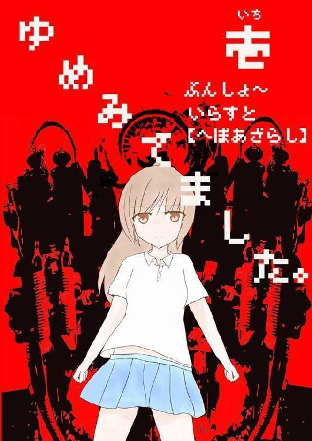
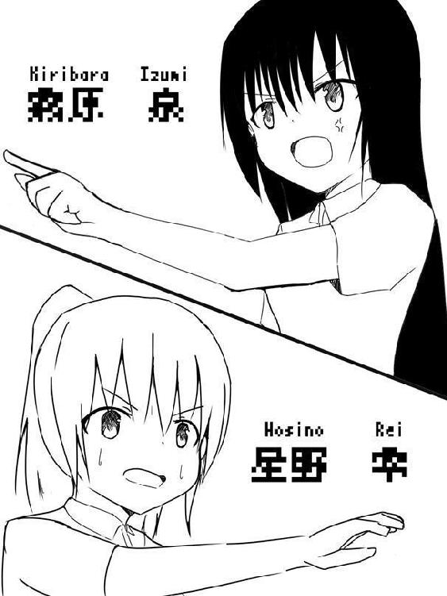
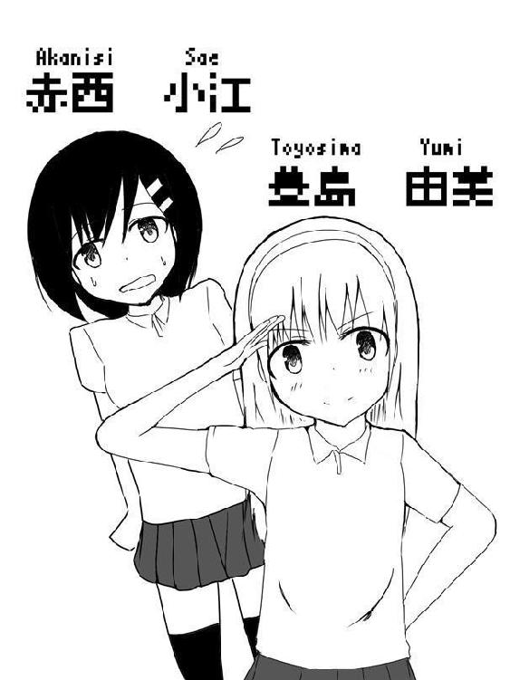
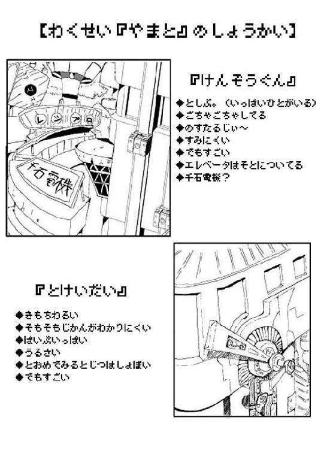

| ゆめみてました。（壱） | |
| へぼあざらし | |
| (2015) | |




『冒頭 』
――この世界の国々は空によって隔たれている。
この空には円盤状の巨大な惑星が国として複数空に浮かんでいる。
人々はその惑星の面の上に都市を築き、国ごとに多様な文化を営み、暮らしていた。
この世界には朝と夜があり、国々には個性があり、星は引力の関係で規則正しく並んでいる。
人は空と同じく心に光も闇もある。人は国と同じく個性がある。
だから人は星と同じく惹かれ合うし衝突もする。
ただし、人が何も思わなければ、感じなければ、考えなければ、自分の中の世界は消える。空も国も星も、全て失って闇に呑まれる。
だから皆は闇に抗う。自分が自分である為に、自分が世界である為に。
「来た......！」
彼女は生き残る為に機会を伺っていた。頭には大きなカウボーイハットを被っており、その帽子の後ろからは栗毛色のポニーテールが可愛らしく垂れている。手にはリボルバーの銃が握られていて、薄汚れた茶色いマントを羽織っていた。その容姿はさながら西部劇のガンマンの様であった。
彼女は今、ある薄暗い小部屋にしゃがんだまま息を殺して隠れていた。部屋に山の様に積み上げられている様々な大きさのダンボールを見るとどうやらここは物置らしい。
「音が近い......」
彼女はそう呟いた。額には大量の汗、呼吸は荒く、様子からして相当疲れている様だ。そして彼女はゆっくりと動き出し、扉に耳を当てて聞こえてくる音を確認する。
「やっぱりそうか」
その扉から伝わってきた音は様々だが、特に彼女が注意して聞いていた音は、床に敷き詰められた鉄板を叩く足音だった。
彼女は唾を飲む。そして一度耳を扉から耳を離すと、あえて音が立つ様に二、三度扉を少し強めに叩いた。すると今まで聞き耳を立てなければ聞こえなかった足音は突然大きな音となり、さらに大きな機械のモーター音と、金属がぶつかり擦れ合う音が聞こえてきた。
「......良い子だ」
そう言うと彼女は立ち上がり、扉の横に待ち伏せする様にして壁に寄りかかり、ゆっくりと銃を扉に向けて構えた。
「ドアノブが動いた時が勝負」
彼女は深呼吸し、心を落ち着ける。目線はドアノブの所に集めて一瞬の動きも見逃さない様に集中していた。すると足音が聞こえなくなり、扉越しからはモーター音だけが聞こえるようになった。
そして時は来た。ドアノブは回転し、そして扉が勢い良く開かれた。
「へ......？」
彼女は呆気にとられた。何故ならば、全く予想していない事が起きたからである。まさか、『扉が外側ではなく部屋側に開くタイプ』で、『自分の待ち構えていたポジションがまさに扉にぶつかる場所』、などとは彼女は考えてもいなかったのだ。
「ぎゃっ！」
彼女は扉に激突し、辺りに鈍い音が響く。そして彼女は痛みに耐えかねてぶつけた鼻を押さえてまたしゃがみこんでしまった。
彼女には勇気がある。力強さも感じられる。ただ頭の方は残念と言う他に無かった。
「いったぁぁぁあ！ 何すんのさこのバカ！」
だが痛がっている場合では無かった。頭上から鈍い音が連続的に聞こえてくる。そして直ぐに上を見れば扉に無数の穴が空いているではないか。この穴は間違い無く銃弾が貫通して出来たもので、また音が連続的なのでマシンガンの様な物によって開けられたものに違いなかった。彼女はたまたましゃがんでいたので助かったが、立ったままでいたら今頃は蜂の巣だったであろう。想像するだけで寒気がする。
彼女は慌てて扉の陰から飛び出し、自分の命を狙う存在に向けて銃を向ける。
「『機械』の分際でやってくれる！」
そう、彼女を狙っていた存在とは銀色のフレームを持つ、人型の機械兵である。見た目は全体的に細く、頭はまるで骸骨がゴーグルを付けている様で、またそのゴーグルからは赤い光が発されている。
そして機械兵は彼女を視認すると、改めて銃を彼女に向け、狙いを定めようとしたのだが......その動作速度は遥かに彼女より劣っていた。
機械兵が銃を向け終えたと同時に鈍い大きな音が響く。見れば機械兵の人で言う眉間の当たりに大きな穴が空いているではないか。
「遅い、トロい、鈍い！ だからお前は負けるんだ」
そう言うと機械兵のゴーグルの光は失われ、次に床に倒れてしまった。
つかの間の静寂が訪れる。動かなくなった機械兵をしゃがんだまま軽く眺めてから彼女は震えはじめた。だがそれは恐怖に震えている訳では無かった。興奮しているのだ。
「最高......たまらない！ このギリギリ感、爽快感、だからこれは止められない！」と言ったその時、「そんな事を言っている場合か？」彼女の耳元にノイズのかかった何者かの声が聞こえてきた。
「へ？」
彼女は直ぐに今聞こえてきた声に注意を向ける。だがいくら耳を澄ませても、聞こえてくるのは破壊された機械兵から出る、火花の弾ける音のみである。
今の声は機械兵から発されたものでは無い。空耳も有り得ない。ではどこから聞こえてきた声であろうか。
試しに後ろを振り向く、だが誰もいない。上にも下にも視線を向けてもいない。ではドアの外だろうか、だが外に何かがいる気配など全くないのだ。いよいよ気味が悪くなってきた彼女は、急いで壁に背中を付けて正面に銃を構える。
「何、私に何の用？」
彼女は訳も分からないまま、姿も見えない相手に問い掛けてみた。
「何が『何の用』さ、いい加減にして」
次に聞こえてきた声は少しだけノイズが収まっていた。それはどこかで聞き覚えがある声なのだが声の主が正確には分からない。彼女はまたこの得体の知れない声に恐る恐る問い掛ける。
「さては......私を殺す気か？」
彼女は正体も分からない敵にとんでもない事を聞いていると思った。だがこの状況は明らかに自分の命の危険を感じずにはいられないのでついその様な事を聞いてしまった。そして彼女は自分の問いかけに対して良い返答を望んでいた、「心配するな、私はお前の味方だ」とでも言って欲しかったが、世の中は全くもって上手くいかないものである。
「......あぁ、殺したいね」
その台詞を聞いて、彼女はそのままふらりと倒れそうになる感覚に襲われた。自分は理由も無く、謝罪しろと告げられ、正体不明の何者かに殺すと言われた。何故であろうか？
「ふ、ふざけないで！ どうして私がそんな目に！」そう叫んだと同時だった。突然、後頭部に鈍痛が走る。
しかし後ろは壁であり、後頭部を攻撃できる筈がない。しかし後ろから攻撃された事は紛れもない事実であった。彼女は正面から以外の攻撃は来ないと油断していたので、原因不明の攻撃に彼女は銃を落とし、意識はその重い一撃によって少しずつ遠のいていった。
「何で、どうして......」
「だから何で、じゃない。いい加減にしなさい」
またノイズ混じりの声が聞こえた。
「やめて......死にたくない......」
「バカか」
「わりとバカだから助けて下さい......」
「あぁもう我慢の限界、何『寝ぼけている』、いい加減『起きろ』このバカ！」
その声にはノイズは消えていた。苛立ちが混じった声が聞こえてくる。そして彼女の頭が引っ張られる感覚に襲われ、突然視界が白い光に包まれる。その時、彼女は叫び声と共に防衛本能の為か反射的に拳を上に突き上げた。
「うわああああ......あ？」
違和感。後ろには鉄板の壁があったはずだ、しかし奇妙な事に拳に柔らかいような、固いような物が当たった感じがした。加えてモヤのかかった景色は徐々に晴れてきて、何か見覚えのある景色になってきた。
「ようやく目が覚めたかバカ野郎？ 寝起きにアッパーカットとは大層なお目覚めだね」
聞き覚えのある声が聞こえる。
「ハッ......！」
彼女の意識は完全に回復した。彼女は椅子に座っていて、目の前には長方形の木の板に鉄の脚を付けた、いかにも安そうな造りの机があり、それらは彼女の目の前以外にも辺りに規則正しく並んでいる。そして彼女はその机にうつ伏せになって今まで寝ていて、かつ夢を見ていたのだ。そして彼女は学校指定のポロシャツを着て、ローファーを履いている。つまり今彼女が居る場所は学校、それも高等学校の教室である。
もう一度説明すると彼女の容姿は栗毛色の髪にポニーテール、身長は小さめである。そして彼女の名前は星野 零（ほしの れい）。見た目はどこにでも居る活発そうな女だが、心は男そのもの。「熱い事は全てにおいて優先される」と似合わないセリフを言ってのけた位だ。ただ神はステータスの振り分け方を間違えた様で、頭に回す能力は仕分けされてしまった、現実は非常である。
そして星野の目の前にいる人物はクラスメイトである霧原 泉（きりばら いずみ）。彼女は背が高く、髪は黒くて長く、凛とした顔立ちだが基本的に無表情な表情で目は半開き。性格は冷静でドＳ、星野とは対照的で随分と冷めている。なので、主に暴走した星野の押さえ役も担っている。
「まぁとりあえずそこになおれよ」
「......すいません霧原さん」
星野は教室の冷たいタイルの上で正座させられた。そして霧原は机の上に腰を下ろして足を組み、星野を鋭い眼差しで睨んでいる。まるで王の前に罪人が突き出された様な光景である。
「まず、アンタが寝る前に見た景色は何だ？」
「雲一つ無い青空です、そう、それは腹部が幸せで満たされた後でより美しく感じられました」
「つまりアンタは昼飯を食べてから夕方五時まで授業に目もくれず寝ていた訳だ」
「......はい」
まるで獲物を狩る猟師の様にじっくりと星野を追い詰めてゆく。星野はもう反論の言葉が見当たらなくなっていた。
「そして星野、アンタは朝こう言った、『今日の霧原の一日分のノートをとってやるから宿題を写させて下さい』と......しかし当の本人は眠り姫だ、じゃあそのノートの中身はどうなっている？」
冷や汗が止まらない、星野は笑顔を繕っているが心の中は恐怖で一杯であった。勿論ほぼ一日中寝ていたのだからノートなどとっているはずが無い。そして星野は無い頭で必死に打開策を考え、ピンときたものを何も考えずに口に出した。
「私は飾らない、そのままのまっさらなノートでいて欲しい、そう思ったんです」
「アンタの存在をまっさらにしてやろうか」
「ホントすいません！」
霧原の目の前で懸命に頭を下げる星野を見て霧原は大きくため息をつく。
「もういいよ、態度で示してくれさえすればさ」
「つまり霧原は私の体にしか興味が無いと」
「誤解を生む言い方は止めろ！ もういい、どうせまた『夢』にどっぷり浸かっていたんでしょ。アンタはアレの事を何て言ったっけ？」
「『明晰夢 』だよ！」
「そうそう、それ。それを始めた日からアンタは授業中寝てばかり。アンタ、同時期にそれを始めたユミや赤西さんを見習いなよ。まあ、赤西さんはそれをやっているのか知らないけど」
そう言って霧原はまた大きくため息を付いた。星野は霧原に言われて振り返る。『明晰夢』、そう、全てはここから始まった。
時は三ヶ月前に遡る、それは春真っ盛りの時期だった。
「ついに、私の野望が叶う時が来た！」
その時は学校の昼休みの時間で、星野は霧原の机の前に立って大声を上げた。
「ねぇ星野、大事な話があるの。私の親戚に有名な脳神経外科の先生がいてね......」
「やめて！ 私の頭は大丈夫だよ！」
星野はすぐさま霧原に自分は正常だと訴える。
「......はぁとにかくバカがご機嫌のようだな」
霧原は少し前に星野にたたき起こされたので不機嫌そうにしている。しかし星野はいつものペースで話を進める。
「いきなり不当な扱いを受けて私の機嫌は......分かんないよ！」
「アンタの頭の中の方が分からんよ」
霧原は、どうせ難しい言い回しをしようとしたけれどどの言葉が適切か分からずそのまま処理落ちしたのだろうと、星野の思考を汲んでやった。しかし汲んでやったところで星野のバカは治る訳では無い。
「ねえ、『明晰夢』って知ってる？」
「アンタの会話は本当に突拍子無いな。そんなの知らないよ」と言って霧原は机にうつ伏せになって寝る体勢になってしまった。
「だーっ！ 寝るなよー」
そう言って思いっきり霧原の頭をグイグイと後ろへ押す。
「あー、うるさいな、もう！ このバカ！」
そう霧原が怒った時だった。
「......ひっ！」
近くから何かに怯える声が聞こえた。
声の主は霧原の隣に座っている赤西 小江（あかにし さえ）だ。黒髪のおさげで、身長は星野と同じ位、非常におとなしい性格と言うよりもいつもおどおどして挙動不審とも言える。恐らく人見知りで極度の怖がりなのだろう。
「さすが女の子を怯えさせる事を生き甲斐とする霧原、相変わらず汚れてるなぁ」
「勝手に変態設定を私に盛り込むな」
このままではまずいと察した霧原は赤西の方を向いた。
「と、とにかくごめんね、赤西さん」
「なんか変態の謝罪は見ていて気持ち悪いね」
星野は即座に茶々を入れる。
「変態と馬鹿の二重苦は黙ってろ」
その様な訳の分からないやり取りをしていると横から弱々しい声が聞こえてくる。見れば赤西は涙目になっているではないか、霧原は打開策を何とかして考え出さなければと思っていたその時、赤西は二人が思いもしない事を言い出した。
「......い、いえそんな気にしなくて大丈夫です！ ......私、その、『明晰夢』が気になって」
「......へ？」
一瞬、二人は頭をまるでハンマーで殴られた様な衝撃に襲われた。まず初めに明晰夢に興味を持った事に驚き、次に星野と霧原の話題を聞いていた事にも驚いたからだ。するとポカンと口を開けているそんな二人の顔を見た赤西は急にあわてふためく。
「い、いえ！ 何でも無いです！ 無かったことにして下さい！」
「は、はぁ......まぁ別に言っても言わなくても良かったんだけどね」
星野がそう言ったその時だった。
「ダメダメー！ 私が気になるーっ！」と言う元気な声と共に後ろから星野に向けてラリアットが飛んできた。
「ギャース！」
思わず声をあげる星野。見事に決まった為に少し涙目になっている。
「何すんのユミ！」
首をさすりながら星野は叫んだ。そう、このラリアット女は豊島 由美（とよしま ゆみ）。小さな容姿にブラウンの少し長めの髪にカチューシャを乗せている、見た目は愛くるしく、まるで小動物の様だ。また性格は礼儀正しく目上の人を重んじる。しかし天然かつバイオレンス。子供の頃から空手をやっていた為か力が女の子のクセに無駄に強い。星野は一度、豊島とふざけて空手の真似事をしていたら、あばら骨を数本ほど折られ、それから若干トラウマである。しかも天然がゆえ、暴力を振るっても悪い事をしたと気が付かない、本当に悪気が無いから恐ろしい。そして星野はその豊島の強烈な一撃を受けたので、うずくまりながら絞り出す様な、地の底から聞こえてくる様な声を上げている。
「ど、どうしたの、レイちゃん！ どうしてそんなに苦しそうなの？ 大丈夫？」
そう言いながら星野に駆け寄り背中をさする......と思えば背中をバシバシと叩き出した。
「がっ、ちょっ、やめっ、痛いです、ごめんなさい！」
すると豊島はハッとした顔をして、「ゴメン！首が痛いんだった、間違えた」と言いながら首を叩き出した。
「いだっ、超痛いです！ 止めて下さい！」
事態は悪化する一方であった。
「ねぇ、レイちゃん痛い？ レイちゃん痛い？」
豊島は満面の笑みを浮かべている。人助けでもした気分なのだろう。流石に命の危険を感じた星野は豊島の手を掴む。
「止めて、もう止めて！ それよりユミ、『明晰夢』の話が聞きたかったんじゃないの？」
「あっ、そうか！」
豊島はハッとした顔をして星野から一歩離れる。
「......い、命拾いした」
ありがとう明晰夢。そう明晰夢に感謝しながら霧原の席に座る。その時赤西が少し怯えたので少し椅子を離した、ちょっと避けられたみたいで切ないがともかく話を切り出す事にした。
「......さて『明晰夢』について語るかなぁ」
椅子にふんぞり返る星野、少し前まで二人に振り回されていたがようやく自分のペースに戻せて安心する。赤西は怯えながら、豊島は身を乗り出しながら机に手を置き、目を輝かせて聞き入る準備をしていた。
「まず始めに言おう、『明晰夢』を習得すると自分の意志で望んだ夢を見られるんだ！ まあ夢を自覚しながらコントロールできるって話なんだけど」
きょとんとする赤西、おぉーと声をあげる豊島、二人のリアクションの大きさに星野は満足していた。
「すごーい！ でもでも、それってどうやってやるの？」
豊島が今までより机から身を乗り出して星野に質問をする。
「......フフフ、それはすごく簡単なんだ。毎日見た夢の内容を日記につけるとか、朝起きた時に夢を思い出そうとすれば良いらしい。まぁ他にも色々あるから調べてみなよ」
そう自慢げに語り終えると皆の反応はそれぞれだった。ユミは、「それだけ？」と言い、赤西は首を傾げて黙ったままで、霧原は「はぁ......胡散臭さ」とため息混じりの声を出した。その後皆はどうしたかは分からない、ただ白けさせてしまったのは確かな様だった。
星野はその反応に対して流石に萎えてしまい早々に話を切り上げた。
「けど私はそれを成功させたよ！」
場面はまた戻って三ヶ月後、二人は帰りの支度を済ませて教室を出て、その廊下を歩いていた。
「とにかく明晰夢は画期的だよ！ ある程度までだけど、自分がうまく感覚を掴めた時に、その夢の中で自分がしたい事が出来て、その夢の空間も設計できる。これってスゴイ事だと思わない？」
「はいはい、まあ私は元々興味無かったけど」
そう冷たく霧原に返された星野は頬を膨らませてふてくされる仕草を見せた。
「霧原はほんっとうに冷めてるねぇ......」
「生れ付きこうなんで」
霧原は溜め息をついてから何か妙な事に気が付く、それは背中に強烈な威圧感を感じると言うものだった。
「......何をしているんだ？」
その後ろ側には、背の高い、白衣を羽織った、見た目は情けなさそうな容姿だがどこか独特の貫禄を感じさせる人物が立っていた。その人物は教師で名前は若林博士(わかばやしひろし)、二人のクラスの担任である。若林はまだ若い教師なのだが、ぼさぼさの髪に無精ひげがあってか若干老けて見える。
星野は若林と目が合い、苦笑いをする。若林の顔が若干不機嫌そうに見えたからだ。その理湯は放課後の教室で騒いでいたからであろうか、それとも午後の授業は一日中寝ていたからであろうか。分からない。とにかく星野は身の危険を感じたので、何事も起きないように願いながら軽く礼をして、そそくさとその場を離れようとした。しかし、「待つんだ」と即座に若林に声を掛けられてしまった。
「な......何でしょうか？」
星野は怯えながら、引きつった表情で若林へ顔を向ける。
「星野、今から十分後に相談室に来なさい」と淡々と星野に告げ、そのまま廊下を歩いて行ってしまった。硬直する星野、そして若林の後姿が完全に見えなくなった後に星野は霧原にすがりついた。
「どうして私だけなのさ！」
「やめて、触らないで、バカがうつる」
霧原は相変わらず無表情のまま近付いて来た星野の頭をぐいぐいと押す。
「ひどい！ 分かったよ、私だけで行ってくるから相談室前で待っててね」
「死して屍拾う者無し」
「この人でなし！」
しかし結局このやりとりの後に霧原は待たされるハメになった。
そして星野は一階にある相談室に入る。そして二人は小さな応接用の机を隔てて椅子に座った。
「この世の中はもっと熱くあるべきです！」
これは彼女の主張だった。
「人は常に危機と快感を求め、辺りを巡り、冒険をし、より熱く、無駄なく生きるべきだ。常に日進月歩の精神で、成長しない日など無い様に、私は大きな『夢』を追って生きたいと思っている。つまり！」
「だから君は進路希望先に『天界』とか書いた訳か」
「悪気は無かったんですよ先生」
星野と若林を隔てる机の上には白い厚紙が置かれていて、書き込まれた字は綺麗ではあるが一文字一文字が非常に大きい、そして見れば進路相談用の紙の様で進路先の欄には『天界』と欄一杯にでかでかと書かれている。
それよりも何故このような話をしているのか、それは明らかで進路選択の希望を記入する用紙にこの様な事を書いたからである。若林の頭部の事で呼び出された訳では無いが、結局は星野がふざけて起きた事には変わりは無かった。
「私はいつも全力で生きているんです」
星野は机に身を乗り出して主張する。
「だから友達間の悪ふざけにも全力で応じた訳か。時に星野、天界にはそこの三階の窓からフライアウェイすれば今にでも進路先に届くぞ」
「先生、私は人生を飛び級したくありません」と即座に星野は突っ込んだ。
「それよりもてっきり私は別件で呼ばれたかと思いました」
「別件？ 何のだ？」
どうやら教室で騒いでいたことや熟睡していた事については不問だったらしい、迂闊な事を言ったと星野は思い、直ぐに訂正する。
「ま、まあそれよりも夢なんてこれ位大きくて大ざっぱな方が良いんじゃないんですか？」
星野は手を後ろで組んだ格好で適当に答える。
しかし若林は突然声を荒げ、「ダメだ！」と強く言った。予想外の反応に星野は驚きの声を漏らし、次に星野は焦って姿勢を正した。
「それに来るべき日の為に夢は無くてはならない」
「な、何ですか急に怒りだして。というか来るべき日って受験や就職の事でしょ、大げさに言い過ぎじゃないですか？」
そう言いながらも若林の言葉が原因で、星野の心臓は普段よりも早く鼓動している。
「大げさじゃないだろう、さもないと確実に近い将来面倒な事になる」
「と言っても夢なんて無いですし......人生の展開が熱ければそれで構わないですからねぇ。そう、それに私は寝ている時以外の夢には興味無いですから」
そう言いながらも星野の目は泳いでいた、適当に言って終わらせるつもりであろうか。
「じゃあどの様な展開で熱ければ良いんだ？」
「そりゃあもう、例えば機械の兵器と武器を使って戦うとか」
すると若林は一度大きくため息を付いてから立ち上がり、そして、「とにかく君の言いたい事は分かった」そう言って出口へと近づいて扉のノブに手を掛けた。
「さすが先生、話が早い。私のロマンを分かってくれるなんて......」
「高二にもなってアホな事やってないで早く大人になれ」
そう言って扉を開けて教室を出て行ってしまった。
「何さ、あの教師は、将来性に富んだ若きホープの考えと話が合わないだなんて人を見る目が無いな」
「いや、明らかにアンタが悪いでしょ」
その様なセリフと共に誰かが入口の扉から顔を覗かせた。
「何だ、霧原いたのか」
「何て言いぐさ。呼び出し食らったから待ってろ、って言ったのはどこの誰さ？」
霧原は呆れた顔をしながらゆっくりと部屋に入る。そして霧原は星野から紙をひったくり、大きなため息をついた。
「大体何、このふざけた進路先は。これで先生からお呼ばれされないとでも思ったの？」
「だってそのまままじめに答えていたらつまらないじゃないか」
「つまらないって......」
一度霧原は星野へと視線を向ける。その顔は全く悪びれた様子が無い、それを見て霧原はまた大きなため息をついた。だが霧原は注意するつもりは全く無い、かれこれ星野との付き合いは間もなく二年になるので注意しても改善しない事はすでに分かりきっていたからである。
「まぁいいや、帰るよ」
「はいはい」
そう言って二人は肩に掛ける型の学生鞄を持って学校をあとにする事にした。
この学校の周りは非常にのどかで学校裏には田園風景が広がり、校門を出て少し歩いたところには雑木林がある。だがこの惑星全体で見れば学校でこの様な風景などは珍しくもない。何故ならば星野達が住んでいる惑星『大和』はこの自然と和を重んじる為、学習施設などは田舎側に建てる風潮があるからだ。
まず惑星と言うのは星であり、また国の事を表す事である。基本的に形状は円形を土台としたもので、下側は国でそれぞれ異なり、そのまま半球になっているものや円錐になっているもの、惑星の一部がつららの様に下へと伸びて鋭く尖ったものがいくつも生えているものもある。ちなみに大和の下側はその半球になっていて、上側は国それぞれ変わった環境や施設を造り、個性的な世界を築き上げている。そして大和は他の惑星に比べて変わったものであった。まず、この惑星は他の惑星に比べ比較的小さい。そして、この惑星は中心部へ向かうほどビル街となり栄えているが、中心部から外側へ向かえば向かうほど田園風景や竹林が多く見える田舎になってゆく。そして星野達の学校はその外側、つまり田舎側にあり、星野達の自宅は中心部、都会側にあるのだ。
そして二人は自宅へ向かう為に学校から十分程歩いた所にある駅に着き、電車に乗った。
「そういえばさ、霧原」
「何？」
二人はほとんど人のいない電車の座席に一人分の間を開け、悠々と座っている。
「霧原は進路先に何て書いたの？」
星野は特に深い意味も無く聞いたのだが、その言葉を受けて霧原は少しだけ眉間に皺を寄せ、どことなく苛立ちを感じた様に見えたので、星野は直ぐに、「ま、まぁその話は良いか」と言い直して話を終わらせてしまった。
星野は一度冷静になり、霧原に言った何がまずい事だったのか考え直した。すると星野の頭にある出来事が浮かんだ。
そういえば霧原はこの惑星の大学に進学しないで他の惑星の大学に行くと言う事で親ともめていたな、それも音楽の為だからと言ったせいで余計に親を怒らせてしまったんだっけ、と言った話を思い出す。
しまった、と星野は思うと途端に話を切り出しにくくなってしまった。しかし、悩んでいるならもっと私にも相談しろよ、とも星野は思ってしまうのであった。そう考えるとこの隣に一人分空いた席が例え、折角広くスペースが取れているから使おうとか、狭苦しいからとかの理由であったとしても何か別の理由に感じられて胸が痛い。そして星野はその沈黙の中、ぼんやりとある事を考えていた。
霧原の問題なら、霧原なりのやり方で解決した方が本人の納得できる結果になるだろう。もし今自分が余計な手出しをすればストレスになるかもしれない、勿論相談してもらえる事に以上に越した事は無いけれど、と。そう星野は随分霧原について考えたがそんな霧原を、真面目だなぁ、もう少し私みたいに融通利かせて生きられたら良いのに、とも思ってしまう。
ふと、星野は窓から外を見る、どうやら惑星の中心部に出たらしく所狭しに建て並んだ巨大な建物が並んでいる。また他の建物同士は橋や空中に敷かれた道路が絡まっているかの様に繋がれていて、その建物と道が原因で地面がほとんど見えなくなってしまっている。おかげでどこが地上なのか分からない状態になっていて、地上に道路が存在しているのかでさえ疑ってしまう程だ。最早これはビル街やショッピングモールと呼ぶより要塞と呼んで良い位である。更にこの街の妙な所が近未来のデザインを意識しているのに少し錆びていて少し薄めの単色系の色ばかり使用した明らかに古くさい看板、これまた同じく少し薄めの単色系の色で塗装を施した建物の外壁、そして更に妙なのがその建物から多数の店が少し突き出ていてデキモノの様になっている。かつ、店は一つ一つ独立しているので、ここまでくると一軒家を縦に積み上げた様にも見えなくもない。それらは遠目から見ると非常にごちゃごちゃとしていて、まるで昔の商店街と工場地帯を足して二で割った様な風景である。
星野はこの景色を見て溜め息をつき、「どうしてこんなに複雑な造りなんだろうな......」とぼやいた。
何に対してぼやいたのかは分からない。ただ星野は霧原の胸にかかる思いをどうすれば和らげられるのか、どうほぐしてやれば良いのか、その様な事を必死に、必死に考えた結果、「揉めば治るのか？」と言う考えに至った。和らげる、ほぐす、の意味は物理的な意味の方に変わっていた。
「......？ 一体どうしたのさ？」
「さあ、とりあえず私に胸を貸してごらん、精神的な意味じゃない方で、物理的な意味で」
「急に何の話だ！」
「細かい事は気にしない」
「気にするよ！」
このやりとりは彼らの地元の駅に着くまで続けられた。二人の家は実は近い、ただこの惑星の構造の関係上、小学校や中学校も家が近かろうと全く違う学校に通っていた。
二人は帰路についている。そこは巨大なマンションやビルの立ち並んでいる通りで、二人は別々のだがその通りのマンションに住んでいる。その通りを歩いている間は、二人とも、また他愛の無い会話を続けていた。
「星野みたいに何も考えずに生きられたらなぁ......」
霧原はため息をつきながら呟く。
「何それ、うらやましいってこと？」
「本当にすごい頭だね、うらやましいと切に思う」
「そうかぁ......うらやましいかぁ......」
そう言って星野の綻ぶ顔を見ていると本当にうらやましく感じてくる。
「ねぇ、たまに思うんだけど毎日元気でテンションは高い、そんなアンタを見てると......薬でもやってんじゃないかと」
「いくらなんでもそれは失礼だよ！ それに、病人を憐れむ様な視線を向けないでよ」
「病人ね......そうだ、病で思い出したけどアンタさ」
急に霧原がかしこまってきたので星野も少し身構える。
「な、何？」
「ブラックアウト症候群って聞いたことある？」
その言葉にポカンとして何も喋らなくなった星野の様子を見て霧原は、「そうだよね、アンタがこんな胡散臭い話、知るはずないよね。ごめん、今の無かった事にして」と事をすぐに流してしまった。
「なんだよ、後味悪いな」
「まあ、気になるならパソコン使って調べてみてよ。じゃあ私はこっちだから」
そう言ってお互いに軽く別れのあいさつをすると霧原は自宅の方へと歩いて行った。
星野はこの通りにある、二十階建のマンションの十四階にある一室に、父と母と娘の三人で暮らしている。豊過ぎず、貧し過ぎず、ごく一般的な家庭だ。そして星野はエレベータを使用して上へ向かい、少し早い足取りで我が家へと向かう。
「ただいまー」
そう言って玄関に入り、手を洗ってから他のものには目もくれず、素早くベッドのある自室へと向かった。そして鞄を放り投げ、制服のままベッドに横たわって、「さてと、それじゃ始めますか」と言ってゆっくりと目を閉じた。
星野は想像する。まず自分を世界の中心と置き、まず服装からイメージが定着するまで、何度も何度も妄想を巡らせる。そう、星野は茶色いハットとボロボロの茶色いマントを羽織っていて、片手にはリボルバーの銃が握られている、といった教室で見た夢と同じ妄想をした。
そして、定着してきたのならば、自分の好きな世界を頭の中で思い描く。辺りは、低い音で唸る機械のモーター音、蒸気が噴出される音などが響き、鼻に纏わり付くような独特のオイルの臭いが漂っている。さらに星野は頭の中の世界を拡張させる。その場所は工場の様で、また、ドームの形をした機械が複数、真っ直ぐ整った列を作って並んでいる。その一つ一つには針が数字を指し示すタイプのアナログな円形のメーターが付いていて、そのメーターの針は激しく左右に揺れている、そして鉄の床の上には機械の配線が蜘蛛の巣の様にあちらこちらに延びている。
準備は整った。星野はゆっくりと目を開くと、辺りは工場の施設内の様になっていた。その光景を見渡してから満足げな表情をしてから叫ぶ。
「そうだ、これが私の望む世界だ！」
そう叫ぶと星野は銃をしっかり握ったまま走り、そのメーター付きの機械の装置の間を素早く移動する。その移動の最中に、教室で見た夢にも出てきた骸骨頭の機械兵がちらほら見えた。
「侵入者発見！ 侵入者発見！」
その様な漫画でよく使われる様な定番のアナウンスが警報音と共に辺りに響き渡った。
「そんな雑魚に捕まるか」
そう鼻で笑ってから呟き、星野は途中で見つけた細い一本道の通路へと進んで行った。そして、どんどん奥へと進んでゆくと曲がり角の先にいかにも何かが待ち構えていそうな四角い大きな扉がどっしりと構えているではないか。しめた、と思い中に入ろうとすると突然またそのアナウンス音が聞こえてきた。しかしそれは辺りからではなく、何故か後ろから、それも複数の音が重なって聞こえてきたのである。
「侵入者！ 侵入者！」
星野はふと後ろを振り返る。するとそこには何体もの機械兵が押し掛けているのが見えた。ギョッとする星野、こうなればすぐに部屋に入り、籠城するしかない。
事態は一刻を争う、星野はすぐに『ドアノブを引いて』扉を手前に開き、内側に入って扉を背にする。後ろからマシンガンの撃つ音がし、扉に鈍い音が何度も響く。扉に厚みがあった為に貫通しないのは良かったが、あまり聞いていて良いものではなかった。中に侵入した星野はすぐ振り返り、勢いよく扉を横に『スライド』させて閉めたが、機械兵の手が扉に挟まってしまい完全に閉まらない。
「くそっ！」
扉は中々閉まらない、扉の隙間から機械兵のゴーグルの赤い光が漏れる、星野は力負けしているのか隙間が徐々に大きくなりその光の強さが少しずつ強くなってゆく、しかしこれ以上力が入らない。
「あっ......！」
それは僅かな不幸によってもたらされた。必死になっていたせいか汗で手が滑り、扉は一瞬にして全て開かれてしまったのだ。目の前には機械兵の軍勢、妖しく光るそのゴーグルは星野をしっかりと捉えている。終わった。誰もがそう思うその瞬間、「諦めない！」そう叫ぶと同時に星野は即座に腰の銃に手を回し、正面にすぐさま構える。その間は一秒もかからなかった。星野は動作が全て完了すると、叫びながら指で引き金に何度も力を込めた。一発、二発と当たる度によろける機械兵、そしてある程度後ろに敵が下がったと同時に機械兵の腹に蹴りを食らわせる。すると一体が倒れた勢いで他の敵も二、三台倒れた。その機会を見計らって星野は直ぐにまた扉を閉め直す。
「た、助かった......」
星野はその場でへたり込み、手に持っていた銃を床に置いた。床の畳が疲れた体に程よい安らぎをもたらしてくれる。油断したら寝てしまいそうだった。
――違和感。星野は何か腑に落ちないような気がしてならなかった。初めのうちは分からなかったがそれは次第にはっきりとし始める。
「あれ？ そういや私は扉のドアノブを回して引いて開けなかったかな？ けれどここは......スライド式だ。しかも障子だって？ それどころかこんなに扉のサイズ小さかったっけ？」
ふと星野は首を傾げ、次に辺りを見回した。目の前に現れたその部屋は障子に掛け軸、畳まで敷いてあり、まさにそれは和室そのものだった。
「私って何でこんな所にいるんだっけ？ と言うか何をしてたんだっけ？ いや、私はこの部屋に元々いた......様な......あれ？」
どうも少し前にとっていたドアを開く前の行動が何故だかなかなか思い出せない。混乱が始まった。自分が自分で無い様な感覚に襲われる。
「待て、落ち着け、これは夢だ、夢なんだ。私が夢の中でしたかった事は機械の敵と......」
その独り言で星野はある単語を言った。『機械の敵』と、だ。そして認識が始まり、星野は見たかった夢はこんなものでは無かった事に気が付く。そう考えるとようやく頭の中の整理がついた。
「そうだよ、そう！ 私は元々こんな古風な夢じゃなくてもっとＳＦっぽい夢を見ていたはずだ！ なんで夢がいきなりすり替わっているんだ、気持ち悪いなぁ」
そう、先ほどの様な施設に和室など存在する訳がない。何より分かりやすい異変は、鉄の扉が扉は障子に変わってしまった事だ。今まで明晰夢を見て途中で夢から覚める事は多々あったのだが自分の意志に反した夢は見た事がない。自分の夢が完全に崩壊してしまっている。とにかく手掛かりが欲しいと思い、銃を握ってからこの世界へと繋がった原因である障子に近づいたその時だった。目の前の突然勢いよく障子が開かれた。何事かと思うと目の前でチョンマゲの中年の男が縁側の上で正座しているではないか。それに加えておかしな事に、暗くて見えにくいが外は地面に白い石が敷き詰められていて、隅に小さな松の木と小さな池のある、趣のある庭が広がっていた。そしてさらにこのチョンマゲは切羽詰まった様子で妙な事を喋りだした。
「代官様！ 我々も最早これまでです。早くお逃げ下さい！」
あまりの訳の分からなさに星野は唖然としてしまった。『代官』そのワードがどうも自分の思い描く夢と一致しないからである。
「な、何なんだ一体......」
しかしそんな星野を無視するかの様にチョンマゲは続ける。
「とにかくお逃げ下さい！ あの女には先生すらかないませんでした......」
「......へ？ あ、いや、その、先生ってどちらさまで？」
「何を寝ぼけているんですか！ この前用心棒に雇った剣術の先生ですよ！」
「はぁ......」
とりあえず今の状況は星野が代官様で命を狙われている。しかもその相手は用心棒を倒してしまう程の剣術の使い手らしい。だがこんなカウボーイハットを被り、マントを纏った奇抜な代官様などいるのかと星野は思ったが一応夢なので黙っておく、しかし世界観がイマイチ定まらない。ただ、星野がすべきは大体理解出来た。
「と、とにかく私がそいつを倒しに行く！」
そう言ってから部屋から飛び出そうとした時だった。
「代官様、なりません！」
突然にチョンマゲに足を掴まれたので、星野はずっこけてしまった。
「何をするのさ！」
「し、しかしここで逃げていかないと私達は破滅ですよ！ 代官様が勇敢なのは分かり......」とチョンマゲが言いかけたその時だった。
「貴様が民を苦しめる代官か......」
暗闇から随分と澄んだ女の声が聞こえた。
「ひぃっ！」
その声にチョンマゲは悲鳴をあげ、情けなくも頭を抱え込んで震え始めてしまった。
「そこの下郎、離れよ。さすればお前の命は保証する。私は無駄な殺生は好まない」
チョンマゲが開けた障子から、白い石の敷き詰められている庭の辺りに僅かに誰かの姿が見える。暗くてその女の顔は見えにくかったが部屋からの明かりのおかげでうっすらと見えた。髪型は黒髪のおさげ、袴を穿き、一本の日本刀を両手で握り締めていて、腰には長物の鞘をぶら下げている。そして女は音も立てずに徐々に姿を現す。息を飲む星野。得体の知れない相手だが、とりあえず銃を構えて待機する。そして女は縁側に足を掛けて上がろうとした時、部屋の灯りで女の顔が照らされ、その時にはっきりと顔が浮かび上がった。その時、星野はあまりの衝撃に完全に思考が停止してしまった。何故ならば素顔が見えたその女は、どう見てもクラスメイトの赤西だったからである。
「あ、赤西さん？」
すると女は余りに急な出来事に驚いた様で、全身が硬直し、そのまま刀を落としてしまった。
そして急にオドオドとした口調で喋り出す。
「え？ ほ、星野さん？ まさか星野さんなの？」
やはり女の正体は赤西だったらしい、それを決定付けるかの様に赤西の顔は真っ赤になってしまった。
「なんだぁ赤西さんじゃないかぁ。どうしたの？ なんか性格が変わっ――」
そう言いかけた時、目にも留まらぬ速さで赤西は星野に近づき両手で星野の肩を掴んだ。
「違います！」
この光景を見られたのが余りに恥ずかしかったのだろうか、赤西は星野の会話を裏返った声で遮った。
「ち、違うとおっしゃられても......」
星野は現状が掴めないが袴姿の赤西が目の前にいる。これだけはなんとか状況として飲み込もうとした。だが何故和室に飛び込んでしまったのかは謎である。とにかく赤西に現状を聞く他に無い。星野はとりあえず気になった事を尋ねる。
「ねぇ、その赤西さんのかっこ――」
「あ、あ、あ、あのっ！ 昨日の宿題難しくありませんでしたかっ！」
しかし質問は赤西によって即座に流されてしまった。しかも、またもや焦りながら、星野の台詞を非常に大きな声で、しかもこの現状にあまりにミスマッチな質問で遮った。袴姿とマント姿の二人が古風な家屋で宿題のやり取りをしているのだから奇妙なものである。とにかく星野は勢いのある赤西の質問にたじろぎながら答える。
「う、うん......そうだね。まぁ私は霧原に写させて貰うから実は宿題の内容をチラッと見ただけなんだけ――」
「私が貸しましょう！」
その普段見せない、赤西のあまりの威圧に星野は少し引き気味になりながら返答する。
「あ、ありがとうございます。......ってそうそう、あとさ、赤西さんって夢の中だと性格変わるの？」
「いやーーーーーっ！」
そう叫んでから赤西はついに顔を真っ赤にして今度は頭を抱えてうずくまってしまった。
「うわぁ......もうだめだ......おしまいだ......」
赤西は涙声でぶつぶつと何かを呟いている。それを見た星野は慌てて赤西をに言葉を掛けた。
「ご、ごめん、もう言わないから。ね？」と言いつつも心の中では、「赤西さんいじるのおもしろいなー」と星野は考えてしまうのであった。
「ほ、本当ですか......？」
「本当、本当」
時と場合かな、と星野の頭にその様な思考がよぎった。まずそれは一旦置いておき、星野は直感的に感じた事を赤西に質問する。
「まあそんなことよりも、とりあえずこれって......赤西さんの夢だったりしない？」
そう言うと赤西はまた赤くなって小さくうなずいた。赤西の服装から星野はそうではないかと薄々思ってはいたので、やはりかと納得はしたが、このままでは大きな疑問が残ってしまうのである。
「それじゃあ何でかな？」
「ど、どうかしましたか？」
「いや、もしもこれが本当に赤西さんの夢だとしたら、つまり赤西さんは毎日学校から帰ってから直ぐに部屋でダラダラと昼寝を？」
「や、や、やめてください！ それ以上言わないで！」
そう言って赤西はまたうずくまって膝に頭を埋めてしまった。
「さてはお昼寝大好きか？」
「うっ......！」
「お昼寝大好き星人か？」
「い、いや......意味が分からないです」
「ごめん、ごめん、まあそんな冗談はさておき......どうやって私の夢と赤西さんの夢が繋がったんだろう」
ようやくまともな話をし始めてくれたと安心して、赤西は膝に埋めていた顔を上げる。
「そうですよね......でも普段から夢って、突然全く関係の無い別の夢にすり替わっても、何の疑いもなくそのままその夢に乗っかってしまいますよね。だから夢が繋がって、変な事が起きても違和感とかは特にありませんでした。最近は明晰夢でコントロールできるから忘れてしまっていた感覚ですが......」
「そう、そうなんだ。自分は『違和感に気が付くまで相手に変えられた夢に支配されたままになる』。けれど『他人に見せられた夢の中でもその夢に気が付くと、明晰夢で自分の夢を創り出す要領でまた自分の夢に世界を変更出来る』みたい......それも相手ごと気が付かせないまま」
「で、でもそれの何がマズイんですか？」
「いや、つまり何でも出来るって事は......下手したら『相手の気が付かないうちに人を殺せる』って事だよね？ 相手を自分の夢にうまく操作して、その死へと組まれたシナリオを、当たり前かの様に受け入れさせて、殺す。できると思わない？」
人を殺せる、その発言の重みに二人の間に嫌な空気が流れ込んだ。そして赤西の顔色は見る見るうちに青くなり、しまいには赤西はとんでもない事を口に出した。
「ま、まさか星野さんは私の事......殺そうとしているんですか......？」
星野はこの発言を受けて少し脅しが効きすぎたと思い、反省する。そしてすぐさま赤西の仮説を否定した。
「いやいやいや、それは無いって！ それに、これは眠っている時の事だから多分、殺されたとしてもショックで目が覚める程度で済むと思うよ......多分」
「び、びっくりしました......。 でももし、もしですよっ！ 現実の世界で夢を見る事ができる現象でも発生したとしたら......大変な事になっちゃいますよ！」
「そ、そんな事起こるはず絶対無いって、と言うよりも起こらないで欲しいね。でも......仮に起こったとしたらそれはきっと、私たちの知らない間で発生して、都市伝説の様な噂話のレベルでしか伝わらなくて、もしかしたら私たちも知らない間に被害を受けているかもしれない、まるで未知の病気の様な......そんなものだと思う」
そう星野が喋り終えてから二人は黙りこくってしまった。夢の殺人への応用、それも気が付かないうちに、死を受け入れさせて殺す。そう言ってしまってからではなんだが、考えただけで寒気がする。そんなことはあり得ないと星野は言ったが二人とも嫌な予感を感じずにはいられない。そう、人の直感とは侮れないものであり、これが全ての始まりだと二人は知る由も無かった。何にせよ、巻き込まれる時はいつも突然なのだ。
「病名ナラアル」
突然、どこからか声が聞こえた。星野は慌てて辺りを見渡すがそこには赤西以外誰も居ない。
「何だ......今の言葉は......」
その星野の様子を見た赤西は、キョトンとしたままで首を傾げている。しかし赤西には何が起きたのか分からない様子で、逆に妙な事を言いだした星野を心配せずにいられなかった。加えて星野の表情は青ざめていて、行動もどこかおかしいのである。すると星野は、「......い、今の音は赤西さんの声？」と星野は震える声で尋ねた。赤西はとんでもないと言うかの様な顔をして、忙しく首を左右に振った。
「私でも赤西さんのものでも無い、じゃあこの声は一体何だ？」
そう言って星野は和室を見渡す。しかしその声の主はどうにも見当たらない。おかしいなと首を傾げたその時の事だった。
「敗者の残留思念」
「......え？」
淋しげに、ポツリと呟かれた言葉を星野は聞き逃さなかった。今度聞こえたその声は、聞き覚えのある声だ。そしてまさかと思った星野は勢い良く後ろを振り返る。するとそこには少し前とは雰囲気の異なる赤西の姿があった。前髪で目が隠れて表情が確認しにくい、それが原因なのかどことなく異常さを感じさせる。そして星野は覚悟を決めて恐る恐る赤西に話し掛けた。
「あ、赤西さん、一体何言っているの？ どうかしたの？」
そう赤西に尋ねると、「えっ......私、何か変でしたか？」といつものオドオドした様子で返事してみせた。あの得体の知れないような恐怖感などは消えて、普段の赤西に戻っていた。だが赤西の恐怖感が消えたところで星野の恐怖が完全に取り除かれた訳では無い。
「いやいやいや、待って赤西さん、それはおかしいって！ だって確かに変な事を呟いたハズなのに！」
「あ、あの、私おかしな事でも言いましたか？」
赤西からその事を言われ、もう星野は耐えきれなくなっていた。気が付けば星野は赤西の肩を掴み、鋭く睨め付けながら怒鳴っていた。
「しらばっくれるのもいい加減にして！ 何だかの声だとか言ってたでしょ。いや、確かに言ってたじゃないか！」
「ひっ！」
その星野の態度に赤西は怯え、涙目になり始めた。だが赤西は勇気を振り絞って星野に対して言い返す。
「だ、だとしたら、さっきから星野さんの方が変ですよ！」
「......何だと？ 私が変？ ふざけないで、私のどこが変だって言うの！」
「だってさっきから怒ってばかりだし。それに、それに......さっきから星野さん......」
「何？ 何か文句あるの？ ねえ！」
「......その私に突き付けてる銃をしまってくださいよ！」
「......え？」
見れば、星野は銃を握りしめていて、それは赤西の首筋に突き付けられていた。その事に気が付いてから星野は慌てて銃を投げ捨てた。抜いた記憶もないのに何故銃を握っていたのだろうか。
「嘘でしょ......。う、嘘だって......私はそんなつもりは一切無くて......」
星野はハッとする。そう言えば少し前に話していた事。『違和感に気が付くまで相手に変えられた夢に支配されたままになる』だ。つまりこの銃は握らされたものだと理解して、全身を寒気が走り抜けた。
しかし握らされたのは自分だけではない、言葉を握らされた人がいる。赤西だ。彼女もその一人だとしたら、「今二人は誰かの夢の中かっ......！」そう言いながら星野は赤西の反対方向である後ろを振り向いた、その時だった。
「死ヌ為ニ生マレタ生物ハ全テ家畜ト呼ブンダ」
後ろから突如声がした。それはまるで脳の奥が震える様な感覚であった。突然、ノイズのある、変声機を通して喋ったかの様な低い声が聞こえてきたのだ。星野はさすがにこの声に固まってしまい、頭もおろか目も動かせない状態に陥る。例え汗が額から垂れたとしても手は指一本動かさず、目が乾こうともまばたきすらせず、呼吸する事さえも忘れていた。強烈な圧力が背中から伝わってくる。しかし今後ろにいる人物は赤西しかいない、だが聞こえてきた声は赤西の声とは程遠い。では誰なのか？ 誰でもないのかもしれない、ただ単に星野達を脅かそうとしているのかもしれない。だが、星野はある事を思い出してしまいある疑念を抱かずにいられなくなる。『夢を殺人へ応用する手法』の事だ。もしかすると、今まさにこの状況がそうなのではないか思うと、頭の中が急に冷えてゆき、真っ白へなってゆく感覚が襲った。恐怖で何も喋りたくない、しかし、黙ったままでいる訳にもいかないのだ。そう考えた星野は一度唾を飲み込んでから何とか声を喉から絞り出して、尋ねた。
「......お前は一体何をするつもりだ？」
そう言い終えてから、星野は細かく何度も息を吸ったり吐いたりした。星野は激しい運動もした訳でも無いのに肩で息をしている。強烈なプレッシャー、突然に正体の分からない何かに襲われる恐怖、それらによって星野の精神はもう限界に近かった。すると星野の言葉に対して返事が返ってくる。
「オレハタダ食事ニ来タダケサ」
「......食......事？」
星野はただ返事をする事だけが限界だった。もはや思考などマトモに働いていない、その人物が誰なのか、その言葉の意味が何なのかなど全く考えられなかった。すると謎の声はその様な姿の星野に対して具体例でも示すかの様な発言をする。ただその具体例は星野にとって余りに衝撃的過ぎた。
「......死ヌ為ニ生マレタ生物ハ全テ家畜ト呼ブ。家畜ハ食ベラレル為ニ生マレテイルンダ。ホラ、アノ娘ダッテ」
「......え？ まさか、まさか！」
家畜、アノ娘、食事、この言葉が示す結果は明白で、それは頭を働かせずとも理解できる事だった。そして星野は直ぐに後ろを振り向くが、星野はその行為をこれから後悔する事になるなど、思いもしなかった。まず、星野は振り返ったが声の主は見当たらなかった。しかし、もう声の主の存在などもうどうでも良くなっていた。それよりも、後ろに広がっている光景が星野の視線を釘付けにしたからだ。その光景を一言で言うならば『悪夢』そのものだった。
数匹の人型をした巨大な頭を持つ藍色の化け物が何かに群がっている。それも顔の目、鼻などのパーツは福笑いの様にバラバラに付いていて気味が悪いと言ったらありゃしない。そして良く見ればその群の中の一匹が長細い何かをしゃぶっている様だった。
――足だ、誰かの。そして星野は直感した。あの足は誰のものか、そして星野はそれを間違うはずが無かった。
「あ、あ、赤西さんなの？ 今アイツに喰われているのはまさか赤西さんなの？」
星野は自分でも恐ろしい事を喋っていると思ったが聞かずにはいられなかった。まるで体中の血液が凍り付くようだ。体は冷えていくのに、暑くもないのに、奇妙な事に汗は吹き出す一方だった。すると後ろから、「モチロン」切り捨てる様に、あっさりと、謎の声の主に残酷な事を告げられてしまった。しかし、その台詞を告げられ黙っていられる星野では無い。
「い、今行くよ、赤西さん！」
そして星野はそう叫んで赤西の元に向かおうとした、その時、星野の肩に、何か冷たいものが触れた。それも強い力で星野を進む方向の反対側へと引っ張るので、いくら必死に走ろうとしても全く動けないのである。その間にも薄気味悪い化け物が赤西を食らっていると考えると強い焦りを感じてしまう。しかし、じたばたしても何も出来ず、ただただ感じる無力感、もう星野は無様にも何者かも分からない謎の相手に頼み込むしか無くなっていた。
「やめてよ......頼むから放してよ！」
「イヤダヨ」
「嘘だ......こんな事信じられるか......！」
そう言っていると付け加えられる様に、追い打ちをかける様に、信じられない言葉が後ろから投げかけられた。
「信ジラレ無イナラ見セテアゲル」
「......え？」
一瞬、星野はその言葉の意味が理解出来なくなる。ただ、その言葉に絶望するべきだという事位は理解できた。
「ダカラ君モ」
「何を......するんだ」
その次の瞬間、星野は後ろからもう一方の肩を掴まれ、さすがに驚きで声を漏らしてしまう。もうその時には抵抗などする力も無く、ただただ怯えるだけだった。赤西の様に食べられる。それだけ、何も出来ずに、死を受け入れ、夢に呑まれる。星野は、何かの意志によって動かされたかの様にゆっくりと首だけを後ろに向ける、そこに見えたのは赤西を食らった紫色の化け物で、その開かれた醜い口から黒い歯が見えた。そして星野は訳の分からないまま、化け物にこう告げられた。
「イタダキマス」
そして世界は......激痛と共に暗転した。
「うわああああああああああああ！ ......あれ？」
気が付けば星野はベッドの上にいた。そう、ここは寝る前の世界で、星野は布団を強く払い除けて跳ね起きた様だ。星野はきょろきょろと辺りを見回し、次に一度大きく息を吸って、吐いてからまたベッドに倒れ込んだ。
「そうだった......これは夢だった、夢だったね......よかった！ 私生きてるよ......」
そう言ったものの未だに恐怖心は残ったままで、胸の鼓動は止まらない。こんなにも怯えていたのかと思うと少し驚いてしまう。
「はぁっ......はぁっ......」
星野は何度も、何度も深呼吸を繰り返して通常の呼吸に戻そうとする。そして少し落ち着いた所で今度は勢い良く大量の息を吸い込んで、その空気を今まで思っていた事と共に吐き出した。
「何だ、あれは？ 何なんだよ、あの悲鳴はっ、化け物はっ！ 怖いとかそういうレベルじゃないよ、あれは！ それに、私の意志に反して聞こえたどころか......私の意志がまるで乗っ取られた様なそんな感覚までした。でもとにかく......今は休むか」
そう言い終えると星野はベッドから降りて、自分の部屋を出る。ふらつくその足で真っ直ぐリビングへと向かった。とにかく人のいる所にいたい、一人は怖いと思ったからだ。しかしその思いもすぐ打ち砕かれることになる。
「あ、牛乳が無い。ねぇレイ、大至急でひとっ走りして牛乳を買ってきてくれないかしら？」
母のふざけたお願いで星野の安息は奪われてしまった。
「な、何で？ 今すぐ？」
「しょうがないでしょ？ 今私は料理の途中で忙しいの」
そう言われると寝てばかりの自分は休みたいなどと反論する事などできず、仕方なく従う羽目になってしまった。星野はわざと玄関の扉を大きく音を立てて開き、のろのろとマンション入口へと降りる為にエレベータの所へ向かった。その乗り込む際に、下に向かうボタンを押して２、３秒でエレベータの扉が開いたので余計なストレスを感じずに済んだのが幸いである。そして星野はエレベータに乗ると、直ぐに壁に背中を着けて気だるそうにしてもたれかかった。
「どうしてこんなタイミングでお使いなんて行かせるかね」
そう愚痴を呟いている間にもエレベータは下へ、下へと向かう。五階......四階......三階......、扉の隣にある今エレベータがいる階が表示されているモニターをぼうっと見つめながら溜め息をついた。エレベータの中は完全に一人だけの空間なので疲れきった今の星野には本来ならば居心地が良いはずだが、今は怖くて一人で居たくない感情が強く出ていたので、早く降りられないかとイライラしていた。
「まぁうちのマンション前は人通り多いし、外に出れば気分は落ち着くかな。しかし、何だったんだかな......あのうめき声。はぁ、気持ち悪い」
そうぼやいたのと同時にエレベータが一階に到着した事を伝える音が鳴る。星野は壁に背を着けるのを止め、ゆっくりと体勢を直してから両手を上げて背中を伸ばす。それが済んだと同時、タイミングを見計らったかの様に扉が開いたので、星野はエレベータから出るとまたのろのろと歩き始めようとした。しかし、何か奇妙な、不愉快な感覚に襲われて直ぐに立ち止まってしまった。
「......何か変だな」
星野には何が変なのかは分からない、ただ直感的にその何かを感じ取ったのだ。目の前に見えるマンションの入り口に、魔物でも待ち構えているかの様なその感覚を、本能的に、である。
「行きたく無い、でも買い物に行かないと晩飯は抜きなんだよなぁ」
そう思わず言葉を漏らしたが慌てて、「いやいやいや、夜中に怖くてトイレ行けなくなったみたいな事言って、私は小学生じゃないんだから」と言ってから最後に、バカだなぁ私、と付け足して前の台詞を否定する。
だが体は正直で、緊張で額から汗が溢れだしていた。ついにこの感覚に堪えられなくなった星野は、走ってとにかく早くお使いを終わらせてしまおうと決断し、一直線に入り口まで走り、そして入り口を抜けた。
「へへっ、そんなの怖くないですよー」
そう言って気分を紛らわせ、正面を向く、やはり何もない......のだが、その場所は普段は夜も賑わう場所なのに、妙に静まり返っている。気味が悪い。
「おかしいな......なんでこんな静かなんだ？」
そう呟くと左方から聞き覚えのある声が聞こえてきた。
「......星野......さん？」
その声を聞き間違える筈などなかった。
「赤西さん？」
そう言って星野は左へ振り返ろうとする。しかし、星野の頭にある考えがよぎる。「赤西さんがどうしてこの時間に、この場所にいる？」と。赤西の家は星野の家から離れていると聞いたことがあったので、こんな時間に赤西がここにいるのは明らかにおかしい。そう思いながらも頭はもう左へと向き始めている。もう止まらないのだ。そして、星野は左を向ききってから見える、その目の前に広がっていた光景は、想像を絶するものだった。
そこには、紫の肉の塊と言うべきか、紫の化け物達がひしめき合っている。先程の夢で見たアイツらだ。そしてその塊の頂にはある人物がいて、今にも呑まれそうになっているではないか。
「赤西さん......一体どうしたんだよ！」
そう叫んだ時には赤西の姿は頭しか見えておらず、どんどん塊の中に沈んでゆく。次第に赤い液体が地面に流れ、化け物達の足元に溜まってゆく。そして、赤西は最後の力を振り絞って、星野にこう告げた。
「星野さん......早く逃げてください......起き......て」
そして赤西は言葉の途中で肉の塊の中へと沈んでしまった。
「赤西さんっ！」
しかし叫んだところでもうどうにもならない。それどころかこの叫びはむしろ更なる最悪の事態をもたらすことになった。その化け物達は、星野の叫び声に反応したのか一斉に星野側を向き始めた。
「何なの......これ......？」
星野は化け物達を睨めつけながらも、必死に泣き出したい感情を押さえ込んでいた。涙を流す暇も、人の死を悔やむ時間も化け物達は与えてはくれない。すると化け物の一匹が群の中からゆっくりと歩きながら出てきて、一度止まってから、満面の笑みを浮かべてから次に雄叫びを上げた。すると後ろの化け物達も次々と笑みを浮かべながら動き出し、そして初めに動き出した化け物が強く手を叩いたと同時に一斉に化け物達は星野めがけて走り出した
殺される、星野はそう感じずにはいられなかった。例え勇気のある星野でも、この化け物の群れを見たら逃げる他に手段が思いつかない。まず星野は即座にマンションの入り口のドアを抜け、全力でエレベータまで走る。その時に後ろを見るとドアのガラス越しに複数の化け物達が見え、その数十秒後にドアのガラスごと突き破って建物内に侵入してきた。
「何で私がこんな目に！」
だがその様な事を言っている場合ではない。とにかく今は生き延びる事が最優先である。さて、次の逃走手段はエレベータか階段かだ。しかし階段は追いつかれる可能性があるのであまり正しいとは言い難い。だがエレベータは少し前に乗ったばかりだったので、エレベータが今いる階を示すランプは一階で光っていた。星野はエレベータ前にたどり着くと上に向かうボタンをすぐに押してエレベータに乗り込んだ。
目の前に化け物の群がほぼ目の前見える。これは早く閉めなければ乗り込まれてしまうかもしれない。その光景に恐怖しながら、素早く向かう階層のボタンと扉を閉めるボタンを押した。
しかし閉まる速度は少し遅く、化け物が伸ばした手が入り口に届きそうになっているではないか。
「早く閉まれこのバカベーター！」
そう叫んだところで早く閉まるはずがないが余りの焦燥についそう言ってしまった。ドアの隙間は小さくなってゆく。しかしまだこの程度ならギリギリ手が挟める。ドアに手を挟むとエレベータは安全上の設計でもう一度ドアが開いてしまうので、それをやられてしまえばもうおしまいだ。そして化け物の手がドアに触れそうなところまで伸びる。しかしドアの隙間も手を挟める限度一杯まできていた。
「頼む！ 閉まってくれ、閉まってくれ！」
そして、星野は祈りながら目を閉じた。無音、結果はまだ分からない。ただ目を閉じてからもう五秒は経った。しかし何も変化が起こらない。ならば助かったのだろうか。そして星野は恐る恐る、瞼を持ち上げた。
「うああああああ！」
悲鳴がエレベータ内に響く。その星野の網膜にはその強烈な映像が焼き付けられた。これを見て叫ぶのも仕方ない、何故ならばエレベータのドアと床にべったりと青いペンキの様なものが大量に付着していて、床にも少し広がっていたからだ。これが血ならば虐殺が行われた後の現場の様な有様だと言ってよい程である。
「何だよ、これ......まるで血みたいな......」
だがドアは完全に閉まっていて、化け物もいない。星野は安堵する。そして少ししてからすぐにエレベータは上へと動き出した。
「一応、助かったんだよね？」
そう言うと星野その場にへたり込んでしまった。しかし全くもって、少し前から精神をすり減らす様な出来事しか起きていない。もうこの場で思い切り泣いてしまおうかと思ったその時、自分のポケットに入れたままであった携帯が突然鳴り始めた。着信元は非通知設定にされていて誰が掛けたのだかは分からない。星野はまた何か嫌な予感を感じながらも星野はその電話に出る事にする。
「はい......もしもし」
「......星野か？」
その声を聞いて、体からガスが抜けたかの様に急に緊張が体から消えた。なぜならばその声は普段から聞いている、若林先生の声だったからだ。星野はホッと息をついて、少し砕けた口調で話始めた。
「お、脅かさないで下さいよ、若林先生。そんな事より私、大変な事に巻き込まれていて電話どころじゃ......」と言いかけて星野は一度喋る事を止めた。
何かがおかしい。今は安心しているはずなのに、何故か違和感がある。星野は少し冷静になってみた。そしてまず考えた事は、若林は何故このタイミングで電話を掛けてきたのか、と言う事だった。しかし進路相談についてまだ話したい事があったのかもしれないという可能性も払いきれない。ではこの若林の電話は全く違和感など無いのだろうか、と思った時だった。
「......え、あれ？ ちょっと待って下さい」
星野はある違和感にようやく気が付いた。その違和感は小さなものだが、この違和感一つで全ての現状が変わってしまうほどの十分な爆発力を秘めている。そして二、三秒息をおいてから星野は若林に尋ねた。
「せ、先生は、どうして私の携帯の電話番号を知っているんですか？」
そう言い切ってから嫌な汗が額から溢れ出した。 勿論、星野は自宅や親の番号等の個人情報は学校で記録、保管されている。しかし、星野自身の携帯の番号は記入した記憶が無い。それに進路相談の話ならば自宅の電話に掛けてくるはずだ。
「ど、どうして？」
そう質問をしたはずなのだが、若林からは質問にそぐわない妙な返答が返ってきた。
「......死ぬ為に生まれた生物は全て家畜と呼ぶ」
星野はこの言葉を聞いて胸の拍動が一段と大きくなった事が分かった。
「......へ？ な、何で先生がその言葉を？」
星野はこの言葉を忘れるはずがなかった。何故なら、この言葉は紛れもなく、化け物が星野に語り掛けた言葉だったからだ。これにより、若林と言う存在が、一変する。味方から敵に、護ってくれる存在から、逃れるべき敵へと。変わってしまったのだ。
そして何故か若林は完全に星野の質問を無視して一方的に話を続ける。
「だが進化する為に生まれた生物は夢を見る権利がある」
「ちょっと待って下さいよ、何を訳の分からない事を言っているんですか。とにかく私の質問に答えて......」
しかし若林は聞く耳など持たない。一方的で意味不明な話をするばかりだ。
「つまり夢を見る権利を放棄する事は家畜になる事であり、最後まで夢を見る事が出来る生物は......『進化する』」
「せ、先生、何を言っているのか私にはさっぱりで......」
全くもって意味が分からなかった。しかし若林の話はおかしな事になる一方であった。
「とにかく......君には罰を受けて貰う」
その言葉を聞いて星野は唖然としてしまった。身に覚えのない罰を受けなければならないとまで言われた。理不尽極まりない話で、流石に星野も言い返す。
「罰......？ 罰だって？ ふ、ふざけないで下さいよ。理不尽過ぎるじゃないですか！」
しかし、星野の言葉はある事象によって遮られた。それは突然エレベータが止まり、突然ブザーが大きな音で鳴り響き始めた事だ。エレベータ内の電灯は不規則に付いたり消えたりしていて、今いる階層を示すモニターに表示されている文字は普段数字意外の文字が表示される事など有り得ないのだが『ＥＲ』と表示されている。
「何......一体どうしちゃったの......」
この異常な事態の連続に星野はうろたえる。もう頭の中の整理が全く付かなくなっていた。しかし星野は、まだそんなことは序の口だったのだと次の光景で理解させられる事になる。それは予想外と言うよりも理外の事態と言う方が正しい。その出来事そのものが狂っているのだから仕方の無い事であった。
それは順を追って、正しく狂い始めた。まずエレベータ内の照明が完全に落ち、ブザー音も鳴りやんだ。するとあろうことかエレベータのドアがゆっくりと開きだした。何階なのかも分からない、階が存在するかも分からない。しかし開くはずの無い扉が開いたのだ。その開いた先は何も見えない闇が広がっていて、そのせいでこの闇の中には何も存在していないと星野は考えていた。だがその暗闇の中から石の床の上を革靴で歩くときのコツン、コツン、という音が聞こえてきたのだ。
「嘘でしょ......そんなのあり得ない！ だって何も無いはずの空間から何かが現れるなんて事が出来たらもうそれはもう......人じゃない」
その音がする度に星野に悪寒が走る。この音はまるで破滅へのカウントダウンの様に聞こえ、嫌な出来事の始まりにしか感じられなかった。すると闇の中にぼんやりと人影が浮かび上がってきた。それは足音とともに姿がはっきりしてきて、ついに足音が止まったかと思った時にはその人物は星野の目の前にいた。
「......夜分恐れ入るぞ、星野」
「若林......先生......」
これほどに理解し難い展開があるのだろうか。いままでの異常な出来事を数えていたらキリがないほどおかしなことばかりである。だがそんな事を考えている場合では無かった。若林は話を次々と勝手に進めてゆく。
「君は情けない、こんなに易々と主導権を奪われるなんて。ほら、下を見るんだ」
「し、下？」
若林の命令は、ただただ嫌な予感しかしなかった。しかし、星野は不安を押し殺して、視線を下に落とす事にした。すると何という事だろうか、そこにあるべきものが、無くてはならないものが、きれいさっぱり無くなっていた。それはいつでも、誰もが下を見ればあるもの、そう、床だ。そこには床の代わりに上空から見下ろした街の夜景が広がっていた。それがずっとその空間にずっと固定されているのならどんなに良かった事か。しかし現実はそんなに甘くは無く、星野の体は宙で半回転し、頭を下にして真っ逆さまに落ち始めたのだ。
「うわあぁぁぁぁぁ！」
そう叫んでいる間にも地面はどんどん近づいて来る。とにかく星野はパニック状態に陥っていてまともに頭は働かない。そんな中、姿は見えないが若林の声がハッキリ聞こえてきた。
「駄目だな、この程度じゃ『ブラックアウト症候群』じゃ生き残れるはずが無い」
「何......？ 『ブラックアウト症候群』？」
「そんな事考えている場合か？ 情けない。だから君は......死ぬんだ」
「死......ぬ......？」
そう、このまま落下すれば体を地面に打ち付けて死ぬに決まっているのだ。
「嫌だ......！」
しかし、星野がそう言ったところで自分の落下は止まらない。見れば地面がまるで自分を吸い込んでいるかの様に感じる。逃れられない悪夢。空から飛び降りると言った感覚は無い、体は硬直していて緊張していた。星野の頭には思考などは浮かばず、ただ死ぬ。それだけを思っていた。そしてついに地面が近くなったのでそっと目を閉じた。そう、諦めて目を閉じたのだ。しかし、その時、星野の恐怖に怯える思考は突如クリアになり、またそこからゆっくりと頭が働きだしたのだ。
......待てよ。 エレベータ内にいたはずなのに、空から落ちる。こんな事が現実には起こるはずが無い。
「おかしいんだ、そんな事有り得ないんだ」
強烈な違和感が星野を襲う。少し前までこの事態を星野は問題無く受け入れていた。しかしここまで妙な事が起きれば流石に異常だと認識できる。そして星野の頭の中で確認が始まった。
「そうだ、これしかない......」
まず混乱から、そして思考が始まり、冷静さが戻ってくる。この今までの現象はおかしくないかと、その認識が始まると答えが導き出される。星野は目をそっと瞑り、叫ぶように強く言った。
「これは......夢だ！」
そう叫んで目を開いた時、星野はベッドから起き上がっていた。星野は辺りを見回して自分の部屋だと確認してホッとする。そう、星野は夢から覚めたかと思っていたらまた夢を見ていたのだ。そして気が付けば息は荒くなっていて、息苦しい。手のひらを左胸に当てると心臓は未だに激しく脈打っている事が分かる。自分では分からないが、きっと目を鏡で見たら瞳孔が開ききっているのだろうなと思った。
「はぁっ、はぁっ......た、助かった......良かったっ！」
星野はそう叫ぶとゆっくりとベッドから降りて机に向かおうとする。しかし、立とうとすると足がガクガクと震えて歩けず、無理に立とうとしたらバランスを崩して尻餅をついてしまった。なので、仕方無く四つん這いで机に向かう事にしたが、腕も震えるので結局ほふく前進の様な格好で進む事にした。
「これを親が見たらどう思うのやら」
星野は自分の怯えぶりに思わず引きつった顔ではあるが笑ってしまった。 そしてようやく机の近くにたどり着き、よじ登る様にして椅子に座った。
「とりあえずまた夢って事は無いよね？」
そう言ってから自分の頬をつねってみる、勿論痛いに決まっていた。
「まぁこれで夢じゃないって事は保証出来ないけど、とりあえず自分の意志で動けるし、念じても自分の思った夢に世界を変えられない......じゃあこれは現実か」
もちろん確証はできない。しかしとにかくいろんな出来事に巻き込まれてすり減った精神を癒したい思いから今はそう信じ込む事にした。安心した星野は体の力を抜き、深呼吸を始めようとしたその時、制服のポケットに入れていた携帯が鳴り始めた。星野は心臓が止まるかと思うほど驚き、慌てて椅子を倒しそうになるが何とかとどまる事が出来たので、事なきをえた。
「一体誰から......？」
若林先生からでは無いだろうな、と思いつつ携帯を恐る恐るポケットから取り出して見ると着信相手はなんと赤西からであった。あの恐ろしい経験を同じくした唯一の人物からの着信、思い返せば彼女は化け物達に夢の中で殺されている。星野は無事を祈る様な気持ちで電話に出た。
「もしもしっ！」
「......ほ、星野さん？」
そのいつも通りのおどおどした口調、少し声が震えている様にも感じるがそれはいつもと変わらない赤西であり、その声を聞けて星野は安心する。
「星野さん、無事で良かった......何度電話しても出ないから焦りました......もうこれで三回目ですよ」
その赤西の声は今にも泣き出しそうな声だった。しかし星野はその前に何か引っかかる感じがしたので、それを赤西に尋ねる。
「あ、あのさ、心配していたって事は赤西さんもあの夢を見ていたって事？」
「あ......そう言えばおかしいですね......夢を共有するなんて」
また謎が増えてしまった。黙り込む二人。そして、赤西は思い出したようにまた喋り出した。
「そ、それよりも......ちょっと私おかしな事言っているかもしれないですけど......夢の途中で星野さんも良く知っているある人が出てきたんです」
その言葉を聞いて、真っ先に星野の頭に、ある人物が思い浮かんだ。
「まさか......若林先生か？」
「ほ、星野さんももしかして会ったんですか？ やっぱりあれは本当だったんだ......」
「そっちもか！ ちなみに何かされた？」
すると少し間を置いてから、震えた声で赤西は答える。
「か、片足を......切断されたの......」
一瞬、その会話の内容が現実離れし過ぎて星野の頭がついていかなかった。ただ少ししてから体の血の気が引いていく事を実感する。切断、これ以上に具体的で分かりやすい言葉があるだろうか、電話越しにでもその光景がハッキリと目に写っているかの様に、頭の中に浮かぶ。星野は携帯を持つ手とは反対の手で自分のふくらはぎ辺りを強く握り、自分の足は無事かと思わず確認してしまう。そして星野は赤西との会話を続ける。
「せ、切断......？ それは、つまりその......」
「だ、大丈夫、今足はあるから！ 夢の話だから！」
「そ、そうか、よかった......」
そう言えばそうかと思い、少し安心したが赤西の怯える様子はそのままであったので星野は自分の無神経さに直ぐ謝罪を入れた。
「いや、ゴメン......良くないよね。そりゃあんな事に巻き込まれたんだから......」
そう、夢の中だとしても恐ろしい事には変わりはない。星野はその考えだけはしっかりと頭の中に置いておく事を忘れないように考え直した。するとまた赤西の震える声が電話越しに聞こえてくる。
「い、いえ......こっちこそ気を使わせてすみません。......と、とにかく、私の身に起きたのは、ふと足を見たら私の片足が無くなっていて、驚いていたら目の前にいた若林先生が私の足を持っていて......もう何が何だか分からなかったの。でもね、そこでさすがにこれは夢だって思い出したら何とか夢から覚められたの......」
「そ、そうなんだ。でも私、赤西さんがあの化け物達に殺されたかと思って心配してたんだよ」
「す、すいません......心配かけて」
「ううん、こっちこそごめんね。じゃあそろそろ電話切るね、こんな事早く忘れよう」
「そうですね......それではまた明日学校で」
「うん、またね」
そう言って星野は通話を終えた。しかし奇妙な事だ。自分と赤西がまさか同じ夢を見ているとは思いもしなかった。
「一体何がなんなの......と言うかさっきの出来事......夢だと思いたいけど夢なんだよね」
星野は机の上に座り、パソコンを使って若林が言っていた『ブラックアウト症候群』について調べだした。
「これの事か......」
星野のパソコンのスクリーンにはとあるニュースサイトの記事が映し出されている。その見出しは、『街中で約百人が集団失神 原因はブラックアウト症候群か？』といったものであった。
「一週間前の記事か、随分最近だな。ええっと......『惑星リバティーの住宅街で家の中の住民、通行人を含めた約百人が突然、意識を失う事件が発生した。第一発見者はその光景を見て警察に連絡したがその発見者も意識を失った状態で発見された。死者は出ていないが被害者は全員目が覚めた後、強い倦怠感を感じる症状を訴えた。第一発見者は当時、辺りの光景が強く歪み、その中に人が倒れていると警察に通報したので地元警察は周囲にガスが発生していたと見当を付けていたが、その異常は見られず、捜査は難航している。やはりこれも、最近多発している集団失神事件の原因だと噂されている、ブラックアウト症候群なのだろうか』......なんか私が思っていたのと違うな。でも失神しているってことは一応寝ているとも解釈できるのかな？」
星野は首を傾げながらも検索を進める、するとブラックアウト症候群について詳しく解説しているサイトを発見したので、しめた、と思いながらそのサイトの文に目を通す。始めのうちはようやくこの状況を打開する情報を得られたと心躍っていた。しかし、読み進めれば進める程状況は変わる。何やら書いてある内容がどうも都市伝説の様な面白おかしな文では無く、医学の専門的な用語が散りばめられた、重苦しい文章になっている。一文ごとに重みがあり、加えてその一つ一つが自分の置かれている状況を回りくどい言い回しであまりに的確に突いてくるので、書き手の高慢さがはっきりと伝わり、その不愉快さに腹が立つのであった。そして星野はその中から目を疑うような一文を見つけ出した。
「......何これ、おかしいって。感染者の九割は死亡、残りは失踪、行方不明！ ブラックアウト症候群......遭遇したら殆ど生きて帰って来られないって事？ そんな事があってたまるか......！」
だがこれらはあくまでその病気に遭遇したらの場合であり、実際の所は星野には無関係の話である。しかし、色々と考え事をすると人はいらぬ発想まで浮かべてしまうもので、それは星野も例外では無かった。
「もしも少し前の現象がブラックアウト症候群だったら？」
その仮説を立てる事は、揉め事へとわざわざ首を突っ込みに行く、それ程に愚かしいものであった。しかし、少し前にあのとんでもない出来事に巻き込まれた身である星野には、最悪のケースを考えずにはいられない。気が付けば星野は、自分の性格らしからぬ言葉を漏らしていた。
「死にたくないよ......」
感染者であるはずが無いのにあたかも感染者であるかの様に感じる。心細い、誰かにこの気持ちを打ち明けたいが、時計の針を見ればもう三時を回っているので家族とは話したくとももう寝ているだろう。すると、星野は自分の携帯がふと目に入り、無性に電話を掛けたくなった。赤西さんと話がしたい、今の時間は夜の三時、だとしても、迷惑だとしても、もう星野は掛けずにはいられなくなっていて、携帯を耳に当てた。そして二、三回のコール音の後に赤西が電話に出た。
「も......もしもし？」
「ゴメン！ こんな時間に本当にゴメン！ でも私さっきの事について調べたら怖くなっちゃって、失礼なのは分かっているけど私もう我慢が......」
そう星野がいろいろと言い訳を早口で言っているとその言葉を遮って赤西が星野に言葉を掛けた。
「いいんですよ」
「えっ？」
「遠慮なんていらないんです。私だって気持ちは分かります。それに私も心細かったですし、星野さんの思った事、何でも言ってみて下さい......と言っても私にはこんな事しか出来ないですが」
そう赤西は最後に少し笑って言った。大した事を話した訳でもない。素晴らしい事を発言した訳でもない。しかし、この辛い感情を僅かにでも理解し、受け止めてくれる人がいてくれるだけで星野は救われた様な気分になる。その言葉に含まれた僅かな暖かさが星野の胸に溶け込んでゆく。心地良かった、胸の中に湯が流れ込んでくる様にして暖かさが広がり、その赤西の言葉は身に染みた。
「ありがとう赤西さん......」
「いいえ、私こそありがとうございます。私だって怖いのは同じですから」
そう言った後、二人の会話は夜明けまで途切れる事は無くなった。お互いに学校の話や、自分たちの夢の中で普段は何をしているかの話、本当に他愛の無い話ばかりだが十分に楽しかった。そして夜が明けた頃に星野は宿題をしていない事を思い出してショックを受け、赤西が夢での約束だから見せましょうかと言う。そして本来起床である時間になり、赤西に感謝の旨を伝えて電話を切り、星野は四桁にさしかかっていた通話料金に絶望しつつ、暖かい朝を迎えた。
「あ、赤西さん......あの、昨日の夜はありがとう」
場所は変わり、星野は学校の教室にいるクラスメイトの赤西の机の前にいた。少し寝不足に感じるが、彼女はその前に十分な睡眠を取っているのでほとんど問題は生じなかった。
ちなみに星野は学校に登校し、教室に入ってから早々に星野は前の様に赤西に話しかけた......のだが、とたんに、教室は突然ざわつき始めた。その周りの様子の変化に星野は何故だろうと首を傾げ、ふと自分の台詞を改めて確認する。
『私』＋『赤西』＋『夜』＝『はぁと』。
その瞬間、己の愚かさに星野は気が付いた。この話の流れでは明らかに星野が赤西に対していかがわしい事をしたと誤解されてしまう。
「ち、違う！ 誤解だって誤解！」
慌てて手を振りながら皆へ弁明をする星野。だが皆の顔は引きつったままだ。その光景に泣きそうになる赤西、そして赤西は早く星野をこの場から引き離そうとして、星野へ昨日約束した宿題をカバンをから取り出し、涙目で星野に渡そうとしたので事態はより悪くなる。
「と、とにかく約束の物は渡しましたから......早く席に戻って下さい......お願いします！」
そっちは今じゃなくて良いでしょうが、と心の中で突っ込んでから赤西の行動を止めにかかる。
「止めて赤西さん、これ以上私に罪を着せないで！」
そう慌てふためく星野の後ろに人影が現れ、ポンと彼女の肩に手を置いた。
「星野......悪い事は言わない、署までご同行願いましょうか」
「霧原......悪い事は言わない、くたばれ」
「それは悪いことしか言ってない」
「そもそも、私はこの件に関してだけはただ単に赤西さんに宿題を見せて貰う約束をしただけだ。それ以外の何物でも無い」
「じゃあなんで約束したのに泣き出したの？ と言うか、普段あまり話さないのに、いつ、どこでそんな約束したの？」
「昨日、夢の中で」
「誰もアンタにロマンチストになれなんて言ってない」
「本当だ、信じてくれ！」
「逆に本当だったら私はアンタと今後どう接したらいいのさ」
「いつも通りでいいじゃないか」
「つまり、軽犯罪者として見ればいいのか」
「霧原普段からそんな目で私を見ていたのか！」
「さて、そろそろ先生が来るから席に着きましょうね」
「言い逃げするな！」
そう言ってから星野は大切な事を思い出した。間もなくするとホームルームが始まり、奴が来る。担任の若林が来るのだ。昨日の出来事を思い出すだけで震えが止まらないのにその出来事を起こしたと思われる人物が間もなく目の前に現れる。それを考えるだけで吐き気を催す程であった。近くにいる赤西も顔色が少し前から優れない様子で少し震えている。なので星野は、「大丈夫、何かあったら私がなんとかするから」と赤西の肩に手を置いて、優しく告げた。赤西はそれに対して少し微笑んでみせたがまだ怯えた様子である。そして星野は自分の席に戻り、深く腰掛けると一度深呼吸をする。
「......さて、どんなツラして出てくるのやら」
星野はそう呟いた時、教室の黒板の左上にある木の枠組みの時計が丁度ホームルームの開始する一分前を告げていた。皆は友達とのお喋りを中断し、椅子に座り始める。外は雲一つ無い青空で、窓からは連なる山々がはっきりと見えた。当たり前でいつも通りの光景。
ダカラコソダッタ。
だからこの後、あの様な出来事が起こるなど予想できなかったのだ。これから始まる人類の存亡に関わる闘いが始まるなどこの『イツモドオリ』を繰り返す学生は知る由も無かった。そしてついに教室の前の扉がゆっくりと開く、恐らく扉を開いているのは間違いなく若林だ。星野は呼吸を忘れてしまう程、その時扉を凝視していた。ついに来る、全ての謎の鍵を握る男、若林博士が。
しかし若林の顔を拝む前に、その事件は突然起きてしまったのだ。時計の秒針は絶え間なく一秒、一秒と時を刻んでいる。そしてホームルーム開始の二秒前、ふと星野は目が乾いたと思い、一瞬だけまばたきをした。そしてまた見開いたその世界は、その光景は、随分と狂ッタモノダッタ。
世界の色は反転し、同時に音はこの世から消え、皆の動きは静止した。
世界ガ沈黙シタノダ。
辺りの光景は一変しカラフルになる、しかし色は原色だらけで気味が悪い、耳にはピーピーガーガーと雑音だらけ。
ハジマッタノダ。『ブラックアウト症候群』ガハジマッタノダ。
意味不明。この言葉が一番この現状にしっくりくる言葉だろう。初めに受けた洗礼は、頭の中に不規則に鳴り響く、電子音とテレビの砂嵐の様なノイズだった。次に、視界からの洗礼で、星野の目の前には不可思議な、狂気じみた光景が広がっていた。まず色彩が異常である、空は血の様に赤く染まり、黒板は深い紫色になり、人々の肌は青く染まり、机や椅子の色は目を傷める位黄色い。さらに妙な事に、皆は止まっているのだが目に映る辺りの風景が断続的に波を打っているかの様に、ぐにゃり、ぐにゃり、と歪んでいる。かつ、何より不愉快なのが人の頭が無表情のまま、絶えず膨張と収縮を繰り返すのだから、嫌で、嫌でたまらない。そしてふと時計に目をやると針がせわしく普通の回転と逆回転を一定のタイミングで繰り返している。
「何......これ......」
兎にも角にも動けなくてはどうにもならないので星野は立ち上がろうとする。しかし、金縛りの様に体が全く動かない。動くのは目と口と首、つまり首から上のみで不自由さが身にしみる結果となっている。よって強烈なノイズが鼓膜を責めるのだが手で塞ぐ事が出来ないので星野は苛立ちが募っていた。
「ど、どうなっているの......？ 私の頭がおかしくなったの？」
そう呟く星野の声には少し震えが混じっていた。あまりに急な展開。あまりに気味の悪い光景、もう星野の思考は恐怖に染まっていた。そして、目を机の上に置いてある自分の手に何気なくやったその時、網膜に焼き付くその映像に星野は驚愕した。何故ならば、腕と手の甲に無数の薄気味悪い青い斑点が浮かび上がっているからである。
「な、何これ！」
星野はたまらず恐怖のあまりに叫んでしまった。するとその叫びにかき消されたかの様に突然、頭の中に響くノイズはおさまった。不気味なまでの静けさ、何かが起こるのではないかと逆に不安になってしまう。
「何だったんだろう、あのノイズ......」
その星野が呟き終えた直後の出来事だった。今まで動かずに前を向いていた生徒達の頭が一斉に、クルリと星野の方へと頭を向けたのだ。その振り向いた頭はそのまま膨張と収縮を繰り返し、目や鼻や口の位置も元の場所からずれていて、一人一人大きさもバラバラの歪んだ青い顔が目の前に並んでいた。この生き物達を星野は見たことがある。
「......これ、まさか昨日の化け物達！」
特に目の前の席に座っている人は非常に星野と距離が近いのでより強烈さがある。その化け物達の顔は星野が記憶しているクラスメイトの顔とはかけ離れたものになっていたので恐怖だけでなく心への衝撃も大きい。そしてある単語が星野の頭に浮かび上がる。
「......もし、もしだ、集団失神事件の被害者が失神中に何かを見ていたとすれば、そしてその間に見ていた物が倦怠感を、強烈なストレス感じる程の恐怖体験だとすれば......これがまさかブラックアウト症候群か？」
すると星野の思考は次の段階へとシフトする。もしその仮定が正しいのならば、ある事が自分の身に襲いかかる事が決定されてしまう。星野は昨夜調べた事を思い出した。
「もしこれが真実ならば生存確率は......一割。生還者のその後の身の保障は......無い」
どの道に転んでも待ち受けるのは『死』である。感染者に希望など無い、ただ座して死を待つのみである。全ての道が分かりきった答えに収束するのならば、今全ての行動が無駄であるのなら、今すぐにでも死んでしまいたい。何故ならば目の前にいる化け物達が爛々と輝かせている目は、これから起こりうる事を示しているからである。胸から何かがせりあがってくる、窒息してしまう程に苦しいのだ。
星野は改めて化け物達を直視する。すると化け物の様になってしまったクラスメイト達は、顔の形は歪んだままだが、何故か皆は顔のサイズを大きくしたまま変化をさせる事を突然止めた。そして化け物達はしばらく星野をじっと見つめた後にケタケタと笑い始める。今すぐにでも逃げ出したい、だが金縛りで動く事が出来ず化け物の見せ物の様な姿の自分、「こんな時にこいつらが自分を襲いに来たら一体どうなる？」、その様な言葉が頭をよぎる。しかし答えは明白で『死』しか無かった。そしてその単語が強く頭の中にハッキリと浮かび上がったのと同時、化け物達が星野を見つめながらおもむろに立ち上がり出したのだ。この行動が示す意味はもう言うまでもない、ニタニタ笑いながらゆっくりと星野へと近づく化け物の目的は、間違いなく星野に死を与える事だろう。そして一番恐れるべきなのは目の前、この真正面にいる化け物だ。見れば星野を見下ろし、真っ青な両手を上に挙げている。
「......やめてよ」
星野の顔が恐怖に歪む。だがその表情を見て興奮したのか、化け物は喜んでいる様だ。
「......どうしてこんな事に」
化け物の口元がより強く歪む。そこから血の様に赤い唾液が机の上に二、三滴垂れた。それを見た星野は苦笑いをしながら、「......もうダメかも」と諦めた様にそう呟いて、そっと目を閉じた。
――夢だよね、これ。
頭にはそんな現実逃避のような星野には似合わない、情けない台詞が浮かんでいた。
――そうだ、これは夢だ。
またしてもマイナスな思考、諦めの発想だ。
――その思考は正しい、これは夢だ。
どこか妙だ。今の星野にはその様なプラスな思考が浮かぶはずがない。そして星野も自分の意志で浮かべたつもりも無い。だが現にその台詞が頭にハッキリと浮かんでいる。まるで誰かに思考を支配されているかのようだ。
――今、お前は悪夢を見ている。
いよいよ気味が悪くなってきた。また自分の意志に反した台詞が頭に浮かんでくる。
――分かっているならば覚めるんだ。
そして星野はついにある事に気が付く、その台詞は頭に鮮明に浮かぶだけでなく耳からも強い衝撃が加わっていた事に。つまり誰かが星野へ声として呼び掛けていたのだ。それに気が付いた星野は我に帰り、勢い良く目を開き、その闇から放たれた。
「お前の進路は天界に行く事。そして将来の夢は神......そうだろ星野？」
「若林......先生？」
星野の目に映るその世界は信じ難いものであった。星野の周りにいた化け物達は悶えながら、恐ろしい形相で地面に倒れてのたうち回っている。そして机の上に若林が立っていて、星野を見下ろしていた。この光景と状況に星野は合点がいかず、直ぐに若林に尋ねた。
「こ、これは全部若林先生が？」
「ああ、そうとも」
そう簡単に若林は言って見せたが全く理解ができない、何故ならば若林は本来敵である存在でなければならないからである。
「いやいやいや！ 先生は私たちの敵でしょ？ 昨日、私たちをひどい目に遭わせたでしょ？ なのに、どうして......」
そう、若林は昨夜、星野達に夢の中で攻撃に近いものを仕掛けてきた。しかし事態は一変、若林が化け物に襲われる星野を助けたのだ。その混乱する星野に対し、若林は更に謎かけの様な事を星野に聞く。
「では、私が君を殺せば納得するか？」
「その方がしっくりきますね......」
すると、その言葉に対して若林は軽く笑って見せてから、とんでもない事を言い出した。
「では死んでみるか」
「へ......？」
死んでもらう、助けて貰ったのにまた殺そうとする。その謎の言葉は星野の頭を悩ませた。これでは若林は一体どちら側の人間なのか全く分からない。しかし、ただ単に若林が星野を殺そうとしている様子は見受けられないのだ。しかし、星野は若林の死んでもらうと言った意味は、より重要な、何か別の真意がある様に感じられた。しかし、そう考えている間にどういう訳か机の上にいたはずの若林は忽然と消えてしまっていたのである。
「消えた......？ もう何が何だか分からないって......」
そう呟いていると一字一句聞き逃せない位にハッキリと、どこからか声が聞こえてきた。
「私の事を探している場合か？」
直ぐにその声が聞こえてきた方向へ視線を向けるとどういう訳か若林は星野の机から離れた教室の入り口に寄りかかっている。しかし、星野はそれに気をとられている場合ではなかった。倒れていたはずの化け物がゆっくりと起き上がり始めたのだ。つまりこのままでは化け物達に星野が襲われるとしか考えられない。しかし、何故かこの様な危機的状況でも星野は落ち着いていて、確信に満ちた表情をしている。そう、若林の登場をひっかかりに星野はある事を思い出し、気が付いたのだ。
「そうだ......こんな有り得ない事ばかり起きて、こんな事現実離れし過ぎている。だから......これは夢だ！」
そう強く言い放った。自分はどこかのタイミングで寝てしまった、後は起きるだけだと、そう思っていた。しかし、起きようとしても、何度目を閉じたり開いたりしても、全く目の前の景色は変わらないままである。星野は何度も何度も起きようと試みる。しかし結果は同じ、変わった事と言えば化け物達がより星野に近付いていると言う事位だ。
「嘘だ......これは夢なんだ！」
星野はこの現状が信じられなかった、と言うよりも信じたく無かった。ただ今は、星野は祈るだけで、駄々っ子の様にこれは夢だと言い張る事しか出来なかった。
「これは夢なんだ、夢さ、夢なのにっ......起きられないなんて絶対におかしい！」
しかし、そう叫ぶ星野に対して若林は淡白にこう告げた。
「おかしいと思う事の方がおかしい」
その言葉を聞いて星野の頭には、冷や水を掛けられた様な感覚が走る。そう、星野の言っている事は現実逃避に等しく、結局は甘えで諦め、例え不満を訴えていても逃げる事に変わらなかった。その逃げ出す者は結局、死へ身を委ねる事になる。
「現実を見ろ。逃げるなんて選択肢は許されない。逃げる、諦めると言う事は巡り巡って、生きる事から逃げる、生きる事を諦める事に変わりないと理解するんだ」
つまり若林は、星野はこの夢から逃げる事は許されないと言っている。するとこの事態について星野はある言葉を思い出す、「もし夢を現実に出力できる現象が起きたらどうするんですかね......？」、赤西が昨晩夢の中で言った言葉だ。もしこの赤西の言ったことが起きているならば、理論として星野は起きていて、起きる事は不可能だ。かつ、この世界で絶命すればそのままの意味、現実でも死ぬのだ。星野はその事を理解して、若林の言った事を受け止めて、決意する事にした。この理論が真であり、それが今起きているのならば星野の選択肢は一つしかなかった。
「なら......戦うしか無いじゃないか！」
立ち向かう、強く頭に浮かべたその意志は血流に乗り、心臓へ流れて全身へ回る。身体が火照り、自信に満たされてゆく。
そして気が付けばある化け物の一匹は立ち上がり、星野に掴みかかる体制に入っている。しかし、星野は動じない、その真っ直ぐ前を見据える大きな目は、恐怖に目を背けるような愚かな真似はしない。何故ならば星野の頭の中には世界がもう開け始めていたのだから。そしてついに化け物の一匹がおもむろに星野の動かなくなっている腕を掴んだ。その感触は、ひんやりとしてペトペトしていて、それが腕に張り付くように感じる。しかし、それでも星野は集中を切らさない、動じないようにぐっと堪え、頭の中に自分の夢を練り上げる。
「......集中しろ、これは夢だ」
すると、何故か化け物は腕から手を離し、星野の腕から不愉快な感覚が消える。
ひとまずは安心、と思われたが直ぐに両肩を勢いよく掴まれた。両肩を掴まれると言う事は今、化け物の顔が正面にあると言う事だ。流石に強烈なプレッシャーを感じる。
そして化け物の吐息と微かに聴こえる笑いを押し殺した様な声、そして何より気味の悪い笑いで、歪んだ顔が、より星野の胸の鼓動を狂わせる。心臓が普段より激しく脈を打っているのだから、どうしようとも冷静になどなれるはずが無い。
だが星野は見るしかないのだ、この状況を覆して根底そのものを変えてしまう夢を。だが、まだ完全に自分の頭の中に夢が創造しきれていない。しかし、もうこれ以上時間を引き延ばすことは自分の命に関わる。
「私はっ......！」
そう叫び、目を見開いた時だった、目の前で化け物が大口を開けているのが見えたのは。そしてその口は、星野に覆い被さる様にして、星野を胴体の所まで包み込んだ。
そして、その時だろうか、不愉快な、まるで岩同士が擦れる様な鈍い音がしたのは。そう、その音は、化け物の黒い歯で星野の腹の肉をえぐり、そして骨を砕く、鈍い音の正体はまさにそれだった。この出来事を総じて言えば、星野は、化け物に食われ、死亡。この物語はもうおしまいである。しかし、それは通常の話ならばであり、理外の話、夢物語ならば話は別である。化け物は満面の笑みを浮かべながら骨の折れていく鈍い音を出して星野をかぶりつく様に食べていった。その化け物の目には星野しか映っておらず、辺りの様子などは完全に意識から外れていた。ましてや後ろに誰が居ようとも気が付くはずが無いのだ。
「知らなかった、そんなに私は美味しいのか」
ふと誰かの声が化け物の耳に響いた。
「まあ、私をこんなボロ雑巾みたいにしてくれちゃって、随分と食欲旺盛だな」
化け物は即座に後ろを向く、その後ろ側に見えた光景はあの満面の笑みの表情を一瞬にして凍りつかせてしまう程であった、なぜならそれは本来存在してはならないものが目の前にいたのだから。
「じゃあ、ついでにこの鉛玉も喰っとくか？」
その言葉の後、乾いた火薬の音と共に化け物の肩から青い液体が噴き出した。化け物の表情は苦痛で歪み、肩に感じる激痛で大声を出して叫んだが、額に感じる冷たい殺気が直ぐに化け物を黙らせた。そして化け物は網膜に前の人物を焼き付けられるほど凝視する。茶色い大きなハットとボロボロのマント、そして化け物に突きつけられたリボルバーの銃、そう、そこには化け物に食われたはずの星野の姿があった。
この状況に流石に化け物は訳が分からなくなっている様子だった。そして慌てて目線を落として自分の食べているものを見ると、それは何故か星野がいつも夢で見ている頭部が骸骨のようになっている機械兵にすり替わっていた。さらに周りの他の化け物達はその無数の機械兵達に銃を突きつけられて動けなくなっている。呆然としている化け物を見た星野は満足げな表情を浮かべて、大きく呼吸をしながら、「これで......私の勝ちだな！」と言い放った。しかし、教室の壁にもたれ掛かっていた若林は、その興奮気味の星野とは逆に、淡泊な口調でこう言った。
「もういい、私に付いて来るんだ」
そう言って若林は教室の扉から出て行ってしまった。
「ち、ちょっと待って！」
星野は化け物達を機械兵達に任せ、慌てて若林を追いかけ、教室の扉をくぐり抜けた。
星野は初め、どうせ扉を抜ければ学校の廊下に出るとでも思っていたが、現実は違っていた。その抜けた先には真っ白い、何も無い只の空間が広がっていた。まるでここにいると宙に浮いている様な気分になる。しかし床はどこにあるのか分からないがその場所に一応立つ事は出来て、立っている所を触れると石の様に硬く、ツルツルしていて大理石の床と変わらない。
「安心したまえ、この空間は特別な場所で夢を認識し易く造ってある。少し休むと良い」
すると正面から若林がゆっくりと星野に歩きながら近づいて来た。そして星野の目の前にまで寄ると、「上出来だ」とその星野の姿を軽く眺め、あっさりと若林は言った。もちろん星野はその態度を気に入るはずが無く、気が付けばもう若林の襟に手をかけていた。
「その態度は何なのさ！ 私が今、どんな目に遭っていたのか分かってるの？」
「勿論分かっている。ただこれ位の荒療治をしなければ君はこの後どの道死んでいた」
「でも順を追って説明する事位出来たんじゃないの？」
「夢は自分で気が付くもので他人に教えて貰うものじゃない」
「だからその態度が腹立たしいって言ってるの！」
生徒が死にそうになるまで追い詰めておいて、余りに若林が澄ました態度をとるので星野の怒りは頂点まで達していた。もう我慢の限界で、若林を掴んでいる手とは反対の腕が後ろに引かれて今にも拳が飛び出そうとしていた。その時、「や......止めて下さい！」と、叫んではいるが弱々しい声が後ろから聞こえ、次に誰かが後ろから星野を腕で強く締め付けた。その声は明らかに赤西の声で、締め付けた上に更に星野を押し倒して技をかけに移行し始めている人物は、手際の良さから豊島しか考えられなかった。
「いだい、いだい！ 痛いよユミ！ と言うか、なんだその恰好は」
その豊島の姿を見ると、神話の女神が着るような薄い衣のドレスを纏っていた。
「えへへ、これは私の夢のコスチュームなの」
「もっとユミには子どもっぽい服装の方が似合うと思うけどなぁ......」
そう星野は呟くと豊島は少し妖しげに笑いながら、「ねぇ、レイちゃんって不要な腕ある？ あるなら取ってあげようか」豊島は星野の腕を掴んで言った。
「ウソウソ！ そんな事微塵も思ってないから腕はもがないで！ それに私、母さんに『五体満足だけがあなたの取り柄ね』って言われたからそれだけは止めて！」
「大丈夫、痛いのは最初だけだから」
「だから止めて、目がマジになってるよ！ それに最初から人生の最期までその痛みは残るから！」
「ふん、いーよ、どうせ似合いませんよー。......それより駄目だよ、レイちゃん、先生に暴力だなんて！ 全て力で解決した後の結果なんて全て虚しいだけなんだから」
「お前が言うな！ それより、この先生は私があと一歩で死ぬところまで追い詰めたんだぞ！」
「若林先生は悪くないよー。曲がりなりにも私たちに助かる方法を教えてくれたわけだし、レイちゃんだってそうだったでしょ？ それにさー、レイちゃんは先生の話を始めから全部聞いた？」
「うっ......！ 聞いていませんでした......」
星野は痛い所を突かれて苦い顔をする。そこに赤西が会話に割って入ってきた。
「と、とにかく先生の話を全部聞いた方が良いですよ。それで......事の重大さを教えて貰った方が良いです......はい」
「それはどういう......」
「とにかく簡単に話そうか」
ようやく星野の様子が落ち着いてきたところで若林が口を開いた。
「君達は今ある病に侵されている」
状況が少し見えてきている星野はすぐに若林の言葉に反応した。
「『ブラックアウト症候群』......そして戦いの中でその現象の仕組みも理解しましたよ、自分の妄想や夢を現実に出力できる現象ですね。そしてこの現象で受けたダメージは現実に反映される。つまりここで死ねば現実でも死ぬ。ですよね？」
「そう、察しが良いな。更に言えばその現象はある範囲内の空間に不規則に一定時間発生する今は学校の校舎全域と言った所か」
「なるほど、じゃあ先生、いくつか質問があるんだけど、良いですか？」
「構わない」
「了解、じゃあまず私はパソコンを使ってこの現象について調べたけど全部噂レベルの情報で、具体的に発生する理由とかは分かりませんでした、だからこの現象の仕組みとかを教えてくれないですかね？」
そう星野は言うと若林は少し間を置いてから一度せき込み、「良いだろう」と言った。
「そうだな、まずこの現象は症候群が名前に付く位だから病気なんだ。その病は核となる人物に感染したら発症が始まり、まずこの異様な空間を現実に造り出す。今回はこの校舎全体が範囲と言ったところか。そしてこの病気の目当ては人の精神、心を食らう事、この空間に閉じ込めた人物の心を長時間かけて捕食する事が目的だ。ここまで良いか？」
星野は真剣な面持ちで強く頷いたので若林は続ける。
「そしてその捕食方法はまず人の負の感情を増幅させ、『生きる事への執着心を無くす』方法だ。人は常に生きる事に疑念を抱いている。自分が他人より劣っている事を見せつけられた時、自分の才能のちっぽけさに悲しみを抱いた時、人は自分の存在の意味を改めて問い、生きる虚しさを知る。人は少なからずその感情を無理に押し込んで生きていて、その『心の闇』をこの病は突いてきた。自分の思考が、流されやすくなる。理解出来なくなる。だから夢の中で永遠と死ぬ事を促されたら......人の心は間違い無く殺される。その弱りかけた心を核が捕食する。これが本当の『ブラックアウト症候群』の意味だ。そして捕食された人々は現実に戻った際、強烈な倦怠感に襲われ、異常なスピードでストレスが蓄積し、死んでしまうんだ」
「......だからこそ夢に似た環境をベースにしたのか。確かにそんな事をされたら死にたくなるのは分かる。だけど......私達の様に夢を認識出来て、かつ強い夢を持つ人だけが生き残れる」
「そう、それが君達だ。そして知らないうちにこの病は全惑星に広がっている、被害の数も割り出せなくなる程に、な」
「そ、それってかなり危険な事なんじゃないですか！ この感染速度と発症率、下手すれば人類はみんな心を食われて死滅する！」
「だからこそだ、それを防ぐ為に裏で惑星が動き出している。まずこの病気は核となる人物を殺害するか夢から目覚めさせるかで捕食を中断させ、捕食されていた皆を生還させる事が出来る。そこで惑星連盟はその核を潰せる程に強い夢を持った人物を集め、育成し、プロフェッショナルへと成長させるチームを発足させた。組織名は『Dark Resistance』、闇に抗う者達だ」
「知らなかった......私の知らない間にそんな事が起きているなんて。それにあのブラックアウト症候群で生き残った失踪者ってこのチームに極秘にスカウトされているって事？」
「そうだ、まあ知らないのも無理はない、裏で進んでいるプロジェクトだからな。因みに育成された戦士は『クリエーター』と呼ぶ。因みに私は大和支部の幹部に当たる存在、そしてまずは君達をこの闇から救出しなければならない」
しかし、星野にはまだ疑問がある。それは、「で、でも何で昨夜は私達に攻撃を......」
あの若林が星野と赤西に行った行為の理由が付かない事だった。すると若林はまた淡々と話し始める。
「あれは仕方の無い事だった。実はあの時、感染経路は違うがブラックアウト症候群に君たち二人は感染しかけていた」
「え......？ つまりそれはどういう意味ですか......？」
「ブラックアウト症候群の感染経路は二通りある。感染区域に現実から侵入するか、感染者の波長に合った者がたまたまブラックアウト症候群にリンクしてしまうかのどちらかだ。今回の場合は前者、昨夜のものは後者、しかし後者の場合はダメージを受けても精神に及ぶだけで肉体の損傷はない。だが一度夢に入ると大きなショックか認識できるまで抜け出せなくなる。だから私は夢を強く認識させて君達を起こそうとしたが、少し極端にやりすぎてしまった。それは本当に済まない。ただそこまでしなければ復帰出来なかった事だったと分かってくれ」
「そういう事だったんですね......因みにこの現象の『核』は昨夜のものと同じ核ですか？」
「大体合っている。しかし昨晩のは『核』が『宿主』を探している時のもの、だが今は宿主が見つかり、君達を完全に『食い物』として捉えている......」
「なるほど、だからあの化け物達がまた出てきたんですね。そして昨日は『宿主』探しの為に私に何かが語りかけてきた......これで全部理解できましたよ」
これで万事解決で、この現象の中から抜け出そうと星野は考えたその時、何か強い違和感が走る。何かが足りない、星野はその様な気がしてならなかった。
「さあ、この夢から脱出するぞ」
もう若林はこの場所から動こうとしている。しかし何故だろうか、何か星野は腑に落ちない気分であった。理由は分からない。ただこの空間を出てはいけないような気がした。また、それを気が付かないままにしてしまっては何か危険な予感がしてたまらなかった。
そして若林は動き始め、皆はそれに付いて行こうとするはずなのだが、何故か皆中々動こうとはしなかった。そして赤西と豊島は何かに悩んでいる様子に見える。そう、赤西と、豊島が、だ。その姿を見た時に星野はついに違和感に気が付く。
「......って、そうだ、霧原はどうしたの？」
その時、皆の表情が凍りついたように固まった。その星野が何気なく放った一言が何故かあたりの空気を一変させたのだ。
「......それは、その......」
赤西は視線を星野から逸らせたまま口をこもらせている。
「......どうしたのさ？ 何で言葉を濁すんだよ」
星野はたまらず赤西の肩を掴み迫り寄る。すると星野の後ろにいた若林が口を開いた。
「霧原は......諦めるんだ」
星野は耳を疑った。諦める。その様な言葉が教師である身の者の口から出てくるなど想像していなかったからだ。皆の模範となるべき人物がその様な行為をする事が果たして正しいと呼べるのだろうか。決して呼べるはずがない。
星野は怒りで、握った拳が震えていた。しかし募る感情をぐっと腹に押さえ込み、若林に尋ねる。
「諦める？ それってどういう事なのさ......」
あの冷静で聡明な若林だ。何か他に手段を残してあるのだろう、と星野は僅かながら希望を抱き、怒りを押し殺して聞いたが、その言葉の意味を無視するかの様に若林は当然と言わんばかりに淡々と答える。
「彼女は助けられなかった、それだけだ」
その怒りの火薬に放たれた冷たい火種は、星野の感情を囲む檻を一瞬にして吹き飛ばした。星野は勢いに任せ、若林の襟を両手で掴みかかる。見れば星野の頬は怒りで紅潮していた。
「嘘つけ！ あんた組織の幹部クラスの人間なんだろ？ それだけの力を持って助けられない訳が無い！」
「君も見ただろう、生徒達が次々に化け物の姿に変わっていった光景を。数が多すぎるんだ、それに君らの様に夢をコントロールする素質が無ければ助けられない」
「なら早くこの病原体を倒しに行けばいいじゃないか！」
「いや......本部からの救援が遅い、それに今回は君達をまず安全な場所まで避難させなければならない。その事を総合的に考え、リスクを考えたならば......今回、残念だが生徒達には犠牲になって貰う。君達を逃がす時間稼ぎの為に、な」
信じられなかった。星野は失望するばかりか若林の人間性に絶望する。
「待って......今何て言った、アンタ教師だろ？ 霧原どころか生徒全員を見殺しするってどういう神経してんのさ！」
「仕方の無い事だ。君達は力があり、彼らには力が無かったのだから。私は昨夜君に言った、生物全ては家畜だ。常に食われる存在、例えたくましい肉食獣だろうがより上の存在に狩られる可能性を孕んで生きている。自分が生存競争の頂点なんて思うなんて自分に溺れているだけで愚の骨頂。結局は絶対的な運命から逃れられない。生物は遅かれ早かれ死ぬと決まっている、生物は運命の家畜なんだ。そして彼らはその流れの中で強くなろうとしなかった、だから気が付かないうちに強者に食われた、それだけの事だ」
その余りに淡白な言葉は星野を納得させるどころか星野の感情を逆撫でする一方であった。
「いくらなんでも無感情過ぎる！」
「これは仕方の無い事なんだ。それより君達は今、進化の切符を手にしている、君達がするべき事はそれをどう生かすか考える事ではないのか？」
「我が身かわいさで大量の人を犠牲にする真似は出来ない！ いい？ 私は今から病原体を倒しに行く、それ以外の行動は却下！」
しかし若林には淡々とまた喋り始めた。
「これ以上の話は無駄だ。それにこれ以上話せばもっと君達に酷い事を言う事になる。とにかくここを抜ける、私に付いて来い」
「嫌です」
星野は正面を向いて若林にキッパリと言う。
「......何だと？」
若林は僅かに眉間に皺を寄せ、低い声で言う。
「嫌だ、と言いました」
その改めてハッキリとその言葉を聞いた若林は一度ため息をつき、目を閉じて目頭を軽く揉んでから返答を返す。
「君はもう子供じゃないんだ、私の言うことを......何？」
若林はある違和感に気が付く。それは余りに露骨で何故今まで気が付かなかったのかと情けなくなる程であった。
「これは星野の機械兵......してやられたな」
そう、この場に星野は消えていて、代わりに星野の夢に登場する銀のフレームを持つ骸骨頭の機械兵が若林の前に立っている。それに加えて豊島の姿までも消え、機械兵にすり替わっていた。その様子を見ている若林に赤西が慌てて謝罪と説明を加えようとする。
「星野さんだけじゃ危ないから豊島さんも付いて行くって......止められなくてすいません！」
「君が気に病む事では無い、しかしマズイ事になったな」
その時の若林の表情は珍しく、焦っている様に見えた。その表情を見た赤西は、何か自分の思っている事態よりも深刻な事になっているのではないかと、嫌な考えが頭の中に渦巻いていた。
「あんな非情なヤツの話なんて聞いていられるか！」
その頃、星野と豊島は若林達から離れて自分達のクラスの教室へと向かっていた。二人は星野の機械兵が登場する夢を見ている。周りの景色は、赤西と夢の中で出会う出来事が起きるその前に見ていたあの機械工場だ。星野は誰かの夢に呑まれない様に、対策として自分の夢を展開していた。しかし複数の機械の動作音が重なり合って非常にやかましい。二人はその工場の機器の間を通り、奥へ、奥へ、と進んで行く。
「でもレイちゃん、先生の忠告を無視して本当に良かったのかなぁ......？」
豊島が不安気な顔をして星野に話しかける。だが星野は何も気に留めない様で、「構わないでしょ、何せ頭だけで判断して、最善も尽くさないで諦める奴の話なんて意味無いし。それにシミュレーションより実験結果の方が大切だって」と軽く豊島の言葉を流す。
「シミュレーションで失敗しているから実験しないんだと思うんだけど......」
それはもっともだ。しかし随分と弱気な発言だと思った。あの明るい豊島にしては珍しい。しかし初めての経験に加え、自分の命は保険適応外のこの空間だ。豊島がこうもなるのは無理もない事である。やはり不安で仕方がないのだろう。
「無理に連れて来ちゃってゴメンね」
だから豊島の解す為にそう言って、星野は堅くなっていた表情を崩し、笑ってみせる。しかし、星野はこれから恐怖の雪崩にその表情が飲まれる事になるなど知る訳もなかった。その恐怖は順番を守って星野を襲う。まず豊島を改めて見て、違和感があった。何故ならば豊島の様子が明らかに普段とは異なるものだったからだ。
「大丈夫、ユミ？ 顔色が悪いよ」
星野が振り返った先に見えた豊島は顔色が悪く、青白くなっていて、まるで何かに怯えているかの様に震えていた。そして豊島は更に妙な事を話し出した。
「うん、大丈夫なんだけどね......なんだか不安で仕方がないの。私が私じゃない、自分を保てない。ほらまたあの曲が聞こえる、体温を奪っていく......」
そして豊島は突然、その場にへたり込んで座った後に両耳を手の平で塞ぎ、うずくまってしまった。
「ユ、ユミ！ しっかりして！」
さすがに豊島の異常に危険を感じた星野はその側に駆け寄り、介抱する様な形になった。だが豊島には星野など視界に入っていない様で、その目は生気を失い、濁りかけていて、その眼球は作り物なのではないかと思ってしまう程であった。。加えて、「霧が......霧が......」と何度も譫言を呟いているのでいよいよ危なくなってきた。星野は豊島の肩を強く掴む。その冷たくなった体に触れるとまるで自分までもが凍り付きそうになった。
「落ち着いてユミ！ 霧なんてどこにも無いよ！」
そう星野が豊島の耳元で大きな声で叫ぶと豊島から妙な答えが返ってきた。
「レイちゃん......どこ......どこにいるの？」
この言葉を聞いた時はさすがの星野でも血の気が引いた。
「私に気が付いていないの？」
星野が近くにいようとも耳元で叫ぼうとも存在に気が付かないのだ。星野は体から力が抜けていくのを感じた。ついにユミがおかしくなってしまったと。星野はその時、豊島を哀れむ様に感じたのと、何も出来なかった自分への悔しさで、なんとも言えない表情になっていた。
「どうしてこんな事に......いつからこうなったのかも分からなかった......なん......て......ん？」
そう絶望に身を委ねてゆく最中、星野は何か思考に濁りを感じ、違和感を覚えたので星野は一度冷静に考え直すことにした。
「待てよ......ユミがおかしくなるのはあまりに唐突すぎない？ なのに、私はこの何の脈絡も無い出来事を当然の流れと解釈し、その流れに私はノッてしまった......つまりこれは......」
するとふと辺りを見れば何故か風景は何も無い白い空間になっていた。また周りが白い原因は非常に濃い霧の為で、腕を前に突き出すと手の部分が少し霞む程である。
「誰かの夢か......！」
気が付けば世界は変わっていた。してやられた気持ちで非常に腹が立つ。そして霧の中からは気が滅入ってしまいそうな程に陰鬱な弦楽器の音が聞こえてきた。豊島の譫言は恐らくこの事で、星野が霧や音に気が付かなかったのは豊島よりも認識が遅かったからだ。そして事態は悪化してゆく。
「あ、あれ？ユミが消えた？」
そう、何故か目の前に居たはずの豊島が消えてしまっている。そしてこの深い霧だ、捜し出すのは困難極まりない。だが早く豊島を捜し出さなければお互いの命に関わる。何せ二人は夢をコントロールして敵と戦う事に関しては未熟なので夢の攻撃の対処にはまだ慣れていない。もし攻撃を受ければ敵に何も出来ないまま死ぬ可能性があるのだ。
「ユミ、どこにいるの！ 返事をしてっ！」
星野は腹に強く力を入れて声を出した。だが何度も必死に呼び掛けようと返事は一切返って来なかった。この状況下では星野はあまりに無力で、濃い霧の為に迂闊に動けず、豊島からは返事が無く、出来る事はただ棒立ちで叫ぶ事のみであった。
「早くこの夢を見せている奴を見つけないと。でも今は動けないからソイツを見つけて私の夢を見せられない......！」
星野は唸り声を出して頭を抱える。募る苛立ち。そして星野の頭の中に嫌な想像が浮かんだ、「もしこの間にユミが攻撃を受けていたら？」
その様な考えが頭の中に浮かび、星野の頬を伝って汗が垂れる。
「マズイ、マズイ、マズイ、マズイ、マズイぞ、これは。......と言っても打開策も無いしどうしたらっ！」
その時だった、どこか遠くから悲鳴が聞こえたのは。
「キャアアアアアア！」
その声は明らかに豊島の声で、星野の耳にそれが入った時、脳の周りを巡る温い血が一瞬にして凍り付く様な感覚に陥った。
「まさか......ユミが......そんなバカな、バカ言わないでよ」
早く豊島を助けなければならない焦り、何も出来なかった怒り、見えない敵と戦う恐怖、豊島を巻き込んだ上にこんな目に合わせた自責、この現状への絶望、などの様々な感情が星野の頭の中で混ざり合う。
この時の感情は声に表す事など出来ない。だから星野はとにかく大きな声で叫ぶしかなかった。そして星野は走るしかなかった。とにかく大きな歩幅で、走る。走る。星野は前へと走る。ただ声が聞こえた方向へと、走る。
しかし、「うわっ！」と声を出して星野は足下の何か柔らかいものに足を引っ掛けてうつぶせに転んでしまった。そして何か柔らかいものを下敷きにしてしまう。
星野は一瞬で理解した。今下にあるものは、「だ、誰......？」
そう、誰か、人なのだ。つまり星野は今、人を下敷きにしている。そしてその人物はどうやら失神しているようだ。そして星野の左の手がぬめり気のある不愉快なものに触れた。そして星野は恐る恐る、確認としてその何かを触れた手を見る。
「ヒッ......！」
それを見て星野は恐怖する。何せ手の平にぬるぬるした青い液体が大量に付着していたのだから、たまったものではなかった。そしてこの青い液体は見覚えがある、ブラックアウト症候群で見た化け物の出す体液の様なものだ。しかしこの横たわっている人物は当たり前の姿をしていて、あの歪な頭を持った化け物とは程遠かった。
「やめてよ、そんな展開......」
何となく星野はその人物が誰なのか予想が付いていた。しかし星野は必死にそれが間違いだと自分に言い聞かせながら、恐る恐るその人物に顔を近づけて、目を見開いて確認する。やはり予想通り、その髪型、顔、体格から何から何まで豊島に違いなかった。
「うわああああああ！ 嘘だ......嘘だ！ こんな事信じられるか！」
星野は直ぐに豊島の上体を起こし、激しく体を揺するが一向に目を覚ます気配が無かった。それどころか豊島の体が星野の腕の中でどんどん冷たくなってゆくのである。
「ねえ、しっかりして！ 頼むから起きて、ユミ！」
だが豊島は何度揺すっても、呼びかけても、ぴくりとも動く様子を見せなかった。豊島はずっと力無くうなだれていて、揺すられると腕が慣性に従って揺れる、もうその星野が豊島と呼びかけているそれはモノと言っても過言では無かった。その様な豊島を見て星野は一度揺するのを止め、ポツリと呟いた。
「私のせいなのか......？ 私の軽はずみな発言でユミはこんな目に遭ったのか？」
激痛。何か強い衝撃が胸に走った。結果はこうだ。自分の喋った言葉で人が死んだ。その結果が体の芯を凍り付かせる。胸が苦しい、まるで全身に毒が回っているかの様だ。
「嫌だ......私があんな事を言わなければ......」
「そう、そんな事をアンタが言ったから豊島はこうなってしまった」
星野の言葉の後から、どこからかノイズの混じった声が聞こえてきた。しかし星野は気が付かない。
「私が若林先生の意見に耳を傾けていれば......」
「そう、そして若林先生もいずれアンタを助けにここに来る」
「まさか若林先生まで巻き添えに......？ いや、それだけじゃない、赤西さんまでも？」
「それ以外に何があるの。いい加減に認なさいって、アンタの我が儘でみんなが『迷惑している』って事を」
「う......そ......だ......」
その言葉によって心が壊されてゆく。自分の何かが崩れてゆく。体の力は抜け、星野はおもちゃの人形の様にだらりとその場にへたり込んでしまった。
みんなに迷惑をかけている。その思考が星野の頭の中でくるりくるりと回っている。そうだ、自分は自分勝手で、無理矢理に周りの意見を自分の思った良い方へと持っていく事もあった。それを非常に不愉快に感じている人もいたに決まっている。そして私は今までその事に目をつむっていた、けれど。
「今回ばかりは......許されない！」
今までに感じた事のない絶望感。それは死んで詫びたいと思ってしまう程で、心が押しつぶされそうになっている。何度も何度も自分を責め続け、もう精神は死にかけていた、その時、「それは違うよ......そんな夢に騙されちゃダメだよ、レイちゃん......」と消えそうな程にか細い声が聞こえてきた。その声は星野の凍り付いてゆく心を優しく溶かしていった。そして星野は我へと帰ってゆく。だが声だけでこうも人は救われるものだろうか？ しかしこれは特別な声で、豊島の声だったからだ。つまりこれにより豊島はまだ生きているという事になる。
「ユミ！ ぶ、無事なの？」
「私の事はいいから......レイちゃんその腕に巻き付いているそれに早く気が付いて......」
「腕......？」
そう言われてみればわずかに腕に痛みを感じる。まるで何か細い紐の様なもので締め付けられているかの様だ。その感覚は徐々に強くなり始めたので星野は一度立ち上がってから、自分の腕に何が起きているのか確認する。
「何......これ......！」
見れば星野の左腕にワイヤーの様なものが巻き付いている。しかも解こうとすればするほど締め付けが強くなるのだ。そして次の瞬間、突然ワイヤーの巻き付いている星野の左腕が前に一度強く引っ張られた。星野は前のめりになり、よろけたがどうにか転ばずに持ちこたえる。
「あ、危ない......」
そう言葉を漏らしたがまだ安心するのはまだ早かった。
「......え？」
それは濃い霧の中から突如として現れた。星野の目の前に鈍く光る鉄の刃、その喉へと真っ直ぐ向かう刃との距離はもう拳一つ分程であり、もう、避けるのに間に合うはずがなかった。冷や汗も悲鳴も出る暇も無い。網膜に映像が焼き付いてもそれが何か理解できない。だが喉に冷たい何かがめり込んでいくのを感じてようやく理解した。ああ、私は死ぬのか、と。そして、その刃は躊躇いもなく、星野の喉元を喰い破った。
「がああああっ！」
激痛、喉の焼ける様な痛みと冷たい刃が星野を蝕んだ。もう激痛で何も考えられない、。頭の中はごちゃごちゃで整理がつかない、と思っていたが、星野はある声を聞いて、一瞬にして頭の中が一つの事に集中する事になる。
「どうしたの？ 星野」
胸が大きく拍動する。この様な事は本来あり得なかった。この冷め切った口調を聞き間違えるはずは無く、だからこそこの出来事が、夢ではないだろうか、いや、そうであって欲しいと星野は願ってしまうのであった。霧のせいで見えにくいが、服装は黒い、楽器の演奏者が着る様な服だった。そして高い身長に長い黒髪、その姿は見間違えるはずが無かった。
「き、霧......原......どうして？ お前......核に捕まっているんじゃないの......？」
霧原泉。星野の親友。しかし、その友が今星野に刃を突き刺したままでいる。展開が理解できず、困惑する星野、その様な星野を見て霧原は、不敵な笑みを浮かべた後にとんでもない事を語りだした。
「核......？ 何の事かな？ あー、そっか、この世界の主の事ね、なんだ......私の事か」
「......へ？」
星野がその言葉の意味を理解するまでに少し時間が掛かった。霧原はこの世界の主、病原核であり、自分たちを攻撃している。信じられない。信じたくない。自分の友達がこの事件の原因であるなど嘘であって欲しかった。この喉に刺さっている刃も、刺した経緯も全て嘘っぱちで、夢であって欲しい。しかしこれは真実であり、夢である。星野がその事実を全て飲み込むには辛すぎた。
「う......そ......でしょ？」
霧原は敵となった。よく見れば目の色が黒色から青色に変わっている。そして、その霧原の武器のデザインは非常に変わったもので、その刀の柄はヴァイオリンの頭、調律をする部分の様なデザインになっていて、その柄からは何本もワイヤーが垂れている。そして床にはヴァイオリンの本体部が転がっていたので恐らく本体がその刀の鞘の様になっているのだろう。
霧原は星野の様子を見て顔色一つ変えない。地面に転がっている虫の死骸を見る様な目をしていた。無表情で冷淡。この外面の檻の中に様々な負の感情を飼っていると思うと寒気がする。
「とにかく私の夢の旋律からは逃れられない。もうアンタのマントも血で真っ赤だしもう終わりかな？」
そう言って霧原は軽く鼻で笑う。霧原はもう終わったなと確信したその時、正面から掠れた、途切れ途切れの声が聞こえてきた。
「あか......なのか......私の血は......まだ赤いのか......」
霧原は眉をひそめる。まだ星野に余力が残っているなど想像もしなかったからだ。
「なんだ、まだ生きていたの。でももう呼吸もままならないはず。もう諦めたら？」
しかし、言ったところで星野は口を動かす事を止めはしない。
「......ゆ......め......だ」
「アンタいい加減に......」
そう霧原は言いかけてからふとある事に気が付いた。星野の目には陰りや絶望の色などは無く澄んでいて、目にはハッキリとした覚悟の火を灯らせているではないか。
「まさかアンタまだ想像をっ......！」
そう、霧原は全くの無警戒の状態で、まさか星野が反撃の刃を丹念に研いでいたなど気が付きもしなかった。まずい、そう思った時にはもう遅かった。星野は苦しげな表情を浮かべながらも鋭い目つきで霧原を捉えながら叫んだ。
「これは......夢なんだっ！」
星野は右腕を真っ直ぐ前に突き出す、するとどう言う訳か今まで持っていなかったはずの銃が星野の手の中にあり、それを霧原の左肩に向けて構えていた。
「何っ！」
「......いいかげん......目ぇ覚ませ！」
そして星野は人差し指に思いを込め、トリガーを引いた。その場に轟音が響く。星野のは霧原の肩に銃弾を叩き込んだ。勿論、脳天を狙う事もできた。腹に撃つ事もできた。だが星野の望む勝利は霧原の奪還だ。星野は結局、霧原の急所は狙うことは出来なかった。
「うああああああああっ！」
霧原の顔が苦痛に歪む。そして痛みに耐えかね、星野の腕を縛っていたワイヤーを解いた。そして星野の喉から短刀を勢いよく引き抜き、星野を思い切り正面に蹴飛ばし、星野は地面に勢い良く転がり、うつ伏せに倒れた。
星野は首の傷から出る血が原因で意識が遠のく。震える手を首にやるとぬるりとした感触を感じた。この出血量ではもうほとんど助からないだろう。加えて銃は地面を滑って霧に飲まれ、星野から遠くの位置へ行ってしまった様だ。これでは霧原に攻撃されても対処が出来ない。だが今となっては関係のないことだ。もう助かりそうにないのだから。
「やってくれたよ、星野......」
霧の中から霧原の声が聞こえた。
「お前はそんなに私の邪魔をする事が好きか？」
そのような事は思ったことも考えた事も無い。しかし霧原は敵意を剥き出したままだ。では霧原は今まで私に不快感でも覚えていたのであろうか？ 私を攻撃しているのは夢に飲まれているからじゃなくて真意だからなのであろうか？
「嘘だ......嘘だと言ってよ......」
そう呟いた次の瞬間、星野の首元に強い痛みが走り、たまらず叫んでしまった。しかしそれは自然により痛くなった訳では無い、見れば霧原が星野の首の傷口に、うつ伏せになっているので指を引っかける様にして突っ込んでいたからであった。
「ホントだったとしたら？」
「が......はっ！ い......や......」
激痛と悔しさと悲しみでまともに言葉を喋れない。様々な感情が混ざり合い、星野は一種の混乱状態に陥った。もう、何もかもが嫌で、辛くて、やめてしまいたい。全ては自分が悪いのだ、と星野は壊れてゆく思考の中、ぼんやりとその様な事を考えていた。もう、終わりなのだと。
「全く、手間の掛かる生徒達だな......」
声が響いた。次に靴が床を叩く軽い音がする。その音に星野と霧原の心臓の鼓動は共振し、大きく響いた。霧の中でも分かる圧倒的な存在感、強烈な圧力、そして聞こえてきた声と照らし合わせればこの声の主は一人しかいない、その霧を押しのけて現れた人物は、やはり若林であった。
「......先生か。何しに来たの？」
「君こそ何をやっている？ 集合だ。今からそこから離れ、私の所に来なさい」
そう言われても霧原は動く気配を見せず、ハッと笑ってみせる。
「そんな事、するわけ無いに決まってるでしょ」
「物わかりが悪いな。ならば仕方がない......」
若林は軽く俯き、そしてまた直ぐに正面を向きなおしてから妙な事を口走った。
「ここに題目、『脳髄論』を提唱する」
題目、何の事であろうか。霧原はとりあえず警戒して星野から手を離してから身構える。しかし、「何だ......？ 何も起こらないじゃないか、ただのハッタリか」霧原はそう言ってから鼻で笑った。
しかし若林はいたって冷静で、低い声でゆっくりと喋り始めた。
「何だ、気が付かないのか。では概念から話そう。ある学者はこう言った『脳髄は物を考える処に非ず』と。普通『脳髄』は物を思考する為などにあると考えられているが彼は違うと述べた。では『脳髄』とは何か、まず彼は『脳髄』の働きのおかげで意識や感覚が人に宿ったと考えずに『細胞』の一つ一つに意識や感情が宿っていると考えた。そして『細胞』が感じて伝達した意識や感覚を『脳髄』が仲介して『細胞』に伝える働きをしている。つまり......」
能書きの様なものをひたすらに喋っている若林にしびれを切らした霧原は話を遮る。
「下らない昔話を聞いている余裕なんて私には無い！ 先生も私の霧から逃げられずに死ぬんだ」
しかし若林はその言葉に煽りを受ける事無く、霧原に対してあくまで冷静に話を続ける。
「いや、私は君の置かれた状況を説明しているんだ。真面目に私の話を聞かなければ君は大変なことになる。まず落ち着こう、君はもう喋ることを止めたまえ」
「何を言って......」
「タブーだ、君のアキレス腱は音を立てて断裂する」
若林が言葉を言い終えたと同時、ブレーカーが落ちた音にも近い、鈍い音がした。そして次に霧原は苦痛の表情を浮かべ、叫びながら地面に崩れ落ちる。
「喋るなと言ったはずだ......そしてもう叫ぶな、悶えるのもだ」
その言葉を受けてすぐさま霧原は口を手で塞ぎ、必死に動かない様に堪えた。ただ顔には苦しみが凝縮されて現れている。
「脳を支配すれば細胞に誤った情報を伝達する事が出来る。細胞同士の結合を切り離すなど造作も無い。思考と神経系の操作を主とする、それが私の夢だ」
しかしその若林の言葉を霧原は激痛で聞いている場合では無かった。霧原は足に激痛が走った事以外に何があったのか理解していない様子だった。なぜならそれどころでは無いからだ。動いても喋っても致命傷に関わる。もしかすれば次は脳の血管を千切られるかもしれない、心臓を破裂させられるかもしれない、そのような思考が渦巻いて辺りの事など考えている場合ではなかった。
そして霧原が、気が付いていない事は、辺りの風景に変化が起きている事にもであった。そう、気がつけば辺りは赤い内蔵の様な物でできた肉壁に覆われていた。すでに世界は若林の夢の中になっているのだ。これが大和支部幹部、若林の力、冷酷無比で絶対的支配力である。
「さてかわいそうだがこれで自分の夢を妄想する精神力は微塵も無くなった。さて......大丈夫か、星野」
そう言ってゆっくりと歩きながら星野の傍に近づいた。
「本当は彼女の友である君にこの真実を伝えたくなかった......私も不器用なのでね、ああとしか言えなかった」
「だからだったんですね......それよりも先生......私のせいで......私のせいで......」
「星野、戦いの途中で謝ることは敵に背中を見せる事と変わらない。結果で示せ」
「でも......」
「でもじゃない、今の私たちは自分の夢、自我、意志をいかに相手より強く押し通せるかだ。弱気になれば相手に飲まれて死ぬ、おまえは普段通りの勝ち気でいろ」
そう言って若林は横たわっている星野の隣に座り込むと、その酷い傷口になっている喉に手を一瞬だけかざす。すると不思議なことに傷口はきれいさっぱり無くなってしまった。
「これも私の夢の応用、まあこの様な夢を制御できるようになるには人体の構造を熟知し、それをベースに練りに練った妄想を重ねる必要がある。経験と想像力の融合、これが結果的に夢の戦いの全てになる。そして自分の夢に題目を付けることで自分の夢をより確かに、より妄想し易くする。だが、とにかく今は休むんだ。赤西、ちょっと来てくれ。星野に肩を貸してやってくれないか」
「は......はい！」
そう言うと若林の後ろからヒョッコリと赤西が現れ、近くに寄ってから星野の肩を担いだ。
「大丈夫ですか星野さん......」
「......うん」
しかしそう言われたものの星野の頭には友が病の核になってしまったショックが大きく響いていて、何も頭の中に言葉が入らなかった。
「霧原......どうしてこんな事に......」
すると若林は星野を安心させようとしたのか、その言葉に補足を入れる。
「星野、この病の核として感染する者は少なからず常人とは比べものにならない位の『心の闇』を抱えていて、そこにつけ込まれて発症してしまう、きっと霧原にも何かあったのだろう。しかしもう大丈夫だ、ここまでくれば後は目覚めて貰うだけだ」
その言葉は星野の不安を僅かにだが和らげる。しかし......星野は何か間違っている気がした。若林は霧原を止め、星野を治療し、霧原を目覚めさせようとしている。その順序は正しい、だが何か大切な事が抜けている、そんな気がしてならなかった。
するとふと星野の頭にある疑問が浮かぶ。私よりも弱っていた人がいなかったか？ 少し前に誰かが私の事を呼びかけてくれなかったか？ 違和感が積み重なってゆき、星野は少し嫌な予感がした。
「どうかしましたか？」
そんな星野を心配して赤西が顔を覗き込んで聞いてきた。
「いや......何でもない。とにかくこれから先は先生に任せて私達はここから出よう」
しかし、そうは言ったものの違和感が頭から離れない。星野はもどかしい気持ちでいて、とにかくこの違和感を探し出す為にも、この場を去りつつ霧原と若林をじっと見続けていた。
一方、若林は霧原に近付き、隣にしゃがみこむ。
「後は君が目を覚ませば全てが終わる」
若林は霧原にそう告げる。若林の圧倒的な夢に圧されて、霧原は負けた。しかし、何故だろうか、負けたはずの霧原は苦痛に歪んでいる表情はそのままだが口元だけ笑ってみせた。
「......何がおかしい？」
若林は怪訝な顔をする。ここまで追い詰められているのにこの余裕はいくらなんでも妙だ。何故こうも余裕なのかが若林には理解出来なかった。しかし、その余裕の理由は直ぐに明らかになる。
その光景は星野にはハッキリと見えていた。それは目を疑う程に衝撃的な映像で、正直この出来事を信じたくなかった。だがそうとも言ってはいられない。早く先生に伝えなければならない。だが星野は伝えるのが遅すぎたとまたも後悔する。
「先生！ 危ない！」
そう叫んだ時にはもう手遅れであった。若林はすぐさま後ろへ振り返る。するとそこにはあろう事か、若林に武器である杖を真っ直ぐ向けている豊島の姿があった。
しかし、仲間を裏切った訳では無い。夢に呑まれ、霧原に操られている、そう考えた方が賢明であろう。豊島は、体が青く染まるなどの目立って異常な様子は全く見られなかったが、普段の可愛らしい明るさは失せ、代わりに無邪気な凶悪さが表情に現れている。そしてとび色だったその瞳の色は青く染まっていた。
「なっ......！ 豊島だと！」
しかし、焦ったものの若林の反応は早かった。すぐさま左手で杖を掴んで地面に押さえつけ、右手で豊島の頭を鷲掴みにしてみせた。
「動くな......動けば君の頭の血管は片っ端から破裂して死ぬ」
しかし豊島は全く動じず、それどころか腹で笑い出す程であった。
「先生は面白い事を言うんですね。本当にそんな事出来るんですか？」
星野は、若林相手に何を調子乗った事を言っているんだと思ったが、どうも若林の様子がおかしい。何も喋っていないのにまるで酸欠になった魚の様に口をパクパクさせている。
「どうしたの、若林先生？ もしかして体が動かないとか？」
そう言ってから一度クスリと笑い、「どーん！」とふざけた様子で言って豊島は若林を右に強く押した。するとどういった訳か若林は体を石の様に硬直させたまま、そのまま横に倒れてしまった。
「ほい、このとーり」
星野と赤西はこの光景に唖然とした。あの圧倒的強さを誇ったあの若林が今、石の様に固まって横たわっている。そして今残された星野と赤西の二人は経験に乏しく、ほぼ無力と言っても良いだろう。それなのにこの世界のボスとも言うべき存在の敵が二人もいる。これではまるで二人は猛獣に差し出された餌同然で助かるはずがない。
「豊島さん......どうして......」
そう赤西が言うと豊島はいたずらげに笑って赤西の方を向き、「どうしてって言われても困るよ。こうなっちゃったんだもん」と言った。
「おーい、キリちゃん大丈夫？」
「......なんとかね」
星野はその声の方向へ顔を向ける。するとそこにはヴァイオリンを構え、背もたれの無い、ピアノ椅子と呼ばれるものに座っている霧原の姿があった。
「霧原......お前......」
「よくもまぁさっきはやってくれたよ......もうアンタはおしまいだ、許せるはずがない」
「霧原だって私の喉を貫いたじゃないか！」
「だからこそ、反撃したからこそ許せない、と言うより悔しいの。反撃した時点で私達は同じ土俵に入った。殺し合いのね。だからやられたらやり返す、それだけ」
「霧原、いい加減目を覚ましてよ......こんな事に何の意味があるんだよ」
その言葉を受けた霧原は、一度人差し指を口元に当てて考える仕草をしてから、普段の霧原からは考えられない様な、恐ろしい事を話しだしたのだ。
「意味かぁ......ねえ星野、たまにふとこんな事思う時無い？ 何でみんな意味もなく生きているのかなって」
星野は言葉を失った。それは余りに漠然としていて、また余りに狂った意見であったからである。
「それは、どういう事だよ......」
星野は震える声でそう問いかけると、霧原はこれから話すとんでもない事を、笑みを浮かべながら、いともたやすく、滑らかな口調で話し始めた。
「例えば、何か特に成し遂げようとも何もしないでいるのに意味も無く生きて、その割に元々は命のあった肉を無駄に、大量に、いとも簡単に食ってさ、何もしてないのに他の命を食える身分なのかなって思っちゃって。もしかしたらその牛や豚や鳥や魚の方が世の中の役に立つかもしれないって位でさ。それでふと考えちゃったんだ。だったら、ただ意味なく生きているなら......私の糧になってよって」
星野はこの話を最後まで聞いて、その伝わった言葉は、頭の中に強烈な異臭となって広がった。異常な程の不快感だった。しかし不快なのに、その感情は脳の一部を心地良く揺らした。その共振した部分は悪意、誰しもが恐れながらも求めたくなる背徳心の集大成である。
「狂ってるって......それ本気で言ってるの？」
その感覚を理解して、星野は酷い寒気に襲われた。これが霧原の抱える闇。これを常に思ったまま生きていたのならばそれは立派な夢、悪夢である。
「勿論、じゃあ続けようよ......殺し合いを」
霧原はそう言うと目を閉じ、ゆっくりとヴァイオリンを弾き始めた。するとたちまち辺りは悲しみの込められた旋律と、霧に包まれてゆく。また世界は霧原の手に堕ちてしまった。
「これはかなりマズい！ 赤西さん、絶対に離れないで！」
「は、はい！」
星野はかなり焦っていた。豊島の石化する夢がただでさえ恐ろしいのに霧原の霧の夢が混ざってはまず太刀打ち出来るはずがない。
「どうする......どうする......！ 私の夢は霧の中じゃ意味がないし、出している間に私を攻撃されれば終わり......赤西さんの夢は物理的な夢だったしこれも駄目！ とにかく二人をまず引き離さないと......」
星野はとにかく打開策を探し出そうとする。今まで起きた出来事から夢に応用出来ないか思考する。しかし、この思考している間にも襲われる事を考えると考えがまとまらない。更に赤西を見れば、最悪な事に、隣で尋常ではない怯え方をしているのだ。これは豊島に似た症状で、下手をすれば赤西も夢の中へ呑まれるかもしれない。
「星野さん......ど、どうしよう、わ、わ、私もっ......戦うべきなのにっ......体が冷たくて、凍るよっ......動かないよっ！」
そう言いながら強く体を震わせて、星野の左肩に両手でしがみついている。
「赤西さん、今は落ち着いて、助かるからさっ！ ねっ、頼むよ！」
気休め程度の言葉を掛けると赤西は少し笑って見せる。しかしその表情もいつまで保っていられるかは分からない。今にも崩れてしまいそうで星野は不安で仕方が無かった。するとその気持ちを汲んだのか、赤西は震える声で星野に自分はまだ大丈夫だと伝える為に話しかける。
「が、頑張るっ......へへっ......ま、まだ大丈夫......で、で、でもごめんね星野さん......い、いつも私怯えてばかりで足引っ張って」
その健気な姿は星野の胸を打った。ここまで必死になって自分に付いて来てくれる赤西をこのまま夢に飲まれさせる訳にはいかない。それを決意して星野は優しく赤西に声を掛ける。
「大丈夫......むしろいてくれて助かってるから」
その言葉には信頼の意も含まれていた。ただ赤西は今戦力にならない、しかしそれだけの言葉を掛けるに値する真っ直ぐさが赤西にはあった。するとそう星野は言った後にどこからかノイズ混じりの声が聞こえてくる。この声はもう忘れるはずがない、霧原だ。
「それは本心で言っているの、星野？ 足手まといとか、何で赤西は早く避難しなかったんだとか思ってない？」
「霧原、いい加減にしなよ！ そんな感情なんて悪いけど微塵も持ち合わせてないね！」
星野は自分の思う発想と全く逆の事を吐き捨てた霧原の言葉を強く否定する。しかし、否定したとしても、心が弱っていたとすれば、掌握されつつあるのならば、いとも簡単に人の心は堕ちるものである。
「そ、そうだ......今の私は星野さんに変なプレッシャー与えているだけだ......」
その言葉を受けた赤西はそれを全て真に受け止め、自分を責め始めてしまったのだ。
「お、落ち着いて赤西さん！ 大丈夫だから、いるだけで充分に私は落ち着けるから」
「ホントかなぁ？ 赤西さんさっきから逃げてばっかり、怯えてばっかりのお人形さんじゃない？ 邪魔じゃないのかな？」
すると今度は豊島の声まで聞こえてくる。
「ユミまで......！」
星野はとっさに赤西の心を安定させようとしてまた呼びかけようとするがもう赤西の精神はズタズタになっていた。膝を抱えて小さく座り、前より大きくガタガタと震え、壊れた蛇口の様に涙を流し続け、壊れたレコードの様にうわごとを繰り返している。
「私は......邪魔......？ ......いらない？」
その姿は見るに耐えない程に悲惨なものであった。星野はもうどうする事も出来ず唇を噛み締める。だがその選択は間違っていた。星野が黙っている隙にさらに霧原達が追い討ちをかけにきたのだ。
「赤西、今アンタは邪魔じゃないのかな？」
「うん、そうじゃないかな」
たった一言、それだけで人の心は脆く崩れるもので、赤西はついに壊れだしてしまった。
「あぁあぁあぁっ......私だけだったんだ......星野さんに出会ってっ......私は必要とされていると教えてもらってようやく分かったのに、でもそんなもの嘘だったんだっ！ 本当は誰も必要としていなかったんだ......こんな私なら......誰もいらない存在ならっ！ ......死んでしまった方がいいよ」
そう赤西は言い終え、嗚咽を漏らし、息を乱し、ただひたすらに泣いた。泣いたところで何も始まらない、勿論そんな事は分かっている。だがあれだけ酷い事を言われてすぐに立ち直れる程赤西の心は強くない。
「そう考えちゃったら......一人の方が気が楽だよ。そうだ、この学校に来てから私は初めから一人だった......そこに戻るだけなん............あれ？ そういえば星野さんは？」
赤西はふと我に帰る。隣に居たはずの星野が消えて居なくなっているではないか。慌てて辺りを見回すも見当たらない、妙だと思っていると突然辺りの霧が薄くなりだした。
「どうも赤西さん......」
その声のする方へ恐る恐る顔を向けるとそこには霧原と豊島、そしてワイヤーで五体を絞め上げて宙に吊された星野の姿があった。
「星野さん！」
そう叫んで星野に駆け寄ろうとするが、「動かないで」と霧原に言われ、赤西は仕方無くその場に立ち止まった。
「今見ての通り星野は私の弦に固定されて吊されている。勿論、今は弦を何重にも巻いて巻を太くしているから良いが少しこの弦をずらせば星野の五体はストンと落ちる......分かるね？」
赤西は息を呑み、頷いた。しかし、このままでは相手の思うつぼだ。何かしら手を打たなければ皆全滅して終わってしまう。しかし、横で見ている豊島から赤西も思っていなかった奇妙な提案が出された。
「そうだ赤西さん、あなたは元々俺達と無関係の人間でしょ？ どこかに行けば見逃してあげる」
無関係、その言葉が赤西の胸に刺さる。
「わ、私は無関係なんかじゃ......」
無関係なはずが無い。赤西は自分からは恥ずかしくて話かけられなかったが、星野や豊島に話しかけられたり、明晰夢の話をしたりと少しは関わりがあったはずだ。いや、そうであって欲しい。むしろそうでありたい。だがこれは赤西の中での話だ。
「そうかなー？ 悪いけど私にはそうにしか見えなかったよ。いつも他人の様な素振りをして、皆といつも距離をとっていて、話しかけてもおどおどして心を開く素振りすら見せない、これだけこんな態度をとっておきながら無関係じゃないとは言わせないよ」
「そ、そんな言い方って......」
「じゃあ私の言った事は嘘？」
「それは......」
「言い返せないの？」
豊島の言葉が痛い。まるで胸を深く抉られた様だ。豊島は赤西など自分達の立場から見れば無関係だと言っている。星野達と一緒にいた関係は僅かに話す様な関係でほとんど無関係にしか見えないと、うわべだけの関係に見えると言っている。赤西の態度のせいで、だ。
赤西は自分の人見知りの性格を呪った。こんな性格じゃなかったら星野に話しかけられ時にもっと親しげに話せたはずなのに。いくら話しても無関係、自分から無意識に相手を拒絶している。気が付けば星野と豊島が独断行動に走った時に止める事も促す事も何も言わずただ見送るのみだった。それも知らず、知らずのうちに無関係を装ってしまっていたのかもしれない。
まだ胸が痛む、赤西は皆とは無関係の存在、否定したいのに出来ない悔しさ、赤西は気が付けば自分の瞼から感情が溢れ出しそうになっていた。赤西はぐっと感情を押さえ込み、「わ、私は無関係......ですか......？」と豊島に問う。
こんな事本来誰かに聞くような質問では無いのに、つい赤西は聞いてしまった。ようやく喉から絞り出した声は震えていて、声がうまく出ていない。もう感情が飽和点に達している。堪える事ももうままならない。もし無関係と言われてしまえばつまり、「私なんて......どうでもいい存在なんですかっ......？」と赤西が問いかけたそのままの意味になってしまうのだ。
だが豊島は赤西の心など微塵も気に留めないかの様に、「違うの？」と無感情に返した。そう言われてしまえば返す言葉も無い。赤西は嗚咽を一度漏らしかけたが口を直ぐに手で塞いだ。
知っていた。正直自覚もあった。自分の中でも割り切れていた。だけど結局は自分の駄目な所、誰かに迷惑をかけている所、自分の汚点、急所、それを改めて誰かに言われると心が壊れそうになる、死にたくなってしまう。まして気の弱い赤西は言い返す事も怒りを表に出す事も出来ない、頭の中には何度も『私が悪い』という言葉が反響しているだけ、ただ壊れてゆくだけだった。そしてその壊れ始めた心に生まれた亀裂にある感情が流れ込む。
『もしこの人達が無関係なら、私の事がどうでも良いと思う存在なら、それこそ良いんじゃないか？ 見捨ててしまっても』
突然、赤西の頭に最悪な台詞が浮かんだ。頬を嫌な汗が伝う、赤西はその様な考えが一瞬でも浮かんだ事を正直驚き、かつ不愉快に感じた。その考えに即座に否定し、振り払おうとする。だがその考えが頭からなかなか離れない、何故なら自分の頭にその考えが浮かんだと言うことは少なからずその逃げ出したい感情があると言うことなのだから。
最低だ。
「私は......無関係......？」
気が付けば無関係の意味が変わっている、逃げる為の言い訳になりつつある。
「私は......私は......私はっ..................一体何者？」
赤西はもう頭の中に様々な思考が渦巻いて混乱状態になっていた。自分を否定され、否定し、自分の中の定義が崩壊している。
「私は......最低？」
そして自分の中で判決が下った。自分は最低だと。忌み嫌われる存在だと。
「それは違うっ！」
声が聞こえた。それは力強い、凍ってしまった心を溶かすほど熱い、星野が腹の底から出した声であった。
「お前は最低でも無関係でも無い」
どうして？
「他人に言われた事が全て事実なのか？ 自分なのか？ 違うね！ 何故他人に自分の事を決められなくちゃならない、他人の意見で自分の芯を折るのはもうそれは自分なんてモノは元々存在していませんでしたって事と同じ。酷い事言えばそれこそ自分で言っていた、お前なんて居ても居なくても変わらんから死んでも誰も知ったこっちゃ無いってこと......だけど私は赤西さんをそうは思わない！」
どうしてなの？
「分かって。何で私が赤西さんに居て欲しいのか理解して！ 自分を探すんだ、自分を魅せるんだ、そうだ、夢を見ろ赤西っ！」
どうしてそんなに優しいの？
「私はっ......！」
この感覚は何だろうか、何と言い表せば正しいのだろうか。胸が高ぶり、全身に熱を持った血が巡り出す。暖かい、そして心地よい。赤西は前を向く、その光景はもう今まで見ていた胸が苦しくなるような景色ではない、世界が開けている。今ならば同じ土俵で、同じ気持ちで皆と向き合う事ができる。皆から逃げない、自分からも逃げない、赤西の戦場がはっきり見えてくる、その戦場を頭に浮かべ世界へ出力する。
「私はもう迷わない！」
すると辺りの風景は星野と出会った時と同じの和室に変わっていた。霧原達の夢に上書きしての自分の夢の出力、その事自体は非常に良かったのだが、夢の変更があからさま過ぎた。このままでは霧原達に夢が変わった事がすぐばれてしまう。
「なんだ、情けない、随分チープな夢じゃない。夢と変わった事さえ容易に分かった」
早速痛いところを霧原に突かれる。しかし赤西は待っていましたと言わんばかりにいたずらっぽく笑ってみせた。
「そう、確かに分かりやすい夢......でもこれがわざとだとしたらどうですか？」
「何？」
「勿論それを私が念頭に入れないはずが無い。あえて分かりやすいからこそ注意を引く事が出来る」
そう言うと赤西は何故かその場に正座し、腰に下げている短刀を抜いた。
「......待って、何をする気......？」
何かがおかしい。そう感じた霧原は赤西にそう言わずにはいられなかった。普通ならば刀を抜くなら正座はしない、それに抜いた刀は何故か短刀だ。するとふと霧原の頭に嫌な考えが浮かぶ。
「いや、まさかそんなバカな事するはずが......」
「その......まさかだったらどうします？」
そう言うと赤西は短刀をあろう事か刃を自分に向けて普通とは逆方向に刀を握っている。ここまで来ればほとんどの人が分かるであろう。赤西は今まさに自身の腹を切る行為、『切腹』をしようとしているのだ。
さすがにこの出来事には皆は落ち着いてはいられなくなる。意味不明。理解不可能。唖然とする霧原と豊島。そして星野は慌ててその行為を止めようとした。
「う、嘘でしょ......！ いくらみんなを助けるとしてもそれだけは止めて！」
「違うよ、星野さん。私は活路を開こうとしているだけ......もう覚悟は出来ている」
するとずっと考え込んでいた霧原がようやく赤西の魂胆を理解したようで、突然声を上げた。
「そうか、現状の夢を支配している人物が死ねば皆の夢は居所を失いバラバラになる。一つだった空間にしきりが出来て、また一人一人の別の夢に再構成される！ つまりそこから一対一に持ち込める。けれど狂ったの、赤西さん！ アンタは死ぬんだ、それでも良いの？」
しかしその焦りの表情を浮かべる霧原に対して赤西は澄んだ表情をしていて、迷いが一切見られず、濁りの無い、澄んだ瞳をしていた。
「私は自分が良いと信じた事しかしません。......それでは星野さん、霧原さんをお願いします」
「や、やめて！」
しかし、星野の叫びはただ虚しく辺りに響くのみで赤西に届く事は無かった。赤西は刃が自分へ向けられた短刀の先を腹に僅かに当てる。勿論、これを自分の腹へ突き刺す事はためらわれる。この冷たい刃を見ていると心が乱され、呼吸も不規則で激しいものとなる。星野はその様な事をするはずがないとずっと思っていた。実はハッタリで霧原達のスキを突こうとしているのだと信じていたが、赤西はその選択肢を選ぶ事など眼中に無く、本来選ぶ事など有り得ない選択肢を決断する。そして事は起きた。抱えた恐れを押し殺す様に、恐怖を拒む感情が産まれりゃよりも早く、歯を強く食いしばり、赤西は腹へと短刀を勢い良く突き刺した。
その時、叫び声は聞こえなかった。ただ僅かだけ口から苦痛を漏らしたものの、直ぐに赤西は唇を強く噛んで堪える。激痛と冷たさ、赤西は腹の中へ氷が投げ入れられた様に感じられた。そして血肉がその氷を溶かそうとする。しかし冷たさは抜けてゆくが何か違和感が腹に残った。
それは僅かにでも手を動かすと感じる。刀だ、刀がしっかりと腹に刺さっている。恐ろしい、手を動かすと刀が動き、腹には臓物をかき回す様な、不愉快な感覚が走るので、手を微塵も動かしたくは無いのだが、余りの激痛と恐怖で手の震えが止まらない。止めたいのにそうしようとすればする程にガタガタと手が震えて、余計に腹の違和感を悪化させてしまう。このまま赤西は皆を助ける犠牲としてこの世からいなくなるのだろうか。しかし何故だろうか、赤西は震えながらも、怯えながらも、その正面を見据える瞳には強い輝きがあり、何か強い意志を残している様に見える。すると赤西は震える唇を僅かに動かし始める。
「星野......さん......大丈夫だから......私に考えがあるからっ......」
その赤西の掠れてゆく、震え声は聞くに耐えなかった。
「何言ってんの......何が大丈夫なの......死ぬ事には変わらないじゃない！ こんなやり方ダメだって......！」
「違う......これは私のけじめの付け方......どれだけ皆さんの事を想っているか分かって貰うための......傍観者から決別する手段なの......！」
喋る度、赤西の腹から血がとめどなく流れ出す。その度に青白くなり衰弱してゆく赤西の姿を見ると、星野の胸はもう張り裂けそうだった。だがそれは星野だけではない、霧原も豊島も険しい表情をしながら、息を飲んでその光景に見入っている。
「切腹って確か......介錯の人が居なければ......腹をっ......横に切らなければ死ねないんですよね......」
星野はその様な言葉があのおとなしい赤西の口からその様な過激な言葉が出るなど想像もしていなかった。自分の腹を自分で引き裂くなど考えられるだろうか、ましてや臆病な赤西が皆の為にためらいも無くあの様な恐ろしい真似をするなど信じられるだろうか、もう星野は赤西の言葉を聞いて、光景を見て、もう息が出来ない程になっていた。
「......それでは皆さん......ここからが本番ですよ」
赤西は強く目を閉じ、唇を噛み締める。それと同時に腹に突き刺した短刀を改めて強く握り締める。
「やめて......やめてよ......」
「これで目を覚ましてみせる......またあの楽しい日々に......戻してみせる！」
赤西の瞳に迷いなど無く、その言葉を引き金に、赤西は短刀を横に勢い良く流し、ついに腹を引き裂いた。そして赤西は短刀を抜ききった後、腹を抱えるようにして、床に崩れ落ちてしまった。
何が起きたのか理解出来ない。一同はその光景を見て唖然とするばかりでしばらく動けなくなっている。
「どうして......こんな事に......」
星野は震える唇を動かして呟く、しかし、その様に悲しんでいる時間など世界は与えてはくれなかった。突然、皆の頭の中に激しい砂嵐の様なノイズ音が響きだし、そして目の前の景色が波打つ様に歪み始めたのだ。
「夢が離散する！」
そう叫ぶ霧原の声が聞こえたが、もうその時には目に映る景色の全ては酷く歪み、形を留めてなどいなかった。そして突然、灯りのスイッチを消した様に辺りは一瞬にして暗転してしまった。
「あーあ......みんなバラバラになっちゃったよ」
豊島はそう言ってから背伸びをし、大きな欠伸をする。豊島は見るからに退屈そうに見える。それもそのはずで皆は赤西の切腹が原因で、今は皆の夢が離れ離れになり、一つ一つの夢が独立してしまっていたからだ。だからと言ってこの独立した豊島は豊島の夢の世界にした訳でもなく、面倒臭がったのかこの世界は真っ白で何もない空間にしていた。
「にしても暇だなぁ、何にもやる事無いしなぁ......ねっ、若林先生？」
そう、この世界は豊島一人の世界では無かった。動かなくなった若林が豊島の隣に佇んでいる。
「しっかし、動かないんだもんなぁー、どーしよっかなぁー、暇だしなぁ......壊しちゃおっかなぁー......」
豊島はいたずら気な笑みを浮かべる。豊島は無邪気で純粋、しかし残酷さが剥き出しの子供の様な一面もある。豊島は、固まった若林が腕を伸ばしたままでいたので、その腕を触り始める。そして段々と少し力を入れて触りだした。その際に、僅かに若林の腕がしなる。
「折れちゃいそうだね」
その時の豊島は実に楽しそうであった。若林の腕に両手を添え、全体重をゆっくりとその腕にかける。すると若林の腕から小さな音が漏れ始めた。その崩壊の始まる音に豊島は興奮を覚え、ついに我慢できなくなり、腕を完全に折ろうとした。
するとその時、「楽しそうな所に残念だけど、貴女はもう目覚めてもらう......」声が聞こえた。
その、不意に聞こえた小さな声は鼓膜に届いた後に変調し、胸の鼓動を大きく振幅させた。嘘だと、何かの間違えだと信じたい。何故ならば本来その声の主は、「......死んでいるはずでしょ？」
豊島は戦慄する。もしこれが事実ならば、奇跡などと表すなど間違っていて、奇怪と言う方が正しいだろう。
「そうね。死ぬ程痛かった。途中で死ぬのをためらった位、だけど私は死に切ってみせた......」
また声が聞こえてきた。もう、この声の主の存在する事を否定出来ない。その声の主、正体はここまでくればもう明らかだった。切腹して死んだはずの人物、そう、赤西しかいなかった。しかし赤西の言っている事は意味不明で豊島の頭を悩ませるばかりである。
「いや、言っている意味が分からないんですけど......。それに何？ それでアンタは何がしたいの？ 命が惜しいならそのまま逃げてしまえば良かったのに......傍観者が私達の争いに口出しするな！」
そう言うと赤西の声が聞こえなくなる。強く言って黙らせてやったと、豊島は少し得意気になる。しかし、その数秒後、その考えは覆る。
「そういう訳にもいかない」
声が聞こえた。それも少し前とは違ってどこから聞こえてくるのかはっきりと分かる。後ろだ。後ろに誰かが居る。それに気が付くと豊島の心拍の周期が途端に短くなってゆく。呼吸もリズムを崩せば、水の中に溺れているかの様に苦しくなる。
いるはずが無いのに、死んだはずなのに。幽霊でも何でもない、ならば何故生きているのだ。思念が残っているのだ。そして豊島は覚悟を決め、恐る恐る後ろへと振り返った。
「随分楽しそうね、良い悪夢は見れてる？」
その振り返った先に奇怪は見えた。真っ直ぐ刀を豊島の喉元へ向ける、凛とした表情を浮かべる袴姿の赤西の姿があった。
「待っていて......今起こしてあげるから」
不可思議な事に赤西は生きていた。しかし何故だろうか、刀が喉元まできているのに、危機的状況なのに、豊島は軽く笑ってみせた。赤西はその不敵な笑みに、訝しげな表情をして、問う。
「......何がおかしい？」
「もういいや、生きていた理由なんて分かんないし、私あんまり考える事嫌いだもん。やっぱり私ならこのやり方じゃないと。......ねぇ？ 若林先生は言っていたよね、自分の想像した夢に題目を付ければより強く夢を出力できるって......」
その言葉の意味を察したのか赤西はすぐに身構える。豊島は一度ゆっくりと目を瞑り、また開いた。その行為は傍から見れば何の事だか分からないであろう。しかし、それは赤西には分かる。この世界でのこの戦いの始まりを意味する事を。
「いいよ、じゃあこれにする。......始めるよ『魔法探し』」
豊島はそう言ってから即座に腕を突き出す。するとその手には先端に青い宝石が埋め込まれた杖が握られており、次の瞬間にその宝石は強い輝きを放ちだした。違和感は赤西をすぐに襲う。まず足が急に痺れはじめ、次第に重くなり、動かなくなっていった。
「......何だこれは......体が動かなくなる......体が石の様になる！」
「私の夢なんて一生理解出来っこない......でも、もしいたずらに知ろうとするならただでは済まさない」
「いたずらな......ものか......！ 私はただ......貴女を助け出したいんだ！」
「心にも無い事を！ そんな安い台詞を吐ける様な感情で助け出せる私じゃ無い！」
圧倒的な火力、これほど敵を圧倒するのであれば他の誰にも負けるはずは無いであろう。ただ負けるとするならば、それは、豊島は全体が見えていなかっただけの事である。
「世の中はそんなに、とっさに気の利いた言葉ばかり喋れる、飾られた世界じゃ無いですよ」
ふとどこからか声が聞こえてきた。しかしそれは目の前にいる赤西から発された言葉では無い様だ。その誰か分からない声に、豊島は怯えている事が分かった。そして豊島はこみ上げてくる恐怖を吐き出すように声を上げて問う。
「......誰、一体誰なの！」
「ここですよ」
「えっ......？」
その声に豊島は後ろへ直ぐに振り向こうとしたその瞬間、左からは腕で絞められ、右には短刀が喉元へ向けられたのだ。
「『伊達騒動』、その想いは交錯する」
豊島は目を疑った。僅かに首を後ろに動かして見えたその人物はあってはならない存在で、全くの理外の存在であったからである。
「赤西さんが......二人？」
そう、そこには何故かまた赤西の姿があった。しかし目の前にも赤西がいるので、豊島は交互に二人の赤西を見比べ、頭を悩ませる。どうやらこの状況からして、この現象は恐らく赤西の題目だろう。
「彼女は私」
「貴女も私」
「体は二人」
「心は一つ」
「性格はバラバラ」
「だからこそ惹かれ合う......」
赤西の声が交互に聞こえてくるので気分が悪くなりそうになった。すると赤西はそう言い終えてから、一体の赤西は豊島の攻撃によって固まり、動かなくなった。
「何......アンタ達一体何なの！」
余りの訳の分からなさに豊島は堪らず叫んでしまう。そして豊島はこの異様な光景に説明を求めずにはいられなくなっていた。すると澄みきった、落ち着きのある声が豊島の耳に響き始める。
「これはもう一人の私。そして私の夢。私は限界が二人までだけどもう一人の自分を創造し、夢の世界に同時に存在する事が出来る。これが『伊達騒動』」
「なるほどね......これが切腹したのに生きている理由か。一度精神を創造し、本体はみんながいた所の夢から離脱して外に夢を造って待機、そして精神に死んで貰えば全て完了って事。......でももうその手は使えない。もう一方のあなたは今完全に石になった」
「そうですね。でも私には打開策がある。豊島さんの題目、初めは若林先生の様子を見て石にする魔法をかけるだけの夢だと勘違いしていましたけど、もう一人の私が攻撃を受けて理解しました。それ、若林先生と同じようなタイプの思考操作系の夢ですね？」
そう言うと図星だったのか豊島は俯いて黙りこくってしまった。
「人の頭に大量の情報を無理矢理流し込んでオーバーヒートさせ、あたかも石化したかの様に人の動作を停止させる夢。だから一度嵌れば殆ど脱出不可能な沼の様なもの......だけど複数人には使えない様ですね。若林先生を停止させてからもう一人停止させるのに相当苦労している様子からして一人を停止させたままもう一人を止めるには相当な至難の技。そして私は三人目、豊島さんは私を止められますか？」
「............」
しかし豊島は沈黙したままで一言も喋ろうとしない。だからこそだと考えた赤西は、そこに畳み掛ける様にして豊島を説得しようと試みる。
「豊島さん......お願いだから目を覚まして下さい！ またみんなで楽しくお喋りしましょうよ！」
「だめだよぉ......やめてよ、お姉ちゃん......！」
「......えっ？」
自分の服を強く引っ張られる感覚がある。思いっきり引っ張っているのが伝わるのに全く自分は全く体が動きそうに無く、その強さが何故か悲しく感じられて、赤西はそれにつられて振り向いてしまった。
「私、けんかするのなんて見たくないよ......いやだよぉっ！ 私も悲しいこといっぱいあったのに、もう私の前で悲しいことしないで！」
そこには瞼一杯に涙を溜めて、悲しそうに顔を歪めて、両手で赤西の服を引っ張る、ブラウンの少し長めの髪にカチューシャを乗せている少女がいた。赤西にはその現状が理解できず、とりあえず少女に何があったか尋ねる事にした。
「ご......ごめんなさい！ え、えと......何かあったのかな？」
そう赤西が優しく尋ねると少女は、「ジャマ......されたの......う、うっ」と答えた後に嗚咽を漏らし、大きく泣き出してしまった。
「だ、大丈夫？」
そう言って赤西は慌ててポケットから白いハンカチを取り出し、少女の涙を拭き取る。
「誰にそんな事をされたの？」
また優しく尋ねると少女は俯き、泣きが少しおさまった。
「......みんなに」
「みんなって言われても......じゃあ何をジャマされたの？」
すると少女はきつく目を閉じて俯いたまま顔を左右に小さく振った。
「それじゃあ何も分からないよ。嫌な事や辛かい事は人にしっかり伝えないと助けてあげられないよ」
「じゃあ......その話す機会はあったの？」
「......え？」
少女の口調が急に冷たく、早口になったので赤西は驚いた。
「私の暗い話なんて話しても面白く無いし、シラケるし、興味も無いんでしょ？ 助けてよ......誰に話せば良いの？」
「ど、どうしたの？」
明らかな異常が突然表れた。少女の急変した態度、だが異常は少女だけに起こっている訳では無かった。
「ひっ！」
なんと少女の目元にあてていた赤西の白いハンカチが徐々に赤く染まり始めていたのだ。まるで少女の目元から血が流れ出したかの様に。その時、強烈な違和感が赤西を襲った。こんな事は非現実的過ぎると。
まず認識が始まったのは自分の胸の鼓動からだった。ハンカチの赤いシミが広がってゆくにつれて胸の鼓動が速くなっていく。それを感じた赤西は危険だ、そう悟った。
「何かがおかしいんだ......」
だが危険な事は分かっていても、赤西は未だにその理由に気が付いていなかった。
すると少女は木で出来た棒状のものをゆっくりと赤西の腹へと突き出す。そしてその先端に埋め込まれた青い宝石が光を放ち始めた。
そう、それはどこか見覚えのあるステッキだった。
「何......これはどういう事なの？」
また違和感が生じた。非現実的な光景と見覚えのある杖が目の前にある。
――どこかで見覚えがある。
この杖は豊島さんが使っていたものだ。そしてステッキはある特定の場所でしか使えない。
――私はどうやってここ来た？
分からない。気が付けばこの場所にいた。だがそんな事は気にならなかった。
――そしてこの子は誰なの？
そう、この子の事は何も知らない。しかし当然の様に一緒にいる。何故か。
そう考えた時、ようやく認識が始まった。脳が抱えていた疑念が決壊して溢れ出す。そしてある言葉が頭に浮かんだ。
『夢だ』
「そうよ、これは......夢っ！」
そう認識した時。目の前の少女は女神が着る聖衣の様な、薄い衣を纏った服を着た豊島になっていた。そして考え直せば袴にポケットなど存在するはずが無い、よく見れば赤西は普段の制服姿に変わっていたのだ。
だが気が付いた所でもう遅い、丸腰の赤西の目の前には攻撃をする体勢になっている豊島がいる。豊島の武器はもう赤西の腹の前で、いつ攻撃が放たれてもおかしくない状態だった。ここまでの事を無意識のうちに許した自分が恐ろしい。ふと目を下にやると杖は強烈な輝きを放っている。もう死は目前で、普通なら諦める他に無かった。
――だが。
「間に合えっ！」
その刹那、赤西は右手を即座に何も無いのだが左の腰に当て、何かを掴んだ素振りを見せる。そして次に右へと大きくその腕を振ったのだ。
その時何かがぶつかり合う大きな音がした。次に木の杖が回転しながら宙で大きな弧を描いた。赤西は息を荒げ、右腕を振った後の型のままでいた。その右手には刀が握られ、赤西はまた袴姿に変わっていた。
「これで......どうですか......！」
「う......そ......」
呆然とする豊島。それもそのはずで自分の攻撃が、夢が攻略されてしまったのだ。加えて自分は武器を失い、相手は武器を持っている上に自分を攻撃出来る範囲にいると言う、少し前とは全くの逆の立場になってしまっていた。そして次に赤西はゆっくりと立ち上がり、刀を正面に構えて言い放った。
「追撃します！」
豊島はその姿を見て直ぐに後退し、ステッキを回収しようと後ろへ走り出した。
「早く杖を拾わないと......やられる！」
豊島は奥歯を噛み締め、全力で走る。だが服装が原因なのか上手く走れない。加えて夜道で街灯も無いので足元の石に気が付かずに転びそうになる。だが、ようやく地面に転がっているステッキが手に届く所までたどり着いたのでひとまず安心する。
「良かった......これで......」
そう杖を拾い上げて振り返った目の前に広がる光景は、木が左右に並ぶ暗い夜道になっていて、そして赤西の刀の切っ先が豊島の喉元近くにあると言うものだった。これにより豊島は少しでも前に動く事など出来なくなってしまった。
「これで詰みね......」
この光景を見れば状況は明らかに赤西が有利、だが大きな問題がある。それは、『豊島をいかにして夢から覚ますか』だ。ブラックアウト症候群へ現実から侵入すれば受けたダメージはそのまま現実へ引き継がれる。つまり今、豊島が死ぬか重傷を負えば現実でもその事象は起こってしまう、これでは例え有利であろうが結果が伴わなくては意味が無いのだ。赤西の頭の中で何か打開策は無いのかと考える。だがどうしたら良いのか分からない。
赤西は考える。豊島の素振り、普段の姿から何か違和感は無かっただろうかと。
するとその時、ある事を赤西は思い出す。そう言えば以前から一つだけ赤西の胸に引っかかっている事があった。しかしそれは、会って間もない関係の人に、この事を聞くのはかなりの勇気が必要なものだった。しかし赤西は耐えられなくなりついに口を開く。無粋な手法だとしても事態は一刻も争うのだから、何としてでも答えにたどり着かなくてはならないのだから仕方が無い。赤西は一度深呼吸をし、豊島の顔をしっかりと見つめてこう言い放った。
「豊島さん......あなたの身の回りに、いや友達との間に何かあったの？」
その言葉を受けたその時、明らかに豊島はいつもとは違う様子を見せる。直ぐに目を伏せて、口をもごもごとし始めた。
豊島と言えば明るいイメージがある。これはクラス中でも周知の事実で十人に聞いて十人がそう答えるだろう。だが赤西は戦いの最中で豊島の普段は見せる事の無い凶悪さを見せた。豊島の本心にこんな不安定な部分があるのならば普段豊島の見せる振る舞いの明るさはどこか異常ではないだろうか。微塵も感じさせない怒りや悲しみなどの感情、これらを常に完全に押し殺したまま笑っていられるなど今思えば『狂気』に近いものさえ感じる事だ。例えどんなに辛い目にあってもそれを周りに感じさせずに完全に笑顔で包み隠す、ハッキリ言えば常軌を逸している。そして豊島は造りものの笑顔をいかなる友達にも見せ続けている。つまり豊島は友達にも本心を語れていないのではないかと赤西は考えた。
「何か、何かがあるはずなんだ......豊島さんの心の奥底に侵食する病が」
すると豊島の様子が変わり始める。頭を下に向けて深く俯き豊島の顔は完全に見えなくなった。刀は豊島の喉を捕らえたままで豊島の頭が刀に被さる様になっている。
ここまでは計画通りだ。赤西はついに豊島の本心を捉えたと思う。だが豊島の心に仕掛けられた地雷を踏んでしまったとも赤西は考える。
人は誰も気にしている事を注意されればその事を不快に思うだろう。ましてや一番気にしている事を会って間もない関係の人物に注意されるなど不快の域に収まらない。
だがそこまで心に踏み込まなければ豊島をこの悪夢から覚ますなど不可能なのだ。もう後戻りも出来ない。身を切る思い、嫌われても怒られても構わない、赤西の頭には豊島をそこまでして助け出したいと言う意志があるのだ。
沈黙、張り詰めた空気。まだ二人は動かないままだ。分からない。豊島の行動の先が読めない。唯一、分かる事は豊島の心の闇が広がっていく事だけ。だが表情が分からないので何を考えているのか分からない。それが、より恐怖心を煽る。
赤西は目の前にいる豊島が檻から放たれた獣の様に見えた。感情を押し殺した結果生まれた静かなる獣。それは動かずしてその存在のみで全てを圧倒する。赤西はまばたきすらする事を許されなかった。一瞬の油断も豊島の救出に響くからだ。
静寂が重い。普段明るく振る舞う豊島が黙ったまま俯いているなど有り得ない事なので余計重く感じる。すると、豊島はようやく小さく口を開き、それは囁くように、呟かれた。
「何モ知ラナイクセニ......」
そのぽつりと呟いた小さな言葉が赤西の脳を大きく揺さぶった。底知れない豊島の闇が垣間見えたのだ。
こわい、怖い、恐い、豊島の心に対して寒気がする。気が付けば刀を握っている腕が震え始めている。刀がカタカタと音を立て、震えは止まらない。そして止められないのだ。赤西は震えが止まれと懸命に念じた、するとピタリと腕の震えが止まる。だがその原因は豊島が両手で刀の刃を強く握り締めたからだ。
「そう、私の周りは問題だらけ。自分が無くて悪口ばかり吐き捨てる、家畜が喋れる様になっただけのもの」
「ヒッ......！」
確かに震えは止まった。いや止められた。そして止められた震えは腕から全身へ移動し反響する。だが恐怖はこれだけではなかった。
「何......何をしているの、豊島さん！」
あろうことか豊島は強い力で刀を自分の方へ引っ張り始めたのだ。豊島の喉に刀は呑まれてゆく。この感触は刀から生々しく伝わった。豊島の手からは例の青い血が流れている。赤西は余りの恐怖に抵抗すら出来なかった。しかしこのままでは豊島は現実で死んでしまう、ブラックアウト症候群の中でのダメージは現実に引き継がれるのだ。このまま殺してしまう訳にはいかない。だがどうすれば良いのか分からない。突然の豊島が自殺するという選択と恐怖とで頭が回らない。この訳の分からない展開に赤西は思考を放棄していた。
「何？ 何が何なの......！」
すると突然豊島がゆっくりと頭を上げ始めた。そして頭が上がりきった時に赤西は言葉を失った。何故ならば豊島の顔の半分はピエロの様な、奇妙で淡白な表情をした化粧が施されていたからだ。ただその化粧のベースの色はピエロと異なり白ではなく深い青色だった、ブラックアウト症候群に冒された生徒達と同じ色をしていたのだ。
「......と言うか何その質問？ レイちゃんならまだしもアンタは何様？ お遊びで私の心に入るんじゃないよ」
赤西はこの顔を見て恐怖を感じた。だが一番感じた事は違和感だ。今、二人は赤西の夢の中にいる筈だ。しかしこの様な顔に豊島がなる事を赤西は想像などした事は無い。
「何でそんな顔に......あっ！」
そして赤西は更にある事に気が付いた。自分の握っている刀は知らない間に杖になっていて、それは自分へと向けられ、自分は杖の先端を握っている事に。
「まさか、まさかっ！」
赤西は全てを理解してから戦慄した。そうつまり赤西は豊島にはめられたのだ。豊島の自殺未遂は赤西を動揺させる事で思考を撹乱させ、赤西の夢を崩壊させた後にまた一度自分の夢に引き込む作戦だったのだ。
そして赤西はもう自分を既に一体創造しているので、これ以上は意思を持った、もう一つの存在を創造できない。このままでは赤西が石になり負けが確定してしまう。そして豊島は自分の喉から杖を引き抜き。改めて構える。その杖が抜かれた所からは血が流れていた。
「どういう感情でそんな事聞けるんだよ、もういいよ、アンタ終われよ」
光を放つ杖、絶体絶命だ。しかし、ここにきて赤西は、奇怪な行動に出る。
それはあまりにおかしな行動で豊島はついに狂ったかと思う程であった。それはまず両手で杖の先端を握り直し、自分の額に当てたのだ。
「何をしているの？ ついに気でも触れた？」
「狂ってなんか無い、私は本質に気が付いたの......あなたの夢のシステムの脆弱性、そこを突く！」
「脆弱性？ ふざけないで......この知ったかめ！ 私の思いはお遊びのアンタと違うんだ、負けるはずが無いんだ！」
しかし、その言葉の後に豊島の頭に鈍い痛みが走り、次にゆっくりと脳が麻痺してゆく。まるで思考が沼にでも沈んでいく様な感覚だ。自分が攻撃しようとしているはずなのに何故か赤西の頭が上手く支配する事が出来ない。それどころかまるで自分が攻撃をされているかの様に感じてしまう。そして豊島はようやくこの事態を理解する。
「まさか......私の攻撃を逆流させた......？」
そう言うと赤西は苦い顔に少しだけ口元に笑みを浮かべて返答する。
「そう、豊島さんの攻撃は対象の頭の中を処理落ちさせる為に何かを仲介させて自分の思考をぶつける必要がある。その仲介する為の物がこの杖だとしたら、その杖を辿って豊島さんの頭に私の思考をぶつけられる。つまりその瞬間、私にも反撃のチャンスがある！」
豊島は歯を強く噛み締める。思っているよりも自分が受けているダメージが大きい。このままでは赤西に脳を支配され、負けてしまう。
「なんで、どうして？ こんな適当な思いしか無い奴に私が押される？ 許されるかそんな事！」
「いい加減にして......」
その言葉を耳にして豊島は少し驚いた。あの赤西の口からその様な言葉が飛び出すとは思いもしなかったからだ。
「適当だとか、お遊びだとか何を言っているの？ 私じゃなくて星野さんならいい？ あなたこそどんな感情でそんな事が言えるんですか！」
「当然でしょ......どうせみんなを助けるって言う、その場で思い付いた様な、大した理由でも無いクセに！ 私の思いなんて赤西さんの思いじゃ比べられない」
「本当に人の気持ちが理解出来ない人ですね......なら私の感情を今確かめさせてあげますよ！」
「うるさい......私にかなうわけ無いんだっ！」
すると杖の光はより強い光を放ち出した。その光の強さに比例して赤西の頭に走る痛みは強くなり、痛みに耐えかね気を失いそうになる。
そしてついに一進一退の攻防に果てが見え始めた。二人の攻撃でついに杖の限界に達したのか、杖の光は寿命が近くなった電灯の様に、チカリ、チカリと光がゆっくりと点滅し始めだしたのだ。そして光の点滅の周期が少しずつ短くなっている。しかし二人は引く事を知らない。そして、ついに光の点滅がストロボの様に異常な早さで繰り返される状態になり、そして最終的に杖の光は消える。その瞬間と同時に、この世界の全ての明かりは突然消え去り、辺りは暗闇に包まれた。舞台はまた暗転したのだ。
「一体......ここは......」
赤西は何もない暗闇の中を漂う。体にはもう力が入らず、ただ闇の海に浮かんでいた。
「私は豊島さんと戦っていたはずなのに......」
見れば豊島の姿が消えている。しかし探そうと思っても体がうまく動かず、移動する事が出来ない。出来る事と言ったら目や口を動かす事位だ。そして赤西は仕方無く動く事を諦め、良い手は無いかとしばらく考え込んでいると、何故か赤西の目の前の空間に大きな音と共に突然スポットライトが当たった。そのライトの当たっている所はこの場の雰囲気にそぐわないもので、三人の女子高生達が、教室の机を囲んで話している。
「あのコ、何を勘違いしちゃってるんだろうねー」
「分かる、分かる。ちょっと最近調子乗っているのか分からないけど面倒くさい、というか元々関わりたくもない」
「ねー。それで化粧も変えてさ、それじゃ顔面が変形してるっての」
そう言ってから机を囲んでいる女子達はどっと笑い出した。
「何なのこの光景は......」
赤西は突然現れたこの光景をあまり良く見たくは無かった。ただ醜く、面白くも何ともない、むしろ不愉快である。しかし赤西は見たく無くても、これからこの光景に釘付けになる事になる。
「あれは......豊島さん......？」
そう、なんと女子達が囲んでいる机の席に豊島が笑いながらちょこんと座っているではないか。しかし、豊島は少し笑ってからしばらくすると笑い顔とは正反対に疲れきった様な表情を見せた。だがそれは一瞬の事で、また直ぐに豊島は笑顔を繕った。
「あーあ、見られちゃった......私の思考が押し負けて流れ込んだのね」
その突然聞こえてきた声を聞いて視線を右隣に向けると、そこには女神姿の豊島がいた。その豊島の顔は普段は見せる事の無い悲しげな表情を見せている。
「ねぇ知ってる？ あのさっき笑いをとったコは裏で隣にいる携帯をいじっているコと繋がっていて、私の後ろに立っているあの私達のリーダー核のコを潰そうとしているの。でも笑いをとったコはその事がバレそうになって不安らしくてさ、携帯のコに罪を押し付けてリーダー核のコと二人でそのまま潰しちゃおうかな......なんて言っていたの。笑いながら、私にね」
「そんなのって......」
「そう、笑いをとったコは最低だよ。もう身内なんて使い捨てに思っている。でもね、彼女は世渡りが上手いから迂闊に変な事は言えない。笑うしかない。それに......仲良くしないと変な噂流されて他のみんなとも仲良くなれなくなっちゃうからさ」
豊島は自虐的に笑う。赤西はその笑い声は今までの豊島の笑い声よりもずっと豊島らしく感じた。
「人と仲良くなろうとすればするほどに変な争いごとに巻き込まれて、それで私が頑張って外面を良くしていたとしてもしまいには、『あのコは一体誰の味方なの？』、なんて言われてさ......みんなと仲良くしたいだけなのに誰かと仲良くすればする程に嫌われるだなんて意味分かんないよ」
「豊島さん......」
「もちろん私を気に入らない人だっている。だから嫌われた人に好かれようとするには自分を壊してまで近付かなければならない。自分を嫌う人は何故だか魅力的に見えるし、好かれるようになると凄く嬉しいよね。でも自然にじゃなくて無理をしてまで仲良くしようとする事は本来自分の個性を失う悲しい事なの。十人の人に好かれたらその十人に好かれた分だけ人に嫌われる。世の中ってそう出来ているの......そして人に好かれようとしても、その失った個性に失望して友達がまた離れる、そしてまた引き止めようとするその無限ループ。止めたくても間違っていると分かっていても止まらない悲痛な連鎖、そんな事やっていたから私、こんな何にも無い器だけの人間になっちゃった......」
そう言いながら光の下に汚い言葉が飛び交う光景を豊島はぼんやりと眺めている。
「空の星の数を答えるよりも、自分の頭の髪の毛の数を答えるよりも、そんなことさえちっぽけだと思える位に......誰かの浮かんでは消える想いを数える方がずっと大変なの。楽になりたいよ......何も考えずにいられる世界に行きたい、造りたい......だったら、皆殺しにすればいいの？ それとも......私が死ねばいいの？」
ふと見れば豊島の手には杖が握られていて、そしてその杖の先を自分の頭に向けた。赤西には自分でも同じような行為をしたので豊島が今まさにしようとしている事の意味が分かる。自害だ。
「ま、待って下さい！ それだけは、それだけは絶対に......！」
「じゃあね、赤西さん......楽しかったよ」
そう告げて豊島は瞳を閉じる。最後に付け加えられたその言葉は掠れていた。しかし赤西の頭にしこりが残る。どうしてそこまで自分の間違いに気が付いているのに、どうしてそこまで頑張っていたのに、どうしてまだ希望が残っているのに、「どうして私に全て打ち明けてくれたのに......全てを終わらせようとするの？」そしてその事に気が付いた赤西はようやく理解する。
豊島は例え強がっていても結局は助けを求めていたのだ。ただその救いを求める声は強大な悪夢を前にして無駄だと感じてずっと出さずに堪えていただけなのだ。救いの声を出せば誰かに密告され、自分は酷い目に遭う、その環境の為か長い間豊島は悪夢に軟禁されていた。だから豊島は諦めていた。けれど彼女は、『楽になりたいよ』と言った。そのふと漏れた本音、自由を望む豊島のＳＯＳがついに聞こえたのだ。
「なら豊島さんにはまだ残っているはず、助かりたい、生きたいって気持ちが！」
そしてまだ赤西には伝えたい事がある。自分の事を言いたいだけ言ってから逃げるなど許すはずがない。
話したい。ようやく見つけ出した豊島の心。それは沼の底に沈んで風化していたけれど、まだ温もりが残っている。
「助けるんだ......」
しかし体は闇に縛られたままで、指一本動かせない。
「動け、動け、動け！」
そう体に呼び掛けたとしても聞く耳を持ってはくれない。豊島が握っている杖の光は強くなるばかりでどうしたら良いのか分からないのだ。しかしその時、赤西の頭の中に可能性の光が、豊島を救い出す手段の発想が、ふと姿を現した。それを逃すまいと、眉間に皺を寄せ、必死になって考え始める。
しかし時間が無いのに、答えが分かりかけているのに何も出来ないこのもどかしさと言ったら堪らないものである。ここで赤西は状況を整理する、自分は動けない、ならばどうすればいいか？ それに対して赤西はある事を考えていた。
「動けないのなら動かせばいい」
しかし何を動かすのであろうか。足でもない、腕でもない、体を動かしても前には進めない、体などこの世界ではほんのちっぽけな存在で、動いたところで何も大きな変化は望めないのだと、考えていたその時に、また赤西の頭に何かが閃いた。
小さいものを動かす意味は無い。なら大きければいい。では大きいものは何か？ そこで赤西はハッとし、こう呟いた。
「そうだ、私が動かないのならば......世界を動かせばいい」
その発想は随分と極端で、飛び抜けておかしな答えだった。他の誰かが聞けただの素っ頓狂な回答であるがここは夢の世界、狂っていなければ無味で素っ気もない。人の心を驚かし、自分の世界に引き込むには面白くなければならないのだ。
そして赤西は得られた答えを頭の中に描く、それはもう夢でしかできないような発想で世界を創り始めた。そして赤西はゆっくりと瞼を開く、その目は迷いなど感じさせない力強いものであった。
「『伊達騒動』、もう私は止められない」
その言葉を聞いて豊島は、「どうせ私の行動は止められないだろう」そう思っていた。
しかし、何故かその一方で、今まで心の扉の向こう側に無理やりに封じ込めていたある感情が表に出まいとしている。今思えばこの扉を開こうとした人はいない、それ以前に辿り着いた者さえいなかった。しかし今、無謀にも、ボロボロになってまでこの扉を開こうとしている人が居る。それも無理矢理にこじ開けようとするのではなく、戸を叩いて、呼びかけてくるのだ。その行為は愚かかも知れない。だが何故かその呼びかけに応じたくなってしまう。豊島はそれが不思議でたまらなかった。だからその言葉を聞いて、その訳を確かめる為に、悲しみに濡れた瞼をまた一度持ち上げる。そしてその見開いた先に見えた景色は、自分の心を殺そうとした豊島の心がその光景に目も心が奪われる程、奇妙なものであった。
「一体......何が起きているの？」
それは想像を絶するものであった。まるで残像の様に赤西の姿が幾重にもなり、豊島に向かって移動しながら増えてゆく。しかしそれは幻覚ではない。単純に肉体が列になって空間に固定されたまま増殖しているのだ。初めは豊島の方向へ向き直す様に回転しながら増え、そしてそのまま豊島の方へ向かって増えている。赤西は世界に乗って動き出した。
「まさかこれって......」
「そう、心はいくつも造りだせないけど、体ならいくらでも造り出せる。だから私は器の橋を架けた」
この増殖の意味はこの世界を移動する為の手段であった。器の体へ何度も精神を移し替える、肉体の橋を使った移動方法である。さらに豊島はある違和感に気が付く。ふと見れば自分が握っていた杖が消えている。それに加え、見れば赤西の増殖するスピードはあまり速いとは言えないのだが、豊島と赤西の距離はその速さに比例せず、より速いスピードで近づいている。この二つを理由付ける答えは一つしかなかった。
「まさか私も増えているの？」
豊島は全てを理解する。つまり赤西の夢の真意は、この世界に出力された夢は、移動も兼ねつつ豊島の行動も封じるものだった。だがまだ豊島には別の観点の疑念が頭の中に残る。
「なんで赤西さんはそこまでして私を助けようと......」
豊島は未だに、まだ会って間もない自分を必死になって助けようとする赤西の感情を理解出来なかった。だがそれも、今まで友と関わる自分の姿を客観的に眺め、友達と言う単語をメリットとデメリットの対象としか見ていなかったのだから、頭の中にあった本来の友達の意味を曇らせていたのだから仕方の無い事である。
そう考えているうちにも二人の距離は縮まってゆく、さらに赤西は見れば手を広げながら距離を縮めている。これを見れば次に赤西のする行動など考えるまでも無い、そのまま二人は距離を詰め、広げた両手は豊島に被さる様に閉じてゆき、赤西は豊島に抱きとめた。
「赤西......さん......？」
「たったこれだけの距離なのに......遠かった......やっと届いた」
しかし、豊島はただ茫然とするばかりで、何も出来なかった。ただ余りに大き過ぎる赤西の豊島へ対する感情で頭が回らなくなり、理解が出来なくなっていた。
「それでも分かんないよ......私に近づく理由は何なの？ 助けないといけないから助けようとしていたんじゃ無かったの？」
ふと、無意識に頭にふと浮かんだとんでもない事を豊島は漏らしてしまった。
「え......？」
赤西は思わず固まる。しかしそれなど気にもかけずに豊島は話を続ける。今、豊島の口からは飽和した感情が言葉となって漏れ出しているのだ。頭の中で混ざり合った感情が崩壊を起こし、それが今まで溜まっていた心の淀みや不満を突然吐き出し始めてしまったのである。
「所詮はモラルなんて余裕がある人間が抱える自己満足なんだ。綺麗事ばかり抜かせる奴なんてそれこそマトモな人間じゃない。心に余裕があるから他人に構っていられる時間がある。恩を売れる。多少の我慢も苦では無いからね。そんな奴に限って心にどんな化け物を飼っているか分からない、その化け物がどんな容姿なのかも分からない、そしていつ人々を喰らい、襲い出すのか分からない、だから私はその人間を見ていて怖いの！ 化け物を飼いながら私に近づく他人が信じられないの！」
豊島は言い切った後、激しい運動をしたわけでもないが肩で息をしていた。興奮した。満足だった。自分が長年抱えていた不満を吐露してやったのだからそれはこの上なく気持ちの良いものであった。
だが我に返ると何か自分の胸のそばで震えている。何かに怯える感情が伝わってくるのだ。そしてよくよく見れば、その言葉を真に受けた赤西は胸の中で泣いていた。
何であろうか、この良心に訴えかけてくるような圧力は。その圧力により豊島の感覚はじわじわと凍りついてゆく、だがその理由は興奮気味の豊島には分からない、しかし何かをやらかしてしまった事だけははっきりと分かった。そして赤西はその理由を決定付けるかの様に、追い打ちとして言葉を添える。
「じゃあ私にいつも話しかけてくれる理由って......」
この言葉は、豊島の急所を突いた。それによって豊島は突然冷静になる。そうだ、この自分が言った理論を自分に当てはめれば、それこそ自分自身が化け物を抱えた怪物になってしまうのだ。いつも誰かに話しかける態度、口調、仕草、自分の行動を思い返すほどに自分の嫌悪する像が自分と一致してゆく。今思い返せば豊島は普段、特に赤西などとはじゃれ合うように話しかけているではないか。ようやく気が付いた豊島の頭の中で後悔が暴れ始める。ただ溜まっていた感情を打ち明けただけの事が結果として赤西を傷つける凶器となり、赤西の瞳に映るに豊島の姿を一変させた。
そうだ、化け物は私だったんだ。
しかし豊島は別に赤西にその様なつもりで近づいたつもりは毛頭無い。これは全くの誤解だ。だからこそ今、強く後悔している。そんなメリットや恩を売るなど赤西には求めていない。ただ話し掛けたかったから掛けた。それだけである。そう考えると自分の中で思っていた赤西への想いが再構築されてゆく。何もなかったから満たされていたのだ。
そして豊島は、なぜ赤西にこんな事を言えたのか、言ってしまったのか、今更になって理解する。気兼ね無くなり、気が緩んでいたからだ、安心しきっていたからだ。知らないうちにこんなにも赤西という存在は自分の中で大切な居場所になっていたからなのだ。
思い返す。今まで赤西に軽い気持ちで話しかけていた事。何も考えず、自由に下らない事を話していたこと。ああ、それはもう気楽なものであった。
だがその関係ももうここまでか、赤西は本音を直に受け止めてしまった。恩を着せるために話しかけていると勘違いさせてしまった。普段から本音を吐かないでいるとこんなにも不器用になってしまうのかと思うと悔しくて、情けなくなる。しかし豊島は泣き出したくなる感情を殺し、豊島はある決断を下す。赤西をこれ以上私に近づけても彼女にとって何も為にならない、こんな化け物に近寄らせる必要もない、切り離すしかないのだと。
「......ここまで私は本音を言ったよ。じゃあご覧、ここまで来て赤西さんが私に近づくメリットって何？」
その台詞は私へ対する戒めなのか。
「そこまでして私にどうして近づくの？」
この台詞はもっと別の言葉で言いたかった事だ。
「何を私から搾り取りたいの？ ねぇ、私を不安にさせないでよ！」
この私らしい、汚らしい言葉で締めくくれば、きっと目の前の正直さんは騙されてくれるはずだから。
しかし、その台詞への返事は意外なものだった。
「......ダメなんですか？ 私が純粋に豊島と仲良くなることは出来ないんですか？ ただお話する事だって許されないんですか？ こんな陰気な私に話しかけてくれる豊島さんの気持ちは......全部嘘なんですか？」
どうしてまだそんな優しい目で疑ってくれるのだろうか。何故ここまで最低な自分を赤西はまだ信じてくれるのだろうか。
「私......今まで一人でいて......そんな中、話しかけてくれるみんなが......嬉しくって......嬉しくって......それなのにそんなっ！」
そんな事を嗚咽をも漏らしながら赤西は豊島に呼びかけている。本来こんな優しさはもったいなさ過ぎるものだ。触れる事などあってはならない。しかし、豊島はもう堪えられなくなっていた。
「違うよっ！」
もう豊島の心に迷いは消えていた。感情が理性の柵を越えた。その言葉は豊島が今まで放った言葉の中でもっとも真の言葉だった。見れば赤西はキョトンとして大きな目を何度も見開いている。その目は開かれる度に輝き、純度を増していった。豊島はその赤西を見て少し慌てる。少し言う事が急すぎた。しかしこの気持ちは本心で後悔などは全く無かった。だから豊島は直ぐに言葉を加える。
「さっきの嘘！ ぜーんぶ嘘！ 嘘、大嘘、嘘だから、本当に嘘だから......許して。本当にごめんね......不器用だね。口下手だね。私。赤西さんに募る思いはいっぱいあるのに、訂正したい事も沢山あるのに、上手く伝えられないよ......！」
その言葉は十分と言うには程遠い物であった。うまく言葉が選べず、滅茶苦茶な事を言っていると豊島は自分でも自覚していた。しかし、滅茶苦茶な言葉だからこそ、うまく纏められていない程、感情の量が多すぎる事が分かる。それを赤西はしっかりと汲み取ることが出来たのであった。
「豊......島......さんっ......！」
もう誤解などは生まれない。豊島の感情は赤西の心にようやく流れ込んだ。豊島はそのことが分かり、不安と緊張から解かれ、体がほんのりと暖かくなってゆく。
「ごめんね......ごめんね......」
その言葉は少し掠れていた。気が付けば赤西の服の首元が少し濡れている。そうか知らぬ間に自分は泣いていたのか、何年振りに流す涙だろうか、と豊島は思う。ただ恥ずかしくは無かった。見れば赤西の頬にも伝うものがあったからである。
「いいよ、嘘ならそれでいいよ、だけどもう嘘なんて付かないでね......私にも、みんなにも、自分にも」
豊島は赤西の胸の中で頷いた。
「あのさ、サエちゃん」
「急に下の名前で呼ぶなんてどうしたんですか？」
そう言って照れくさそうに赤西は笑う。豊島も少し恥ずかしそうにしていた。
「......これからも迷惑かけるかもしれないけど、その時はよろしくね」
「はい、こちらこそ」
「目が覚めたらお話をしようね。がやの聞こえる教室の中で、帰りは電車に揺られながら、喋りたい事を好きなだけ......ね」
「うん......」
そして二人はそっと目を閉じる。その瞼の裏には何が見えているのか分からない、だが微笑みを浮かべたその顔から、もう悪い夢は見ていない様だ。だから、今はゆっくりと、おやすみなさい。
――時は少し前に巻き戻る。それは赤西の切腹で夢が離散した後の事であった。
その時星野は何も存在しない深海の様に深い暗闇の中に浮かんでいた。そこは広く寂しい場所である。まずこの空間を簡単に説明する。この闇の空間はブラックアウト症候群の感染区域を表している。そしてこの空間には泡の様なモヤのかかった巨大な黒い球体が点々と存在する、それは若林の言った『クリエーター』の作り出した夢の空間だ。例えるならブラックアウト症候群は水の張った水槽、夢は水槽の中に浮かんだ泡と言え、クリエーターはその泡の中に世界を造るのである。星野は初め、この世界に戸惑ったものの今までの流れから大体の事を汲み取った。そして星野は少し前に二つの泡が結合し、より大きな夢となる光景を目撃した。この空間でその様な事が起こる理由は一つしかない。赤西が豊島の夢に突入したのだ。
「......赤西は生きていたんだ」
星野は赤西が豊島の夢へ接触した事を確認して安心し、「負けないでね......赤西さん」と呟いた。
しかし今は二人の心配をしている場合ではなく星野にはやらなければならない事がある。視線を赤西達の夢から離して下の方へやるとあるものが見える。それは他の夢とは比べ物にならない程巨大なもの、星野の身の何十倍もある霧原の悪夢だ。星野はそこから少し離れた所にいるのだが、球が打つ脈が胸と鼓膜を揺らす。それはもう悪夢と呼ぶよりも怪物に近い存在であった。見ているだけで心が引きずり込まれそうになり、正常なリズムの呼吸をさせてはくれない程、強烈なプレッシャーを放ち続けている。あの夢に近付きたくない、その様な感情が第一に生まれてくるが星野はぐっとそれを抑え込んだ。
「だからと言ってこのままじゃダメだ......」
星野は心を決め、泳ぐ様にして霧原の夢へと近付いて行った。距離が縮む事に比例して胸の鼓動と体の冷えが増してゆくのを感じる。心臓が活発に働いているのに体が冷える事を不愉快に思いながら深く、深くへと闇の中を潜る。そして星野はようやく手を伸ばせば夢の殻に触れられる距離にまでに霧原の夢の前にたどり着き、その前で静止した。
「......これをくぐれば」
星野は一度息を整えてから突入しようとする。しかし目の前のこの『悪夢』を見ていると呼吸は乱れる一方で、それどころか視界も僅かに歪む。心がふわふわとして何も出来ない、したくなくなる感覚に襲われる。
「何......このプレッシャーは」
そして星野は恐る恐る手を悪夢へと伸ばした。星野は手が闇で見えなくなるとまるでそれが切り落とされた様に思えた。それを見ると、もし夢の殻をくぐった後に飲み込まれた体の一部がもし無くなっていたらなどと考えると急に恐ろしくなり、感覚が行動を後押しさせ、早くくぐらずにいられなくなった。そして星野は目をつむり、水面に顔を着ける様な気持ちで一気に悪夢へと飛び込んだ。
「ハァッ......ハァッ......」
星野は殻を抜けた後に直ぐ目を開く。目の前は暗かったが自分の全身が全く見えなくなる程ではなかった。まず星野は両手で自分の体を何度も触り五体満足か確認する。どうやら手足はしっかり付いているらしかった。しかしそれが分かったところで星野の心は休まらない。何故ならばどこからか物悲しさを感じさせる音色がどこからか聞こえてきたからだ。
「霧原のヴァイオリンの音......？」
音が聞こえる。つまりそれは霧原からの攻撃が始まっている事を示している。星野の存在にもう気が付いたのかは分からないがこの音は無視出来ない。星野は直ぐに辺りを見回し始めた。すると暗闇を縦に切り裂いた様に光の線が走っている所を見つけた。怪しく思った星野は恐る恐る近付きよく見てみると、その光は何かの隙間から漏れたものらしい。さらにそれを良く見るとその隙間を生む何かは布の様なものだった。この夢の構造が少しずつ分かってきた。どうやら星野のいる場所は黒い布に囲まれているらしい。そして星野はこの状況でヴァイオリンの音色が聞こえてくると言う事を考慮してピンときた。
「......ここは舞台の袖か？」
そう考えたものの憶測なのでそれが正しいかどうかは分からない。なのでこの隙間を、見てはならない様な気もしたが星野は思い切って光の射す隙間を覗き込んだ。星野はその光景に息を飲む。そこには広い舞台の上で照明の光に包まれた霧原がピアノ椅子に座ったまま、周りには目もくれず、余りに真剣な面持ちでヴァイオリンを弾いていた。それはどことなく心を惹きつける力があり、星野はつい見入ってしまった。
「すごい......」
その必死に演奏する霧原の姿が星野には余りに遠い存在に感じた。ただ、良く聴いているとその音は気にならない程度だが僅かに粗く感じ、強弱が少し耳につく。しかしその音からは何か強い意志が伝わってくるのだ。強い感情が脳を揺さぶり、この音が面白く感じられた。
しかし星野にはその音が訴えかけているよりも訴えている様にも感じた。霧原が弾いているのは何も客の気を使わない生の音に聞こえたのだ。
「良いのかな......こんな音で」
その様な事を思い、少し客の様子が見たくなった星野は、ほんの軽い気持ちで視線を客席に向ける。その行いが過ちであったと分かっていればどんなに良かった事だろうか、星野にはまさかこの何気ない動作が全ての引き金になるなど思いもしなかった。
星野は愕然とする。その目の前に広がる光景は悪夢そのもので、その余りの気味の悪さに全身の毛が逆立った。星野は叫び声を上げそうになるが直ぐに口に手を当てて押さえ込んだ。客席には人はいない、客席だけがある。しかしそれだけならば驚きはしない、問題は『それがただの客席なのか』である。恐らくそれは誰が見ても言葉を失う。
それは藍色の化け物で出来た椅子、四つん這いにした胴体を腰掛けに、大きな頭部は切り離され、背中の上に乗せられている。そして頭を固定する為、化け物の腹に大きな鉄の杭が刺さって貫通して首に刺さっている。また暗いのでハッキリと姿は見えないのだが、目だけはハッキリと見えるので余計に恐ろしい。その複数の客席が無表情のままで整列している。見ているだけで痛みが伝わってくるものなのに、表情一つ変えない。だから気味が悪い事この上無かった。客席をモチーフに無節操に作られたオブジェ。化け物達もまた何かを表現する存在である。
「何......これ......？」
星野はその光景にただ唖然とするのみで息をする事すら忘れていた。ふと星野はある事に気が付く。妙に辺りが静かではないかと。そう、気が付けばヴァイオリンの音が消えているのだ。
何となく嫌な予感がする。恐れる感情を押し込んで星野は視線を舞台に戻した。その予感は的中する。霧原の動きは静止していた、それも無表情でこちらを見続けたままでだ。星野は存在を気付かれてしまった。
そして霧原を良く見れば先ほどとは違って肩から大量の血を流しているではないか。星野は思わず固まってしまう。展開の速さに付いて行けない上に初めて見る狂気じみた霧原の姿を見て恐怖と混乱が訪れ、思考が停止したのだ。
すると霧原は視線をこちらに向けたまますっと立ち上がり、なんと片足を引きずりながら無表情で近づいてきたのだ。星野の胸の動悸がより早くなる。このままじっとしていたら霧原に何をされるか分からない。しかしどうしたら良いのかも分からない。とりあえず星野はこのまま舞台の袖の中に逃げ込もうと考え、後ろを振り向いた。その時に星野は、逃げる事、それだけを考えていた星野はその後ろに控えている存在など気にも留めていなかった。
振り向いた後に星野は心臓が止まるかと思った。何故ならばあのおぞましい藍色の化け物が一匹、目前にまで近づいていたからだ。突然あの薄気味悪い笑みを近くで見せられたのだからたまったものではない。
しかし驚いたものの星野は叫ぶのをなんとか堪える事ができた。ただ頭の中は混乱したままで、連続して恐ろしい事が起きて判断力が鈍り始めている。とにかく後ろにいた化け物から逃れる為に星野はやむを得ず、勢い良く舞台へと飛び出した。
舞台は非常に広く、明るい。舞台に上がる事など初めての星野は少し感動を覚えたが、その感情など一瞬で吹き飛んだ。ふと目線を客席にやると客席となった化け物達は星野を見ると待っていましたと言っているかの様に目を見開き、ケタケタと黒い歯を見せて笑いながら、胴体を痙攣させ始めた。その気味の悪さに見なければ良かったと星野は後悔する。加えてこれから始まる友達同士の殺し合いを笑いながら見物される事が不愉快でたまらなかった。すぐに星野は視線を正面に戻す。まだ霧原はこちらに向かって血を流しながら足を引きずりながら歩いていた。
「なぁ、もう止めよう......こんな事何も生まれないって」
しかし星野がそう言ったところで霧原は止まらない。それどころか戦いへの構えを取り始め、ヴァイオリンの上側先端の糸巻きの少し下の部分を握り締め、ゆっくりと引っ張りだした。すると鞘となるヴァイオリンの下側にある胴体部と、ヴァイオリンの上側である弦の張られている長細い板が胴体部の頭を境に外れ、弦は伸び、間からは妖しい光を放つ刀が現れだした。攻撃体勢に入った霧原を見て仕方なしに、星野は苦い顔をしながら銃を霧原に真っ直ぐに狙いを付けて構える。
「動くな......撃つぞ！」
星野にはもう何故この様な事を言っているのか、やっているのかも分からなくなっていた。攻撃されそうだからこちら側も攻撃の態度を示す。それは相手の感情を逆撫でするだけだと分かっていてもとっさの判断ではやらずにはいられないのだ。しかし思いが届いたのか分からないが霧原は星野と四、五歩分離れて止まった。しかしまだ霧原は黙ったままで何が起きるか分からない。緊張の余り星野の息は荒くなっている。すると霧原はようやく口を開く。星野はその瞬間を見逃さなかった。それ程に待ちわびた事であり、何でも良いから霧原の気持ちを打ち明けて欲しいと思っていた。
「どうしてアンタは邪魔ばかりする」
開口一番に喋った台詞がこれだ。星野はそれが悔しくてたまらなかった。
「......言ってくれるじゃん」
星野は震える心を必死によそに退け、あえてフランクな言葉を選んでみせた。
「何か他に喋れよ」
少し星野は揺さぶりをかける。しかし霧原はただ武器を構えて星野を見るだけで何もする様子がない。ただ静かに星野に圧力をかけ続けるのだ。これでは埒が開かない。耐えかねた星野は二、三度大きく息を吸って、吐いてからまた口を開いた。
「なら......先手を打たせて貰うよ！」
戦いの舞台の幕は開いた。するとまずどういった訳か、正面を見ているはずなのに二人の視点は徐々に降りてゆく。まるで体が沼に沈んでゆく様に錯覚を受ける。いや、実際降りているのだ、霧原は床を見るとこう呟いた。
「奈落か......」
そう、床は霧原と星野を四角に囲んだ所だけきれいに降り始めていた。
「で、どうするつもりなの？」
霧原はそう淡々と言うと星野は不敵な笑みを浮かべてからこう答えた。
「......こうするつもりさ！」
星野は片目を瞑り、銃を真っ直ぐに構え、ためらいなく引き金を引いた。さすがの出来事に霧原は焦って目を直ぐに閉じる。霧原は不意を食らい、やられたと思った。しかし銃声が聞こえても霧原はどこにも痛みを感じない、何故かと思いながらも恐る恐る目を開いた。
「何も変わってない......？」
自分が何をされたのかが全く分からない。目の前には銃を構えた星野がいて、二人はこの狭い空間に閉じ込められたまま地下へ降りている。苛立ちが募る一方だ。何が起きたのかも、星野が何をしたいのかも分からない。第一下っていった所で何になるのか、この閉鎖的な空間に閉じ込められる意義は何なのか、そう考えていた時、星野が突然口を開いた。
「まだ分からないのか？」
「うるさい......」
「分からないなら教えてあげようか？」
「いい加減に......」
さすがにむかっ腹が立った霧原は短刀を構え、星野を切り裂こうと距離を直ぐに詰めに行った。すると同時に星野は直ぐにしゃがみこむ、それは然るべき回避行動だ、しかし星野のしゃがみこむ行為はまた別の意味もあり、普通の発想の先を行っていた。
「答え合わせだ」
それは突如にして現れた。突然床の動きが無くなったと思えば、チンと言う軽い音と同時に後ろの壁が動き出す。星野の消えたその後ろ、悪魔はそこに立っていた。星野の後ろに銃を構えて待機していた機械兵が星野と入れ替わりに現れたのである。
「答えはエレベータだ！」
そう、星野はまず銃声で驚かす事で目を閉じさせて、世界を切り替えさせる準備をさせ、下へ降りる設定を残したまま風景をエレベータに変えたのだ。
時は止まる。霧原にはその機械兵と目が合った瞬間の時間は永遠に感じられた。その瞬間の光景は全て鮮明に脳へ伝わってゆく、銃口は霧原の頭を捉えている。次の瞬間は死だ。撃たれて死ぬ。死ぬに決まっている......のだが、霧原は唾を飲み込んでからこう告げた。
「けど......アンタには私を殺せない！」
霧原には分かっていた。偽りの殺意、安い狂気が正面の木偶から容易に読み取れた。その言葉を聞いて星野はただ唇を強く噛み絞める事しか出来なかった。
やはりバレていた。星野は霧原の救出が優先事項であり、殺す事など始めからできなかったのだ。そして次の霧原の行動は早かった。即座に構え直して機械兵の喉元目掛けて小刀を突き刺す。すると機械兵のゴーグルの赤い光は消え、霧原が刀を引き抜くとその場に力無く崩れ落ちた。
「情けない」
霧原はそう言うと直ぐに後ろへ振り返り、星野を見下ろす。しかし霧原の台詞は全くもってその通りとしか言いようがなかった。
「くそっ！」
半ばやけっぱちになった星野は直ぐに立ち上がると、思いっ切り踏み込み、霧原の懐に飛び込みつつ、短い銃身だが無理矢理にすくい上げる様にして霧原の刀を払おうとした。しかし何故か銃は刀に当たる前に宙に止まる。良く見ればヴァイオリンの弦が空間に張られているではないか。
仕方無く星野はそのまま霧原に体当たりを仕掛けようとするがそれも空間に張られていた弦のネットに正面からぶつかり、阻まれる。
「うわっ！」
星野はネットに受け止められている状態になり、そのまま体は弦に包まれていった。そして弦の量は増え星野の体を完全に拘束し、宙に浮かせた。
霧原は地面に置かれたヴァイオリンの胴体の鞘を持って短刀を収める。ヴァイオリンの弦は本体と離れて切れている様で、その切れた先は真っ直ぐ星野へ伸びて、それは巻き付いている。弦の量は前より随分と増えていて、ヴァイオリンは髭の化け物の様になっていた。この事態に星野は必死に抵抗するがもう遅い、星野は完全に弦に縛り付けられ、エレベータの天井に押さえつけられた。しかし必死の抵抗もあり、何とか銃口だけはこの弦の間から出すことが出来た。
「だが拘束していても私はお前に銃口を向けている。いつでもお前を殺せるからな」
しかし霧原は気にも留めない様に、「アンタは私を殺せない、私が死ぬのが恐いからな」と冷淡に告げた。
「......御名答」
星野は苦笑いをしながら答えた。
知っている。私がこんなに言ったってお前は私の話なんて聞いていない。私の説得はずっと聞き流されている。私はお前が触れて欲しくない事を避けながらお前に大事な事を伝えようとしても、マトモに受け止めている言葉なんて一つも無いんだ。多分私は籠の中の鳥で、面白おかしく鳴いている姿をお前はただぼんやりと眺めている。ただそれだけだ。私はあくまで飼い主を怒らせない様に、飽きない様にピイピイとさえずっているだけだ。どうせ飼い主は鳴いているだけで満足で、内容なんて聞いちゃいんだ。
「それでもさ......！」
星野は指が自分の手のひらを突き破ってしまう位に強く拳を握り締めた。
「こんな叫んでいるんだ、思った事をそのまま言ってるんだ......」
今考えれば恥ずかしい言葉の数々、痛々しいったらありゃしない。しかしそれよりもある強い感情が優先していた。
......悔しい。
「それだけお前を助け出したいって事は分かってよ......！」
私じゃ役不足なのか、それとも拒絶されているのか、何にせよ情けない話である。
「頼む......頼むからさ......」
私は一番お前に聞きたい事がある。でもこれを言ったら全てが終わってしまう気がして、だから私は籠の中で何度も叫ぶ。
『お前は私に何て言って欲しいんだ？』
しかし霧原は星野のその様な感情を汲むはずなどは無い。吐き捨てる様にこう言った。
「知るか」
もう何も言えなかった、悔しいなどと言った感情は通り越して唖然としてしまった。つまり今まで必死になってやった事は全て無駄、これだけ投げかけた思いも一蹴、それどころか今までの関係も、『知るか』なのだ。
理解できない。したくない。とんだ茶番だ。ふざけた話だ。嘘だろと、冗談だろと思ってしまう。
星野はもうこれ以上霧原に何をしたら良いのか分からない、これでは霧原を救い出すなど不可能である。星野はもう放心状態になってしまった。しかしその時霧原は考えられない事に冷静さを保ちながらも腹の奥底で湯を沸かしていたのだ。
その言葉を受けて星野の頭の回路はぐしゃぐしゃになり、崩れてゆく。星野は俯き、言葉も出なくなっていた。頭の中が崩壊する。しかし頭の回路は故障していない。しかし崩れた回路はより単純な思考回路へと組み換えが始まった。破壊へとだ。
星野は思い返す、今まで霧原と遊んだ事、くだらない事を毎日の様に言い合っていた事、星野にとっては全て楽しかった思い出だ。
「......もう、良いんじゃないかな？」
こんなに呼びかけていても、こんなに我慢しても、こんなに救いたくても、全て意味が無いのならば、もう構わないのではないだろうか。
「......殺してしまっても！」
そして再び上げられた星野の顔は、涙で濡れ、悲しみに崩れていた。その感情は夢の世界と同化し、辺りに強い不穏な風が吹き始める。
「攻撃できるなら攻撃してみろ......」
しかし霧原は挑発的な態度をとってみせる。すると星野は頬に涙を伝わせながら突然妙な事を口走る。
「いや......お前はすでに攻撃されている」
その発言は霧原からすればおかしな話だった。今拘束されているのは星野でその状況には変わりは無い、攻撃されているのは星野のはずである。
しかし、「何をバカな事を言って......え？」それは突然の出来事だった。星野を拘束していたはずの白い弦は褐色を帯びているではないか。更に良く見ればその弦は一本一本がパイプの様に太くなっているもの、元々の弦が少し太くなったものまであり、太さが不規則になっていた。そして霧原は恐る恐る自分の胴体へと視線を向ける。
「何だこれは......アーム？」
そこには霧原の持っていたヴァイオリンは消え、人の手を模した巨大な機械のアームが霧原をしっかりと掴んでいた。
「『機械帝国』が幕を開ける」
そう星野が呟いた後、霧原は辺りの風景が一変していた事にようやく気が付いた。この世界は縦長の円柱内部にいるかの様な、巨大な空間だった。壁にはアームと同じ様な赤銅色の太いパイプがびっしりと張り付いている。そして重力の方向は前の世界と変わり、星野は天井にぶら下がっていて、マントの下から出ている複数の太い配線で円柱の上部に同化する様に張り付いている。そして霧原は星野のアームに掴まれて宙吊りにされていた。また、恐ろしい事にこの空間の底には巨大なファンが回っていて、落ちれば身を刻まれて即死である。
「この世界じゃ、あの大きなファンのせいで換気され、霧も出せない......」
霧原は流石に下を見て息を飲んだ。あのファンからは今まで星野から感じられなかった殺気がある。それも無機質で冷酷なものだ。
しかし霧原はこの状況でも焦りはせず、「それでも私を殺せまい」と言ってのけた。しかし星野はその言葉を聞き、鼻で笑ってから言葉を返した。
「何をお前は言っている、私は言ったろ？ 『お前は攻撃されている』んだ、現在の話なんだ。今のお前の状況を言おうか。そうだな、昔のある漫画にあったあの台詞がぴったりだろう『お前はもう死んでいる』、そう、これが一番しっくりくる」
「何だと？」
「なら見せようか」
そう言うと辺りから機械が低く唸る音が響き始める。そして星野の右隣の天井部分が少しずつ膨らみ、パイプを押しのけて中から人の大きさ程のカプセルが出てきた。
「これは何だか分かるか？」
そう星野は霧原に尋ねた。そしてこれを言い間違えるひとはまずいないだろう。霧原は驚きながらもそのカプセルを見つめ、恐る恐る答えた。
「......そ、それは私の体か？」
「正解」
全く以って意味が分からない。そのカプセルの中に見えたものは霧原の体そのものだ。しかし霧原はこうして機械のアームに体を掴まれているはずである。では何が変わったのか？ 自分の完全な肉体はあのカプセルの中にある。
では......自分の体の方はどうであろうか。そこまで思考が辿り着いたとき時、寒気がした。しかし何故だろうか、この様な時に起きる、汗が出る、動悸が早くなるなどの人間の生理現象が起きなくなっている。まさかと思いつつ霧原は恐る恐る自分の体へと視線を落とすと、見えたその光景に驚愕した。
「何だこれは！ まさか私の体は機械に？」
霧原はこの余りの事態に声をあげる。それもそのはずで、見えたその自分の姿は星野が見る夢に出るあの赤いゴーグルを付けた機械兵になっていたからである。
「そう、これは私の夢。人から精神を剥離させ、機械の器に移し替える。これが『機械帝国』」
「ふ、ふざけないでよ！ 私の体を返せ！」
「どうしてだ？ お前は今、何故そんなに『自分』で無くなった『自分』を眺めている？ そして何故『自分』に戻りたがっている？」
「......アンタは何が言いたい？」
「じゃあ言ってやる......お前は自分の非なんて言わず、私をただ妬んだ。自分が一番でなくなる事を嫌った。なら良いんじゃあないか？ お前は今の『他人』の体の方が居心地良いだろう。『自分』じゃないんだから何も気負わなくていいじゃないか！ 私はお前が望んだ事を叶えてあげただけ......それがこの結果、『機械帝国』」
「......そんな事、納得出来るわけ無い！」
「まだ自分の事を理解しようとしないの？」
そう星野が叫ぶと星野のマントの下のパイプの間から図太い、円筒状のものがゆっくりと這い出てくる。
「見れば分かるよな、これはレーザー砲だ。これを食らえば体は蒸発してお前は確実に死ぬ......死ぬんだ」
しかしどうしてこんな台詞を吐かなくてはならないのだろうか。星野は強く奥歯を噛み締める。本来友達の、いや、であった霧原にこの様な事は脅しに近い行為をする事になるまでに説得できなかった事が悔しくて堪らない。だがもうこの手段しか無いのだ。
「......お願い、これ以上の事は言わせないでよ。いいから夢から皆を早く解放してよ」
だが霧原の意志は断固として揺るがない。
「いやだね」
その言葉を聞いて流石の星野も腹を立てる。
「......いいかげんにしろ、この意地っ張りが！」
その言葉と共にレーザー砲の銃口が強く、赤く光り出した。さすがに霧原もこれには焦りの表情を浮かべる。しかしそれでも霧原は、「......それでもお前は私を殺せないに決まっている」と強く言った。
舐められているんだ。霧原の言葉で理解した。私は舐められている。私の声は届くはずもない。まして価値もない。どうしてか？ それは私がとるにたらない、いや、どうでもいい存在だからなのだろう。なら全てが無意味だというのならば今までの茶番は何だったのだろうか。しかし今まで演じていた事が茶番だとしても、霧原に対する想いも強くなってしまっている。まるで恋に焦がれる様な感覚で、友に心を焼かれている。
苦しい、しかし、ここで霧原に舐められているままでは今まで星野を後押ししてくれた人物の苦労はどうなってしまうのか。そう、本来星野には選択肢は一つしか無く、自分の感情で仲間達の努力を無駄にする事はあってはならないのだ。だから......星野は歯を食いしばって、想いを押し切って叫んだ。
「ばか......いつまでも助かると、助けてくれると思っているの......？ 自惚れるなっ！」
心にもない、悲痛に満ちた強い叫びとそれは同時だった。レーザー砲から人の体を焼き切るには充分な太さの赤い光線が、機械の体の霧原へと発射された。
光は霧原の胴体へ直撃し、胴体を一瞬にして蒸発させ、僅かに残ったのは胴体以外の両手両足と頭部のみである。そしてそのパーツも、光線が消えた後に、重力に従って地の底へと落ちて行った。深い、深い地の獄へとである。そしてその光景は星野からは滲んで見えた。
「もう何もかもが終わりだ......おしまいなんだっ！」
そう思っていたその時、亡霊の声が星野の耳に響く。
「良いのか......？ 私を本当に殺して......」
星野の胸が強く拍動した。それは悪魔の囁き。昂った星野の感情を一瞬にして引き戻した。命乞い、まだ地の底に墜ちきらない機械の頭部が、霧原が、星野に呼びかけ始めたのだ。本来耳など貸してはならないのだが、今の精神状態の星野はその声を聞かずにはいられなかった。そして二人は掛け合いを始める。それはまるで瞬間的な光の点滅が繰り返される様なもので、瞬間、瞬間で言葉が交わされた。
「思い出せ、アンタは今まで何のために戦っていた？」
「霧原を救い出す為だ......」
「そうだ、なら何故私を殺す？」
「それは......」
「分からないのか、ならこのまま私を殺していいのか？」
「そんなの良いはずが......」
「じゃあ何故助けない」
「それはっ......！」
「そうか、なんで私を殺すのか理解した。つまりこう言う事だな......」
「違う......違うってば......」
「アンタは私が嫌いだからか！」
「うわあああああああああああああああっ！」
その星野の叫び声は悲鳴に近かった。そしてその悲鳴が終えると同時に下の方から微かに鈍い音がした。そう、霧原の頭部は奈落の底にある刃に刻まれてしまったのだ。
「ハァーッ、ハァーッ......！ くそぉっ......くそおおおおおおおっ！」
錯乱する星野、今星野は感情の波に揉まれている。嗚咽が止まらない。息は荒れたままで呼吸もままならない。星野の目から流れる涙に込められているものは悔しさであった。しかしその悔しさは友を失った悔しさではない。
「......そうだ、アンタならはそうでなくちゃ」
友にまた付け込まれた悔しさであった。その声は星野の後ろ側から聞こえてきた。見れば霧原はカプセルの中で目を覚ましているではないか。つまり星野は霧原の言葉に耐えきれず、精神を元の体に戻してしまったのだ。
そう、結局駄目。星野には霧原を殺すことが出来ない。その自分の甘さと情けなさに反吐が出る。
「霧原っ......！ 私は......私は！」
友達を殺す事が正解なのか、星野は頭の中でその意見を何度も復唱する。間違っている事は分かっている。しかしここまでの事をした霧原も許される存在では無い、今の星野は何が正しくて何が間違っているのかもう分からなくなっていた。
次の瞬間カプセルから煙と共に空気が抜ける大きな音がした。カプセルの前側に付けられていた透明なケースがカプセル内に収納される。そしてその星野の様子を相変わらず冷たい目で見ながら、カプセルの中から霧原はゆっくりと姿を現した。
「人を殺そうとしておいて泣く？ 善人アピール？ ヒーロー気取り？ ......不愉快、死になよ」
星野は唖然とする。開いた口から先ず出た言葉がこれであった。そんな言葉は聞きたく無かった。それ以前にその様な言葉が出るなど思いもしなかった。確かに殺そうとはしてしまった、けれど結局は助けたはずだ。星野は、「嘘......」と思わず漏らしてしまう。人間はそんな事を平然と言えてしまうものなのかと思いながら。
「き、霧ば......」
「喋るな。もうアンタは死ぬしかない、死ぬんだ、死ぬべきなんだ」
「何を、言っているのさ......」
もう胸が張り裂けそうだった。霧原の殺意は止まらない。加えて自分の中途半端な殺意が霧原との関係を悪化させてしまった事の自責で本当に嫌になってしまう。真の殺意とはまるで炎の様、炎は鎮火するまで脅威を失わぬ。半端な消火で残る火は、やがては全てを灰にする。星野を襲う業火は途切れることは無く、ただひたすらに広がるばかりである。
「それにお前の夢はもう理解した、もう私の前では無意味、それでも私に逆らうならアンタの夢を完全に壊して、バラバラにしてやる」
「嫌だよ......もうやめようよ......こんな事」
しかしそう呟いたところでもう何もかもが手遅れで、火の手は星野をもう完全に囲んでしまっていた。もう何も出来ない、ただ残酷にもそこに佇み、身を焼かれること待つことしか出来ないのである。
「......行くよ、ここに題目を告げる」
星野は息をすることさえ許されなかった。息をすれば霧原の怒りに胸を焼かれる気がしたからだ。だから星野は、次の霧原のする恐ろしい行動を、真の悪夢の始まりを、怯えながら黙って見ている事しか出来なかった。
「『壊滅の序曲』、最悪の結末が始まる」
その言葉と共に瞬間的に強烈な風が吹いた。その勢いに星野は思わず目を強く閉じる。するとそれと同時に気分が悪くなり始め、意識が次第に混濁し始める。気が付けば意識は闇の彼方に消えていってしまった。
――次に星野が目覚めた時は暗闇の中であった。
「ここは......一体......？」
星野は倒れていた体をゆっくりと起こし、そして辺りを見回した。確かに暗いが薄暗い程度だ、地面は深い黒い色の泥が敷かれていて、空には赤い空を黒い雲が隙間無く埋め尽くしていた。どうやらここは『夢の範囲外』かつ『ブラックアウト症候群の範囲上』の場所では無く、あくまで『夢の中』らしい。
「霧原の創り出した世界か？」
そう、これは霧原の題目の世界で、もう攻撃は始まっている。
しかし辺りは暗闇だけで何も存在しない。加えて霧の世界の時の様に前が見えない訳ではないので霧原が何を仕掛けてくるのか分からない。先が読めない世界で星野は戸惑っていた。
だがとにかく何かしらの行動をするしかない。そう思い、足を動かしたその時、強烈な違和感が星野を襲った。
「何......これ......？」
星野は前に進もうとする。しかし体は言うことを聞かないのだ。その理由は明白、分かってはいた。だが確認したくないのだ。何故ならば脚が何かに引っ張られている様な感覚があったからだ。
加えて脚に生暖かい湿気を含んだ空気が断続的に当たる。そしてそれが一カ所ならどんなに良かった事か。複数箇所からモノが当たっているのである。
しかしここまできたら確認せざるを得ない。星野は覚悟を決め、視点を足下に向けた。
「うわあああああああああっ！」
やはりだ、あの藍色の化け物が三匹、何故か首から下は地面に沈んでいる状態で、星野の脚に、蜘蛛の糸でも掴んだかの様に両手で必死にしがみついている。そして星野は更に驚くべき事に気が付いた。
「体が沈んでいるだって？」
見れば自身の足首は地面に浸かって見えなくなっているではないか。このままではまずいと思いながらも体が沈む事は止まる事無く、限りの無い闇へと沈んでゆく。化け物達は星野を離すつもりは無い。しかし、元は生徒であるこの化け物達を殺す訳にもいかない。もう闇は膝の辺りまで近付いている。自分が助かるには化け物を殺す他無いのだ。
「くそぉぉぉおっ！」
星野は化け物の額に銃口を突き付ける。本来は無関係であるクラスメイトを殺したくなどはない。しかし大勢の命と数人の命を秤にかけてしまえばどうしようも無い事。手の震えが止まらない、息が荒い、引き金が重い、こんな事など本来はしたくなどは無い。
「だけどさぁっ！」
星野は覚悟を決め、強く目をつむったが、「星野ォ......死ニタクネェヨォ......」地の底から絞り出すような、悲痛に満ちた声が聞こえて、手が止まる。声は脳の奥に響き、頭蓋骨で反響し、頭の中にべっとりと染み付いた。
そうだ、彼らもまた、どの様な形にせよ人生のストーリーがあり、叶えたい夢がある。どんなに心の中で夢を膨らませても、その夢を膨らませている時が至福でも、殺してしまえば全て無意味になる。だから自分勝手な判断で人の命は奪えない、誰かの踏み台の為に人が死ぬなどもっての他だ。星野はその声を聞いて、堪える事が出来なかった。つむったまぶたから涙を止める事が出来なかった。
「......撃てないよぉっ......こんなのさぁっ！」
星野は命の重みに耐えきれずに銃を下ろした。だがこのままでは何も解決しない、皆が繋いでくれた努力も無意味になってしまう。このクラスメイトの姿を見て星野は改めて認識する。この夢は根本的に狂っていると。
「霧原は本当にこのクラスの奴なんてどうでもいいんだ......」
霧原は命をあまりに軽視している。他人の命より自分の命の方が大切だと思っている。自分の方がより強く大きな願望を抱いているから自分の命は優先的に扱われるべきだと確かに言っていた。極論、ロクな夢を持たないクズはさっさと死ねばいいと言う事だ。
この意見は正しいかもしれない。しかし本当にその人間が自分より大きな夢を抱えていないと言えるのだろうか、その人間が自分より努力を積んでいないと言えるのだろうか、霧原は何も知らないに決まっている。霧原は、誰も目を向けない暗い地の底で、泥をすすらせ、黴臭い布が敷かれた揺りかごで育てた他人の夢を知ろうともしない。所詮は霧原の先入観で、その人間がどう生きているかなど分かりはしない。また相手を分かろうともしていないのだ。
星野は霧原の本性と改めて直面する。劣悪、最悪だ。しかしそう分かっていたとしても庇わずにはいられない。寒気のする程である聖人君子の言葉、『友達なのだから』。この言葉が頭に浮かび星野は歯を食いしばる。
死ぬ程悔しい。しかし受け止めろ。妥協しろ。受け入れてやれと自分に強く言い聞かせる。でも、駄目なのだ。あのクラスメイトの顔が頭をよぎる度に胸が張り裂けそうになる、全てが耐えられなくなる。
「嫌だよ......こんなの......友達じゃないよっ......！」
この苦しい感情は何であろうか、いや今なら分かる。罪悪感だ。自分は霧原と言う悪を許し、助長している事に気が付きながらも戦うフリをしていたのだ。悪を許している罪悪感、その様なものを感じながら戦っているのだからお遊びの戦いになってしまっていたのだ。
そしてその結果どうだろうか、クラスメイトの皆は化け物の様な姿に変えられ、今や霧原の手駒扱いになっている。今までこの様なふざけた思想をわざわざ自分の中で正当化している事が情けなくなる。星野は、心が千切れ、引き裂かれるのを感じながら、呟いた。
「ダメだ......私には霧原に何も言えない......けれどこんな事、霧原の何の意味になる......」
星野はまた自分を闇に引きずり込もうとする化け物達を見つめる。化け物は星野を殺そうとしているのは事実。しかしそれは霧原にやらされている事だ。正直化け物も憎い、だが怒る事は出来ない。霧原にやらされている事だからだ。感情はいつも目先のものに飛ぶ、それは今間接的に自分を殺そうとする霧原を見れば分かる、実質的に手を下さない霧原には悔しいが怒りにくいのだ。その理論が頭の中で繋がったその時、星野の目が覚め始めた。
「......そう言えば今の私と霧原の関係って何だ？」
そうだ、このままの関係では利用されている事に変わらない。そう考えるだけで腹の中で怒りが湧きあがってくる、少しずつ感情が昂ってくる。
「これは友達以前の問題だ」
今思えば星野には足りなかった。霧原を余りに理想の像に仕立て上げ過ぎて汚れた部分と向き合う気持ちが欠けていたのだ。
きちんと怒るべき時に怒れない人は本当にその人物の気持ちを理解しているのだろうか？ もし友の機嫌を損ねるから言いたくないと言うのならば、その真に悪い事は直らないのだと諦めている、見捨てる事に変わらないのだ。
「そうだ私は履き違えていた......」
不変を望んではその先には何も生まれない。まだ真に友を信じてやれるのならば、自分が許せないと感じるのならば、頭に装填された感情で、引き金を引いて友を撃ち抜いてやればいい。信じられる友ならばその程度の一撃では死にはしない。
「そうだ、自分に嘘をつきながら誰かの気持ちを優先するなんてクソ食らえだ！ 私が、私の本心で許せないと思えるならっ......自分の芯を折る必要は無い！」
怖いけれど、変わらない関係が良いけど、星野は覚悟する。もしこれで通じ合えないのなら、切り捨てろ。絶交だ。それ位の覚悟でなければまたお遊びの戦いと変わらない。
「そうだこれは夢、不可能なんて無い......発想は飛躍した......」
もう銃身はぶれていない。銃口は相手の脳天を捉えている。だから星野は引き金を引く、これが最初で最後のものだと信じて叫んだ。
「『機械帝国』！」
すると突然、勢い良く下方の闇から霧原を閉じ込めた時と同じカプセルが星野の周りに複数現れた。そのカプセルの一つ一つには星野のクラスメイト、化け物達の本来の姿がありカプセルの中で眠っている。
「掌握......完了！」
すると星野を掴んで離さなかった化け物達は次々目を閉じ、星野から手を離し、力無くうなだれてしまった。
「元々私の夢は精神操作を主にする夢。精神を封じ込めるなんて造作も無い......」
ようやく見つけ出した突破口、しかし表面上に見せた余裕とは裏腹に星野は焦りを感じずにはいられなかった。
元々人の精神を破壊せずにコントロールする事は自身の精神に大きな負荷がかかる。ましてや複数の人間を抑制するとなれば下手を打てば良くて発狂、最悪廃人になるかもしれない。限度は分からないが三人分の心を掌握しただけでも強い頭痛に襲われたので一クラス分の人数を掌握するとなればほぼ確実に命の危険に繋がる。しかしこれ以上の精神の封印は危険だと感じながらも、星野は化け物達をのけてから重い足取りで前へと進んだ。
腰まで闇に呑まれた状態で歩く事は沼の中を歩く事と同じ様なもので非常に進みにくい。しかしこうしている間にも霧原は命とは疎遠な所で命を弄んでいる。早く教えてやらねばならない。分からせてやろう。命はあっさりと消し飛ぶ様な物では無く、こんなにもべったりとしていて、臭みを持っているものだと言う事を知らしめてやればいい。
「そうだ......命は臭いんだ」
命は重い。尊いなどの綺麗な言葉では表せない。もっと汚くて、淀んでいる。だからこそ、そう汚れさせてまで大きくした夢は比べものにならない程大切であり、綺麗事で表すなど出来ない。ましてやそれを理解せず、臭いものに蓋をしたまま葬り去るなど許されるはずがないのだ。
しかしそれを伝える前にまず精神的に、体力的にかなり厳しいものがある。星野は霧原が化け物をもう呼ばないで欲しいと願うがそうはいかなかった。また、下方の闇から化け物達が四体、這い出て来て、星野を掴んで闇に引きずり込もうとする。
「まだっ......！」
星野は化け物達が寄ってくる前に、また闇の底からカプセルを出現させ化け物達の精神を閉じ込めた。しかし、動きを封じたのは良いものの、頭痛がより強いものになり、頭もぼうっとして熱くなっていくのが分かる。だが例え辛かろうとも星野は進む事を止めはしなかった。しかし非情にも霧原は攻撃の手を緩める事は無い。そしてまた化け物達が闇から這い出て星野の目の前に現れる。だが星野も引くつもりは無かった。
「こんな所で......死ねない！」
カプセルによる精神の封印、そして倒れてゆく化け物達、その間をゆっくりと進む星野、もう星野の目は虚ろになり始めていて、たまに歩いていて倒れてしまいそうになる事もある。それでも、星野にはやり遂げなければならない事があるのだ。
「どこだ、霧原......今、目を覚ましに行くから......」
しかし、その思いを嘲笑うかの様に霧原はまた化け物達を闇から召還する。今度の化け物達は二、三体どころでは無かった。二十、三十体という化け物達が星野を取り囲む様にして這い出てきたのだ。
星野も流石にこの光景を見て、気が滅入りそうになる。しかし、星野は諦めない。例え脳が熱で焼き切れそうになろうとも、頭の血管が切れそうになろうとも、星野は、「諦めるかっ！」夢の創造を止めはしなかった。
闇から次々と現れるカプセル、次々と倒れてゆく化け物達、星野はその中を一歩一歩進んで行く。額の血管は浮かび上がり、瞳孔も全開に開いていて、歯を食いしばりながら、進む。
「それでも掌握仕切れない精神は無い......これが『機械帝国』......」
しかし星野の疲労も尋常では無かった。視界が霞む。頭は激痛で割れそうで、一瞬でも気を抜けばその反動でショック死してしまいそうな所まできていた。
「ねえ......アンタ止めなよ、それ以上やったら夢がバラバラになって死ぬよ......」
闇の中から声が聞こえてきた。その壮絶な光景を見て闇の奥深くに潜んでいる霧原は流石に忠告せずにはいられなくなったのだ。
しかし、「構うものか......！」と星野は強く言い返す。
「想いは曲げないし、絶対に負けない......夢が壊れて欠片になっても、その欠片でお前を刺し殺す！」
「死ぬ気なの？ ......もういい加減諦めて闇に呑まれなよ！」
「諦めるとか......止めるとか......そんな言葉は死人に言わせとけばいい。命は死んだら使えない、なら今命を賭けずにいられない！」
分からない。どうしても霧原には星野がこれまでに必死になる理由が分からなかった。霧原はこう考えている。私を助けた所で何になる。全てにおいて一度腐ったものは二度と元の姿には戻れない、この助けるという行為はただの時間の浪費にしかならないのだ。
「......どうしてこんな事に命を賭けられる！」
「『こんな事』が私の一番大切な事で悪かったな！」
「大切？」
大切だ？ 何を思って言っているのであろうか、そのいとおしい物に投げかけるような台詞は。実に下らない、あほらしい、あほらし過ぎて、もったいなさすぎた。もっと、別の人間にかけてやればいいのに。その様な事を考えていると、ふと霧原の後ろから声が聞こえた。
「......それよりそんな下らないこと聞いている場合か？」
「何......！」
その言葉に気が付き、霧原は即座に振り返ったが、遅かった。目の前には拳を構えた、虚ろながらも真っ直ぐ霧原を見つめる星野の姿があった。
「霧原......ようやく見つけた！ まずは一発だ！」
その場に鈍い音が響いた。星野は何を思って、どの様な感情を乗せて拳を振るったのだろうか、その拳は余りに真っ直ぐで、強くて、でも何故か優しさが感じられる不思議なものであった。
「くそっ！」
霧原は軽くよろめいたが倒れずに堪えた。星野は弱っていた為か殴る力は強くなかったが、痛かった。力が『弱いから』余計にそう感じられる。霧原はもうこんな力しか星野には残っていないのかと思ってしまうと何故かまた殴られたところに痛みを感じるのであった。
「何でだよ、霧原。お前はどうしてこんな事をしているんだ......」
よろめきながら星野は訴えかける。その体は今にも倒れてしまいそうで、震える足は随分と頼りなく見えた。その姿を見て霧原は直ぐに視線を逸らしてしまった。そうでもしなければ星野とまともに話せない気がしたからだ。
「それを話して何になるの？ そんな事どうでもいいから私はさっきから言っているじゃない、私の夢から出て行けってさ！」
しかしその程度では星野も食い下がらなかった。
「私だってさっきから嫌だって言っているじゃない......それに私はお前を助け出すまでここから絶対に出て行かない......！」
「......うるさい！ アンタには一生理解出来ない、私の考えなんてふざけた話だろうよ」
「何の話だ？ 何をお前は決めつけているんだ？」
「何なの、どうしてそんなに私に突っかかるの！」
「友達だからだろ！」
その言葉に迷いなど感じられなかった。相変わらず星野は真っ直ぐで、純粋で、霧原はこの心に自分の汚れた心を近づけさせたくないと思ってしまう程であった。
「......どうして」
霧原は俯いてしまった。もう星野を視界にすら入れられない。入れればもう感情が溢れ出してしまいそうであったからだ。しかしそれは許されない。霧原は今までやってきた事を思い返し、星野の熱に負けないように必死に心を冷やそうとする。しかし限界だった。たまらず霧原はある事を星野に聞いてしまったのだ。
「......じゃあさ、星野、アンタは私の悩みに真剣に答えてくれる気持ちがある？ それほどにアンタは聖人君子でいてくれるの？」
「当たり前だ......！」
また即答だ。正直ズルいと思ってしまう。しかし霧原は気を許してしまった。その時、霧原はこれくらいなら良いだろうと必死に自分を正当化していた。これ位の事を打ち明けなければ自分をもうセーブ出来なくなる。それにこれくらい言わせてよ、と頭の中で呟いた。そして霧原は二三度深呼吸し、真っ直ぐ星野を見つめてからその口をゆっくりと開き始めた。
「アンタ......私の留学を親に却下された事は知ってる？」
「......聞いた」
星野は帰り道の電車の中での事を思い出す。そういえば霧原はその事をそうとう気にしていた。霧原はまた星野に問いかける。
「理由も？」
「それは......学費とかが足りないからじゃ......」
霧原はその言葉を聞いてから鼻で笑ってみせた。星野にはその理由がいまいち良く分からなかったがそれは直ぐに分かる事になる。そして星野が追い求めてきた真実はついに姿を見せ始めた。
「そうだよね、普通そう思うよね。でもさ、ある日たまたま聞いちゃったんだよね......うちの親が才能が無いのにそこまで金を掛けられるかってぼやいてる所をさ」
星野は初めて聞く事実に驚きを隠せなかった、それも随分と重く残酷なものなので見開いた目は瞬きをする事さえ忘れてしまっていた。霧原は悲しそうな目をしながら続ける。
「私なんかにお金を掛けるのがもったいなかったんだろうね。でもそれが悔しくってさ......だから練習を毎日積んで、力をつけようとしたよ。けど現実はそんな事は不可能で、練習すればする程自分の奏でる音が汚く感じて、気が付けばテレビに出ている天才達なんか見ると虫酸が走る位に神経質になっていた。それである日、ふと思ったんだ、例え必死になって音楽を究めたとしてもこの天才達にかなわないのならば、音楽以外何も良い所が無いのに音楽を否定されたら......私って一体何なの？」
その霧原の問いかけに星野は言葉を失った。だが冷静に考えてしまうと、悔しい事にこれだけは言えるのだ、霧原のその元々の考えは余りに現実的でなさ過ぎる。その夢はかなりの努力と運と才能を要するもので、そのことだけに自分の将来を委ねるのは危険すぎるのである。霧原の親は残酷ながらも娘の現実はしっかりと見続けていたのだ。
しかし、そんな事など一切関係なく、星野が真っ先に思った事は、霧原の意志を理解してあげたい、それに尽きた。それは叶う夢なんだよと、努力次第で必ずどうにかなるんだよと、今すぐにでも言ってあげたい、けれど軽はずみな事は言えないのだ。何せ霧原の人生に関わる話だ、そのまま彼女に夢を見させ続ければ破滅するかもしれない。だが現実をそのまま突きつけるのは残酷すぎる。見れば霧原は目に一杯の涙を溜めていた、その姿はただただ悲痛で星野からすれば見るに耐えなかった。
霧原は見ている夢が大きすぎる。それは本人も知っている事だ。その大きさに彼女は今身を焼かれ、かつ霧原はもう通ってきた長い道のりを引き返せなくなっている。まさにそれは悪夢だった。
「教えてよ星野......教えてくれるんじゃなかったの？ 私はそう言ったから話したんだよ？ 教えられないって事は面白半分で私の苦しみを聞くだけ聞いていただけって事でしょ？ そうでしょ！」
星野は歯を食いしばる。今思えば霧原は言っていた、『大して夢も無い人間は私の糧になってよ』と、その言葉が今になって身に染みる。間違った思想だ。偏った考え方だ。しかし今になると何故か共感してしまうのだ。確かにそんなもったいない生き方をするくらいならば自分の為に死んでくれと思う事はあるだろう、余りに人生が上手くいかなくなればなおさらだ。
霧原は今まで何度自分を否定されてきたのだろう。何度失敗を重ねてきたのだろう。きっと星野の気が付かない所で細々と努力を重ね、気が付かないところで失敗していたのだろう。きっとその時霧原はこう言いたかったに違いない、「みんなは知らないかもしれないけど私はこんなに努力しているんだよ」と。
しかしそんな単純な事も言わずに必死にその感情をかみ殺して、霧原はここまで生きてきたのだ。だからこうなることは必然だった。余りに自分のやりたい事が上手くいかない時はたまに自己中心的な人間になりたいと思うときもあるだろう。霧原は善人でいる事に疲れた、ただそれだけの事なのだ。
だがその一方で、そんな事を言いながらも霧原はある事を考えていた。
『私がやっていた事は半ば八つ当たりに近い』
霧原は星野を困らせてしまっている事は知っていた。ただ自分の抱える思いなんて一生伝わらなくてもいい、何せ私が今やっている事は悪なんだ、とも割り切っていた。けれど全てが間違っていたとも思えない......いや引き返せないだけだ。だから霧原は心の中で、誓う。
『中途半端など許せない、私は足蹴にしてしまった皆に顔向け出来ない。なら徹底的に悪になる、誰も後悔させないように悪と私は心中する！』
二人の気持ちは交差する一方であった。間違いは大抵、気が付くのはいつもすれ違ってからなのだ。そして決心した霧原は武器である短刀を構える。その剣を握る拳は震えていた。瞼からこぼれた涙で濡れていた。それでも霧原は決心を曲げるつもりは無かった。
「刺してやる......刺してやるぞ......私はアンタを殺して悪になる！」
しかしそう言ったところで心の内は星野にはバレている。その心にもない偽りの言葉は星野から見れば惨め過ぎた。霧原は短刀を構えたままゆっくりと星野に近づく。しかし星野は逃げる様子も構える様子も見えなかった。妙に思った霧原は直感する。
そうか星野はもう私の本心が分かっているんだ。これじゃ私はとんだピエロじゃないか。
もう泣き出したかった。星野はきっとこのまま霧原の短刀を受ける気であろう。そんな事はもうしたくない。しかし悪になると決意した思いを曲げる訳にはいかないのだと霧原は強く思い込ませる。その一方でどこから自分は間違えたのだろうと、目の前の滲む世界を眺めながら自分の夢を思い返し始めた。
――私は一番の人間になるんだ。自信を持って生きているんだ。例え誰かにバカにされてもいつかその人を超えてやる。でも......自分の夢は無謀だと知っている。ほとんど叶うはずの無い夢だ。それでもこれまで必死に泥水をすすってまで努力をしてきた。これだけに全てを賭けてきた。だから、この夢を大した夢ではないと世界から否定されたとき私には何も残らない。自分からこの夢を取ったら底辺よりも下の存在になるに違いない。そんな事を考えると毎日が不安で仕方がない。これ以外を極めようとしなかったから悪いのか。偏った生き方だから悪いのか。分からない。
努力する事は馬鹿のする事なのだろうか。夢を見る事は阿呆の所業なのだろうか。世の中は夢を見る権利を剥奪したんだ。だけど、だけど、だけど、どうしても勝ちたい！ 意地でも、他人を蹴落としてまでも、私はこの大好きな夢の世界を貫き通したい！
......そう思っていたのに親は私に勝負すらさせてくれなかった。確かに、もしこの演奏で自分を否定されたらと思うと胸が痛くなる。私はもうこの世界に生きる権利なんて無いのかとも思う。自信だけは人一倍あるつもり。だがそれを他人に虚仮だと証明されたら？ ......イヤだよ。
そんな事を考えていた今日、机に座ってぼんやりと目の前を見ていた私は声を掛けられた。その声は何故か頭の中から聞こえてきた。
『君ハ強イノニモッタイナイネ』
これが悪夢の始まりだった。
『コノママジャ君ハ破滅スルニ決マッテイル。夢ヲ叶ナエラレズニ、ミンナニ馬鹿ニサレタママ死ンデユクンダ』
そう言われて私は焦った。それは前から考えていた事だから余計にそう思ってしまった。私はこのままじゃ駄目なんだって。けれどホントはこんな事に耳を貸すべきじゃなかったんだ。
『デモ大丈夫。ソンナ君ニ強者ニナルチカラヲアゲヨウ』
そう言われて私は勿論喜んだ。この閉塞した状況を打破できるんだって、けれどこの次の言葉がいけなかった。
『ダカラサ、コノ目ノ前ニイル弱者達ヲサ......』
上手い話には必ず毒が盛られている。そんな事は子供でも分かる事だ。けれど私はその毒があると分かっていても飲まずにはいられなくなっていた。状況が状況だったのだ。
『殺シテクレナイカナ？』
その言葉を聞いて私の体はこわばった。なんでこんな話になっているのとも思った。けれど見過ごせない話なのだ。けれど一瞬でも悩んだ私はバカだった。そこに私はつけ込まれてしまったんだ。
『目ノ前ノ人達ハ、何ヲ考エテ生キテイルンダロウネ。君ノ様ニミンナ必死ニ生キテイルノカナ？ コンナニ必死ニナッテイル君ニ対シテ、グウタラト生キテイルダナンテ許サレル事ナノカナ？』
そう言われてしまうと目の前の人々が夢の分だけ胸にぽっかりと穴を空けて、機械のように無感情に生きている様に見え始めていた。そう思ってから、目の前に座って寝ている生徒の丸くなった背中が、とても殺しやすそうに見えてしまった。今思い返すだけでぞっとする。
『ソウダ、ソレデイインダ、ソノママユックリト......命ヲススルンダ』
そこから私の意識は一度消え失せた。私の夢は暗転した。そしてまた目が覚めたとき、私の瞳の色は変わっていた。もう夢を追って生きていたあの瞳の色には戻れなかった。
夢とは一体何なのであろうか、求める結果を夢と呼ぶのか、結果を求めている過程を夢と呼ぶのか、霧原は始めのうちは前者であると信じてやまなかった。
しかし今はもう分からない。夢の定義を失って、自分のするべき事を失って、どういう訳か今は友を殺そうと必死になっている。本当に訳が分からない。霧原は情けなくて堪らなくなっていた。ふと気が付けば二人の距離はもう短刀が喉元に届く所にまでになっていた。霧原は星野の顔を見る。星野の目は虚ろだった。しかしその瞳の奥は慈愛に溢れていた。吸い込まれてしまいそうになるその目をずっと見ていたら頭がおかしくなってしまいそうであった。
「......良いのか星野......アンタは死ぬんだぞ......！」
そして霧原はその視線に耐えながらも短刀をゆっくりと喉元に近づけてゆく。しかし星野は全く動かない。逃げてくれと思ってしまうほどだ。そして逆に霧原も手を動かせなくなる。短刀を握る手が星野の喉元の前で小さく震えている。霧原は何度も自分に言い聞かせた。
『殺せ、殺せ、殺せ......殺せっ』と。必死に殺意を頭の中で練り上げて、目の前の自分をはばかる存在の命を奪って、砕いて潰そうとした、はずなのに、「でき......な......い......よ......」もう霧原には耐えきれなかった。掠れる様な声に乗せて、つい本音が漏れだしてしまった。ここまで我慢してきた事が台無しになると分かっていても、もう星野にすがりたくて、助けて欲しくてたまらなくなっていた。
「ダメだ......私弱い子だ。私、私、私っ......もうどうしたらいいのか分からないよ......」
もう霧原は自分の芯の無さに嫌になっていた。自分は自分の考え方がしっかりと出来ていると思い込んでいたが実際はこんなにも意見が変わってしまう。思想がフラフラとして、定まらなくなっている。それどころか霧原は自分の夢さえこれで良いのかも分からなくなってきた、霧原は今一種の錯乱状態に陥っている。
「もう夢って......一体何なの？」
絞り出す様な涙声で霧原は問いかける。こんな辛い思いをしてまで見ようとしていた夢がこんなにも自分を苦しめるのならば、もう霧原には夢を追い続ける意味が無い気がしてたまらなかった。
しかし星野はその霧原を見捨てる事は無かった。そう、星野は初めから固い意志があった。大切な友を助け出すと言う、単純明快なものが星野を突き動かしていた。何度も何度も霧原に立ち向かっては思想をぶつけていた。そしてその思想はぶつけるうちに磨かれ、ついに光を見せ始める。
『お前は何て言って欲しいんだ？』
そう思ってから答えにたどり着くのが長かった。星野はようやく霧原にかけられる言葉がようやく見つかった。星野はゆっくりと口を開く、これで霧原が救われる事を信じて、祈るようにそっと告げる。
「良いんだよ霧原、そんなに焦らなくていい」
その星野の言葉には、霧原に諦めを促す意味など微塵も含まれていない、純粋に優しい言葉であった。まるで抱擁する様に、霧原の意見を暖かい言葉でそっと包み込んだ。
「アンタ......何を言っているの？」
霧原は唖然としてしまった。何故、この様な姿の自分にこんな言葉を掛けられるのか理解出来なかった。霧原はもっと痛烈な批判が待っているのかと思っていたからだ。
「そう、焦らなくて良いんだよ。その夢は今すぐ叶えようとしなくていい、私はその夢が叶うまで待ってあげる。誰も、今すぐ夢を叶えろ、なんて言ってない。ちょっとずつで良いからさ、お前のペースで、お前らしくしていて良いんだよ......」
胸が苦しい。霧原はもう自分の罪に押しつぶされてしまいそうであった。
「やめて......そんな事を言わないで、そんな目をしないで......！」
「だからさ、頼むからさお前自身を殺してまで夢を叶えようとしないでくれよ......そんなので叶えた夢はちっとも充実したものじゃないよ......」
「......やめてって言ってるでしょ！」
しかし、星野は口を止める気は無かった。ここで退いてしまっては、霧原はこのまま大切な事を理解せず、また悪夢を見続けたまま現実を生きる事になるからである。その大切な事を霧原に気が付いて貰うまで星野は退く気は無く、心中する様な想いで、霧原と戦うつもりでいた。
これは説得では無い、殺し合いだ。だから星野はボロボロになりながらも霧原に巣食う悪夢を取り払う為、強く霧原に語りかける。その切り札を星野はついに使う時が来た。
「お前はお前、他人は他人。他人を超えようとする事はただの模倣だ、お前が超えるべきなのは自分自身なんだ......」
「私......自身？」
「そうだ、だから聞く......」
星野は強い眼差しで霧原を見つめ直す。この言葉でこの長かった戦いに止めを刺す、全てを終わらせる最後の問いかけ、全身全霊、全ての思いを乗せて、星野は告げる。
「お前は誰の夢を見ているんだ？」
その言葉は霧原の鼓膜に当たり、その信号は神経を伝い、脳を揺らし、胸へ響いた。まるで何か心当たりでもある様に、何かが霧原の胸に引っかかる。そしてその答えが何故か知りたくなって堪らなくなってきたのだ。霧原はその問いかけに答えるべく、今まで自分の見ていた夢を思い返しだした。
皆の夢を否定した。誰かの才能に嫉妬した。そこまで考えて、霧原は思い返した事の共通点に気が付いてハッとする。
「そうだ......私が見つめていたのは私の夢じゃない。私は自分の夢を誰かとの夢と比較してばかりで、私はずっと......」
それは余りに単純で、何故今まで気が付かなかったのかと強く後悔するものであった。
「他人の夢ばかり見ていたんだ......」
常に霧原は自分の夢に何か基準を置いていた。だが実はその行為は夢の本質を履き違えていたのだ。
夢の基準とは何か、夢に勝つとは何か、本当はそんなものは無いのだ。周りに合わせ、皆がこうするからと自分もこうするなどと自分にある種のセーフティを設け、自分のするべき事をしない、そんな事は本来自分から逃げる行為に等しかった。その事にようやく気が付いて霧原は我に返る。今まで分からずに自分がしていた愚かな行為にようやく理由が付いた。
本当に長い道のりであった。今までどんなに情けない姿を星野の前に晒しただろう。霧原は自分で勝手に迷っていた。それを星野は何も文句を垂れずに助けてくれた。もう感謝してもしきれない。ただもう霧原がすべき事は僅かになった。後は星野の示してくれた道に沿って進むのみである。
「......そうだよ霧原、今見ているのは自分の夢じゃないんだ。霧原は誰かが敷いた道を辿って、どこか遠く先にいる誰かを追いかけて走っているんだ。でもそんな惨めなマネよりもゆっくりでいい。自分の足で、自分の切り開いた道を歩ける人の方がずっと立派なんだって。だから良いんだよ霧原、また歩けるようになったら歩けばいい。誰も文句は言いやしない......休もう霧原、思う存分、心行くままに」
霧原はその言葉を聞いている間はずっと俯いていた。霧原は肩を震わせ、足下には滴が何度も落ちる。そうか、良いのか、休んでも。
霧原は今まで天才に追い付けなければ自分は嘘だと思っていた。しかし自分を保てずに走っている姿の方がずっと嘘なのだ。そして霧原は立ち止まって振り返る。その後ろには均されたきれいな道が見えた。けれど自分の足跡は他人の靴跡で消されていた。改めて霧原は前を向く、目の前の道は皆が通って均された道と、誰も通らないような悪路の二つに分かれていた。霧原は今まで焦っていたので二手に道が分かれているなど気が付かなかった。この道のどちらを霧原は歩むかは霧原以外の人には分からない。しかし今の彼女が見据えて選んだ道に、もう間違いは決してないだろう。それだけは断言できる。
一方、星野は少し表情を和らげる。これで全てが終わった。誰もそう思うに決まっていた......のだが、まだこの話には続きがある。これは星野も想像しなかった事態で、まさかこの様な結末を迎える事になろうとは思いもしなかっただろう。
すると霧原の体がバランスを崩したかの様に大きく揺れる。その時星野はすっかり忘れていた、霧原の両手にはしっかりと短刀が握られている事など気にもかけなかったのだ。そしてそれが最悪の事態を招く事など、予想出来るはずが無かった。そして霧原の揺れた体は、星野に体を預ける様に、そのまま倒れ込んだ。それは、霧原が短刀をしっかりと腹の位置で構えたままである。
その一瞬の出来事に星野は頭が付いていなかった。何故だろうか、原因は分からないが腹に何か強い痛みを感じるのだ。星野は現状を確認する。すると自分の前には霧原がいて、自分の腹にはその霧原が握っている短刀が刺さっている。そしてその根元からは、自分の赤い血が止めどなく流れていた。
「......え？」
そんな事が起こりうるはず無かったはずなのに、何故か星野は霧原に短刀で刺されている。あの展開から、あろう事か星野が攻撃されているのだ。
「......嘘でしょ？」
だがあり得ない事はこれだけでは終わらない。更に星野を不可解で恐ろしい事が襲った。それは霧原が俯いていた頭をゆっくりと上げた時だった。星野は霧原の泣き顔がのぞくと思っていたのだが、その際に見えた霧原の顔は何故か真っ黒に染まっていた。
しかしただ染まっている訳ではない。目も口も鼻も無い、まるで髪の毛の下に包まる様にして、そこには顔の代わりにもやの様な闇が見えた。星野はその余りのおぞましさに恐怖する。するとその黒い闇の中から大きな二つの目玉を浮かべ、赤い唾液の滴る黒い歯が姿を現してケタケタと笑いだしてこう言った。
「休ムトカ馬鹿カ？ ソウダ......コレガ私ノ夢、本心サ！ ミンナ殺シテ死ネバイイノサ！ ヒヒッ、ハハハハハハハッ！」
星野の心は他の人に比べればいくらか丈夫に出来ている。馬鹿にされても、挫けそうになっても、負けない強さを持っている。それは星野が誇れる事の一つだった。
ただ今は、もう立ち直る気も起きなかった。もうどうでも良くなりつつあった。そこまでに星野の心を崩すには十分過ぎる出来事であった。そしてその止めに放たれた暴力的な言葉は、星野を星野でいられなくする事など容易であった。
痛みが全身に回り、そして星野は崩れゆく自分の意識の中で最後に頭に浮かべた言葉は、無念、それに尽きた。
「どうしても......ダメなの......？」
強い痛み、強い悲しみ、様々な感覚が頭の中で混ざり合う、そしてむず痒い感覚が全身に走ったかと思えば、快感に近いものが神経を掛け巡る。これに身を委ねれば自分は死んでしまうのだろうなと思い、初めのうちは必死に堪えていたが少しずつ限界が近づいていた。すると目の前の化け物はその星野の姿に対してこう告げる。
「ザマァネェナァ！ ソノママ死ネヨ！」
足の震えと涙が止まらない、もちろん悔しいけれど、もう駄目に決まっている。諦める他に無いのだ......そう、思っていた中、最後の最後、意識が薄れゆく中、ふと星野の頭に強いある違和感が生じたのだ。星野の視界に入るもので、霧原の後ろに何か影が見える。一体それが何なのか全く分からない、しかしその影は徐々に大きさを増してゆくのだ。そして霧原、いや化け物はまたその醜い口を開き、告げる。
「コレデモウ......終ワリダ！」
そう、告げた次の瞬間の事だった。
「それはどう？」
凛とした声がその場に響いた。そしてその声は余韻を残さず途切れ、次に間を置く事無く、何処からか小さな、肉を裂く音が聞こえた。
「............ハイ？」
化け物は当惑する。何故ならば聞こえてきた肉を裂く音が、自分の体から出た音であったからである。化け物は驚きで見開いた目が閉じなくなっている。そしてその大きな目を、ゆっくりと自分の腹にやるとそこからは何と、妖しく光る、べっとりと青い液体がこびりついた、細い棒状のものが突き出ていた。
何が起こっているのか、それを確かめるべく化け物は恐る恐る頭を後ろに向ける。そして振り返ったその先には、想像もしない光景が広がっていた。
「......ソンナ馬鹿ナ！」
化け物は動揺を隠せなかった。何せそこにいる人物はあってはならない存在で、それは自分自身だったからだ。短刀を握り、化け物を討つその人物は霧原泉、それ以外に他なら無かった。
今、霧原が、霧原を殺そうとしている。これは霧原の本来の精神からブラックアウト症候群の核が分離して起きた、何とも奇妙な事態であった。そして霧原は口を開く。
「アンタか、私の心に巣くっていた奴は......でもここでようやくお別れ......」
「......フ、フザケンナ！ コンナ事ガ許サレルト思ッテンノカコノ糞ッタレガ！ テメエガ力ガ欲シイッツッテタンンジャネエノカヨ！ オイ！」
「そう、私は決して許されない。そして力も欲しいとも言った。けれどそれは私の間違った思想、それが分かったのなら......私はもう二度と間違えない、間違えたくない！」
霧原の言葉は力強いものだった。その言葉と共に刀を握る力が強くなる。それに伴って化け物の悲鳴は大きくなっていった。
「ヤメロ......ヤメロォォォオ！」
どれだけこいつに縛られ続けていたのだろう、そう言えば私はしばらく自分の夢のことで動く事をしなかった。そしてずっと動かないでいると、久しぶりに体を動かす事が怖くなる。結局留まる事の安心に甘えていた。けれど停滞は夢を腐らせ、羽ばたく為の翼の羽を抜いてゆく。もう羽は少ない、けれど今私には優しくて柔らかな風が吹いている。今の私には飛べるか分からない、けれどもうそっとこの恐怖から手を離そう、新しい風に乗ってどこか遠くへ飛んでみよう、だから。
「......消えろ、私の残留思念！」
その言葉は風に乗り、力強く羽ばたいて空 へ消えた。霧原は短刀を力一杯握り締める。これで終わらせる。その思いを込め、化け物の悲鳴が響く中、その短刀の刃の向きを横にし、全てを断ち切る様に化け物の腹を切り裂いた。すると化け物は突然叫ぶ事を止め、その場で硬直した後に、突然風が吹いたかと思えば塵の様な細かい粒子になって風に乗って消えた。
霧原は片膝を着いて、短刀で切った後の姿のまま息を荒くしてその場に止まっている。化け物を倒した充実感などが心の中にあり、その余韻に浸っていたかったが今はそれどころではない、霧原は直ぐに立ち上がって自分の大切な人の元に寄った。
「星野！」
星野はその時、膝立ちのままで腹から多くの血を流していて、その場には血溜まりができていた。しかし星野は自分の事よりも、再び澄んだ鳶色の目になった霧原の姿を見て、星野は安堵せずにいられなかった。ようやく自分の思いが届いたのかと思うと、自然と涙が止まらなくなっている。星野は震える唇で霧原にこう告げた。
「やっと、やっとだよ......これを霧原に言える。おはよう霧原......」
そう言って星野は霧原の胸の中に吸い込まれる様に倒れ込んでしまった。それを優しく抱き止めて霧原は言葉を返す。
「うん......おはよう星野......」
その冷たく、弱りきった細い体に触れてようやく星野が心と体に受けた痛みを感じる。見ているだけで痛々しい、なので霧原は強く星野を抱きしめた。それは癒しにはならないが星野の気持ちに応えるには十分なものであった。
「......へへ、痛いよ霧原」
「え、あ、ごめん、放そうか？」
その少し慌てた霧原を見て星野は小さく左右に首を振って言葉を掛ける。
「......ううん、もうちょっとだけこのままで。あったかいから」
「そっか......」
戦いは終わり、二人は安堵に満ちていた。幸せな時間が二人の間に流れ出す、そう思っていたのだが、悪夢は死してなお腐臭を放ち始めたのだ。
その時、この空間の天井から何かが割れる様な、裂ける様な音が響いてきた。二人の表情は一瞬にして曇る、何かまた嫌な予感がしてたまらない。そして音が聞こえてきた上へと視線をやった。すると見ればこの夢の世界の空にひび割れた様な亀裂が走り始めていたのだ。
「何だ......夢が......壊れ始めている？」
星野はふと、ブラックアウト症候群は現実と夢をリンクするものだという事を思い出した。そして考えてみれば、このまま夢から覚めれば自分は死にかけのまま夢から現実に放り出される事になるのだ。しかしこれからどうすれば良いのだろうか、このまま現実に戻り、病院に送って貰い緊急手術という手もあるがこの出血量では長くは命を繋げられる保証は無くほぼ確実に間に合わないだろう。星野には打開策が思い付かない、しかし霧原はその一方で瀕死の星野を見つめながらある事を考えていた。
「星野はこのままでは危ない、けれど周りには誰もいない。だったら、だったら、私がやるしか......」
霧原は理解する。今星野を助けられる人物はここにいる自分以外にいないのだ。治療する方法はいくらでもあるがここには星野を助ける為の医療の道具などは無い、しかしこの夢の世界ならば発想次第ではどうにでもなるのだ。
「夢なら若林先生の様に傷口を塞げば......でも」
そう、一つ問題がある。霧原には若林の様に医学の知識など全く無いのだ。霧原にはどの様に傷口を塞げば良いのか検討が付かない、加えて急にその様な事をするなど無理がある。
「何も知らない私にそんな事無理だって......！」
それは仕方の無い事であった。加えて瀕死の星野を突然医者でもない霧原に突き出されたのだからそう言ってしまう事は仕方がない。しかし霧原の胸を強く痛めるものがある。それはこの状況を作り出したのは自分だと言う事だ。
罪悪感が霧原の心を強く煽る。しかし無力な霧原は身を焼かれる様な気分のまま、弱っていく星野の前に佇む事しか出来なかった。
すると星野は霧原の体の間をするりと抜け、地面に倒れてしまった。みるみる悪くなってゆく顔色、息も絶え絶え、その姿を見るともう残された時間は少ない事が分かる。しかし手術などそう簡単に出来るものではない。加えて経験も無い。霧原はただ同じ事を考えては否定する事を繰り返していた。するとその時、か細い声が聞こえてきた。
「......いいよ、霧原」
それだけ口にして星野は黙ってしまった。いいよ、とはどう言った意味であろうか、だがその弱った星野から言葉の意味は一つに絞られる。『諦めてもいいよ』その意味を悟った霧原は直ぐにその言葉を否定する。
「何が......何が良いのさ！ 何もこのままじゃ良くない、このまま終わらせるなんて私が許さない！」
しかし星野はそんな余裕も無いくせに笑って見せながら首を左右に振った。
「......霧原は助かったんだ。そして私は負けた。お前は強い、なら私はお前の言う通り糧になっても......」
「良くない！」
霧原は星野の言葉を遮って強く言う。気が付けば霧原はその台詞に対する怒りで興奮していた。自分がその様な事を言っていたかと思うと寒気がする。だから霧原は過去の自分を、自分に憑いていた悪夢を完全に振り払う為にもこう言い放った。
「アンタは絶対に助ける！ だから私は......今からアンタの傷を治す！」
そう言い切って気持ちが少し楽になったが逆を言えばもう二度と引き返すことは出来ない。霧原にはこれからする事が途方も無いものに感じられ、目眩がした。霧原は星野へ視線を戻す。星野の顔は青ざめ、死と闘っている。様子を見る限りそう悩んではいられない様だ。
「私は一体何を怖がっているんだろうね......」
これは悪夢との決別する最後の戦いになる。霧原は乾いた口に僅かに残った唾液を全て飲み込み、決意した。
「星野......かなり痛いけど我慢してね」
そう言うと星野はかすかに頭を動かして頷く仕草を見せる。
「信じてる......から......」
そう言って苦しみながらも星野は出来る限りの精一杯の笑顔を霧原に見せた。どうみてもやせ我慢、その優しすぎる星野の精神に胸をつまらせる一方、胸に一つの感情が芽吹き始めた。覚悟だ。交わした約束に対する確固たる信頼、その味を噛みしめて霧原は深く深呼吸をしてから改めて星野と向き合う。
星野の出血は前よりも少なくはなったが、それでも既に血を大量に流してしまっているので危険な状態には変わりは無かった。そしてさらに気に掛けなければならない事もある。現実と夢の狭間、これが前よりも大きく広がってしまっているのだ。様子から見てもう三分も保たないだろう。そして霧原は、恐る恐る星野のマントの下にある大量の血で滲み、生暖かくなった服を捲ろうとする。星野はめくられた時に痛みに叫びそうになったがぐっと堪える、その目尻には涙が溜まっていて今にもこぼれかかっている。その光景を申し訳なく思いつつも、霧原は躊躇う気持ちを殺して服を捲る事を続ける。
「うっ......！ こんなに血が......」
霧原は思わず息を呑んだ。その出血量と傷の深さを見て自分の犯した罪が胸を締め付けた。
「いっ、ぐあぁあっ！」
その痛みに悶える星野の反応を見る度に胸が張り裂けそうになる。しかし今はその様な事を言っている場合ではない、一刻も早く傷口を塞がなければ傷口が現実に引き継がれてしまう、なので霧原は全ての感情に蓋をして、身投げする様な気持ちで星野の腹に手を伸ばした。
「ごめんね......触るよ」
そして手が僅かに触れた時、星野の表情が突然苦しみに染まりだした。
「ひーっ、ひーっ！ あぁっ！」
星野は余りの痛みに唇を噛み締めていても声を抑え切る事はもう出来なくなっていた。それが嫌で、嫌で、堪らない、ただただ悲痛であり目を覆いたくなる。しかし世界は霧原を急かす。霧原の夢は暗く淀んだ空が渦巻き始め、風景が歪む。するとあろうことか空間により大きな亀裂が走り、そこに生まれた僅か隙間から青い景色が見えた。現実だ。これを見た霧原はより一層焦り出した。
「現実が来る......やめてよ、そんなの......」
もう時間が殆ど無い。霧原は気持ちの整理をするよりも早く星野の腹に手を完全に乗せた。その瞬間、星野はこの世のものとは思えない様な声を出し、顔をより苦痛に歪ませた。
だが霧原はそれを聞いても、見ても、心を動かさないように必死に努めた。一瞬でも同情の念が移れば星野を治すことが一生出来ない気がしたからである。その星野に触れた時の感触は脳に鮮明に伝わった。ここに現実と責任がある。全神経が刺激される様な感覚である。そして霧原は瞼を閉じて想像に集中し始める。
「無理に臓器をいちいち想像する事はない、私は傷口を塞ぐ事を考えればいい」
霧原はこう考えていた。若林の様に知識が無いのならば目に見えた情報で戦うしかないと、つまり臓器から皮の順番で傷口を順番に塞ぐ想像をすれば上手くいくという作戦であった。
まず臓器に開いた傷を無かった事にする様に想像し、それを世界に出力しようとする。霧原は傷口をちゃんと目で確認はしていたからいけるはずだ。そう思っていたのだが現実はそう上手くいくものではなかった。そう、星野の多量の出血の為か細部が隠れていたせいで上手く想像できないのだ。もしこれで星野の体の構造が滅茶苦茶になってしまったら責任問題どころではない、最悪死に至る。そう考えれば考える程に自分の想像に責任が持てなくなり始め、霧原は気が付けば息をする事を忘れてしまう程になっていた。まるでその圧力が知らぬ間に霧原の首を絞める様に覆い被さっていたのだ。
そしてその圧力の限界がついに来た。急に吐き気を催した霧原は駄目だと分かっていても星野の腹から手を離してしまったのだ。もちろん星野はその痛みに苦しんだがもう弱りすぎて大きな声は出せなくなっていた。
一方霧原は過呼吸状態の様になっていて、少し呼吸が整ってからその星野の姿と自分の赤く染まった手を見る。自分の情けなさと星野を治せなかった事の悔しさで憤りや悲しみやら何とも言えぬ感情が次々に沸き起こり、霧原の心は崩壊寸前であった。そしてもう星野の傷の治し方が完全に分からなくなった霧原は諦める他に無かった。
「......ダメ、どうしても治らない！ 私には出来ない！ でも......それでも助けたいっ！ 何故ですか神様！ アンタの書いた、こんなにつまらなくて下らない脚本で私達は好き勝手に殺されて、そんな姿を見て本当に満足なんですか、楽しいんですか！ こんな結末のその先に一体何があるって言うんですかっ......！」
霧原は叫ぶ。何に向けて言ったのかも分からない。ただただ悲痛な声が辺りに虚しく響いた。霧原は星野をもう一度見つめる。彼女からもう生気は感じられない。ただか細く息をして、目が開かれているだけで何も反応が無い。その目に映る夢の狭間から見えた青い空は最後の星野に対する手向けであろうか、ちょうどその空は普段よりもずっと澄んでいて雲一つ無く清らかだった。その消え入りそうな命を霧原はぼうっと見つめる。ようやくここまで星野はたどり着いたのにこんな姿にされるなどあっていいのだろうか、本来なら良いはずがない。霧原はそう悔しく思っていると星野は震える口を開いて何か喋り出した。
「......ねえ霧原覚えてる？ 宿題を貸す事で揉めたとき、その時に少しふざけ合ったやりとりとかがあったけど霧原はいつもちょっと不機嫌そうだったね。今更だけど......ごめんね」
そう言って見せた星野の泣き顔が霧原の胸にいたく刺さった。思い返せば星野との思い出は、霧原はずっと自分の事ばかり見つめていたからか中途半端なものばかりで、心からの対応は無かったかもしれない。恥ずかしいから、面倒くさいから、その様な理由で遠ざけた距離は気が付かぬうちに広がっていた。
しかしその様な事が出来るのは実は星野しか居らず、知らない間に霧原の中でこんなにも大きな存在になっていたのだ。
「ごめんだなんてそれは星野が言う事じゃない、私が言うべき事......！ 怒って、大きな声出して、ふざけ合って、それで笑って、そんな全部を楽しんでやるって付き合い、単純な事、けれど......どうして私そんなことができなかったんだろう......」
そう言うと星野は微笑む。そして笑ったまま瞼から滴を頬に伝わせて流した。その表情はどこか満足そうに見えた。その言葉を聞けて満足だったのだろう。しかし星野の胸にはまだ虚しさが残る。また顔を少しだけ悲しみに歪めてこう呟いた。
「私も、もっと楽しみたかったよ......後悔しかないよ......！」
星野の死期はもう目前で霧原は泣きじゃくる事しかできなかった。嫌だ、嫌だと霧原が言ったとしても時は元には戻らない。もう全てが遅いのだ。もう万策尽きた。だからもう全て無理なのだと、そう思っていた。霧原も、星野も絶望に委ねていた、その時、「諦めないでキリちゃん！」
ふと、力強く霧原の頭の中に声が響いた。その声には聞き覚えがあり、誰のものかは明白であった。
「......ユミ？」
霧原は直ぐに辺りを見回す。しかしそこには豊島の姿は無かった。だがまた声が頭の中に響いてくる。
「そんな事より君は前を見ていろ」
次は落ち着きと重みのある声だ。この声にも聞き覚えがある。若林だ、しかし姿は見えない。霧原には何がどうなっているのかが分からなかった。
「先......生？ これは一体？」
するとまた声が頭の中に響く。
「私はここにはいない、君達の方へ向かう時間も無いから直接君の頭に直接音声を送る事にした。そして私の人体の知識を君に預ける、これで......君が星野を治すんだ」
頭の中に直接声を送る。人体の知識を預ける。全く以て意味が分からない。しかしこれは夢の中の話で、意味が分からなくて結構なのだ。
そして夢は不可能も無ければ、無理と言う単語も無い。もし無理だと言うならばその理を作ってしまえばいいだけの話である。すると霧原の心を持ち上げる様にまた声が聞こえてきた。
「大丈夫です！ 霧原さんなら星野さんを絶対に救えます。私は豊島さんを起こせました、だから霧原さんにだって出来るに決まっています！」
「赤西まで......」
その赤西の言った事は単純なものだが、その単純な言葉が何よりも温かく、力強いものであると霧原は実感する。霧原の冷たかった手足が今汗ばんでいて、今体に熱が流れ始めている。
「......私のするべき事はただ一つ」
霧原は瞼に溜まった涙を強く拭い、目を再び見開いた。強い意志を宿したその目にはもう曇りなど一切無かった。
「星野を救う、必ず、絶対に！」
その言葉に応じて若林は、「その気持ちを忘れるなよ」と告げる。
その言葉を聞いた次の瞬間、霧原の頭に強い痛みが走りだした。その焼き付けられる様な痛みを感じている間、頭の中に何枚もの画像が瞬間的に投影されていった。その画像は文字ばかり書かれたもの、人体の構造を表すもの、他にも様々なものがあったが画像の切り替わりが余りに早すぎていちいち見ていられなかった。しかし、覚えているのだ。その画像のデータが一つ一つ頭の中に刻まれているのである。そして痛みは止み、霧原は息が荒くなっていたので一旦息を整える。
「これが......若林先生の知識、力......」
そして霧原は改めて星野の横に座り、傷口と向き合う。それは相変わらず痛々しい光景、そこから恐怖が滲み出ていると言っても良い程である。しかし今の霧原に襲いかかろうとする恐怖など居ない。恐怖が、霧原を襲おうとする行為を愚かに感じてしまうほどに霧原の目は真っ直ぐであった。
「想像しろ。先生の送ってきた人体の構造と星野の体の構造を照らし合わせるんだ......！」
霧原は星野の腹に再び手をかざす、その手は少し前のものとは違う、もう一人の手ではない、今は皆の手が覆い被さっているのだ。少し隣を見れば皆がいる。豊島、若林、赤西が霧原を今支えている。だがそれだけではない。夢に飲まれかけていたクラス全員の意志が霧原の周りに集まり始めていた。霧原の背中を押す声、気持ちが霧原の頭の中に響いている。
「みんなの声が聞こえる......みんなの知識が、意志が集まってくる......！」
そして霧原は冷静に、若林から授かった知識を少しずつ星野の体に当てはめて、確実に自分の想像を現実に出力してゆく。
それはやはり難しい事であり、随分と時間の掛かるものであった。しかし時間を掛けすぎる訳にもいかない。何故ならば空を見れば前よりも空間の亀裂が広がっていて、さらにその割れた空間の破片が霧原の側に落ちる。それ程に夢の崩壊は進んでいたからである。現実はもうすぐそこまで来ているのだ。
そしてその落下してくる破片は鋭く、もし霧原に落ちれば即死であろう。しかしその破片に視線を向けて注意を逸らせば星野は治せない。そうすれば治療は失敗する。そう考えた霧原は歯を食いしばって想像に専念した。時間と背中からの脅威による圧力、しかし霧原は負けはしない。ただ夢が崩壊するギリギリまで想像を続ける。しかしその時事件は起きた。
「キリちゃん！ 危ない、上から大きな破片が！」
その悲鳴に近い豊島の声を聞いて、望みが全て絶たれた様な気がした。何故ならば大きな破片が一つ、霧原の下へ降ってきているのだ。皆はその光景を自分の無力さを呪いながら見つめる事しかできなかった。しかし、霧原だけは違っていた。諦めない一心で最後の最後まで何か手を打とうと必死になって何かを考えている。人体の創造を片手に、生への活路を見出そうとしているのだ。そして破片が霧原に落下する間近になったその時、その寸前で霧原の頭である発想が弾けた。
「『壊滅の序曲』！」
その言葉と共に、霧原の頭上に弦で出来た網が突如として現れ、そしてその破片を受け止めたのだ。
「これで......どう......？」
霧原は汗で一杯になった顔に笑みを浮かべる。しかし、弦と星野の体の二つを想像する事は霧原の体に大きく負担をかける上に、破片達は次々と容赦なく霧原へ襲いかかる。霧原も網で受け止める事がそろそろ限界になり始めていた。霧原の目に涙が浮かび、その苦しい表情には悔しさも混じっている。そして霧原は、このまま星野を庇って自分は死んでも良いんじゃないか、と考えた時、突然体が軽くなり、「......もう......限界......！」とついに言葉を漏らしてしまったのだ。
「霧原さん！」
その赤西の叫びも虚しく、霧原の網は光を放ち出して霞み始めた。もう終わりだとしか考えられない。このまま網は光と共に消え、霧原は星野を庇って死ぬ......と思っていたのだが、どうも妙だ。なかなか破片は霧原の元に落ちてこない、加えてその光はどうも消えないままでいるのだから不思議で仕方がなかった。しかしその理由はすぐに分かる事になる。
「『機械帝国』......！」
聞こえてきた小さくも力強いその声は、その夢の題目は、星野の他にあり得なかった。星野は霧原の想像した網をベースにし、その網を光線に変え、落ちてきた欠片を焼き尽くしたのだ。そして付け加える様に鉄塔の様な光線の照射台が幾つも辺りに建っている。
「星野アンタ、無茶して......！」
「......死ななきゃ良いんだよ、死ななきゃ」
星野はいたずらっぽく笑って見せた。だがその星野の目は相変わらず虚ろで、額に多くの汗を流している。限界までもう間近であろう。
「もう時間がない！ 急ぐんだ、霧原！」
その若林の言葉を聞いて霧原は我に返る。そう、夢の崩壊は完全に終わろうとしていたのだ。天には巨大な穴が空き、なおかつその穴は恐ろしい早さで広くなっている。襲いかかる焦燥、恐怖、しかし諦めればまた悪夢に閉じこめられる。自分を信じられず、自分を否定されるような世界はもう御免であった。
「誰かが居ないと、やらないと、何も出来ない惨めな世界......そんなのもう嫌だからっ......！」
しかしもう夢の終わりがついに秒読み状態に入ってしまった。霧原は臓器の形、血管の配置、一つ一つを丁寧に想像している。本来そのペースでは間に合わないが、手を抜けば今は良くても今後星野の体にどう支障をきたすか分からない、その様な思いから手を抜くなどという行為は一切したくは無かった。残り時間は数秒程だ。
「あくまで丁寧に、正確に......」
だが崩壊のスピードに追いつかない。ならば霧原がする事は決まっている。
「間に合わない、なら......加速すればいい！」
霧原は頭の中に霧原は若林の知識を幾つも同時に展開させる。全て照らし合わせ、ついには同時に全てを処理し始めた。数えて残り五秒程である。
その時、若林達はただ見守っていた。しかし言葉などいらない、言葉にすれば臭くなる、口に出せば霧原の集中を乱す、だからただ心の中で皆は願っていた、「勝て、霧原」と。残り二秒。
「あ......と......少しっ......！」
夢の崩壊も、霧原の想像も、もう大詰めになっていた。
見える夢の世界の景色はもうほとんど無い。ごく僅かだ。しかし残された一秒も余すことなく霧原は、詰めの、詰めの、詰めまで想像する。今周りに見える景色は全く霧原には見えていない、この景色は星野と見るときまでとっておこう、二人であの青い空を仰ごう、またそこから羽ばたき出そう、だから、『目覚めろ』。
霧原は願う、奇跡、悪夢から、そして星野、全てに対して叫ぶ。
「起きろおおおおおおおお！」
０、ゼロ、ぜろ、零。時は止まる。そしてマイナスから刻まれ、辿り着いた原点から、再生の数が刻まれ始める。正一秒、正二秒、正三秒......悠久の時の流れが今、変わり始めた。
二人は光に包まれていた。夢、いや悪夢が完全に崩れ、その時、強い光が放たれたからである。そして光は徐々に引き、辺りの景色が鮮明になり始める。しかし霧原は手を星野の腹の上にかざしたままでいたのでまだその景色を見てはいなかった。その時の二人はもう夢の時の格好から制服姿に戻っていて、場所は学校の屋上になっていた。完全に夢は終わり、残されたのは結果だけである。
星野を見るとその虚ろになっているその目の奥に不安の色など見えず、ただ霧原の姿を映していた。『信じてるから』、その言葉を思い出す。星野には疑いなど無く、全てを霧原に委ねていた。その期待に応えるべく、霧原はそのかざした手を恐る恐る、ゆっくりと離そうとする。
不安も、恐怖もあった。しかし霧原はやり遂げた、自分の全てを尽くしたのだ。この手をどかせなければ自分の気持ちが嘘になる、また自分を否定することになるのだ。
「星野は今まで私のことを何度も起こそうとしてくれた。でも私はずっと駄々をこねて聞く耳を持たなかったね。けれどもう、私も起きなくちゃ......」
霧原のその手は星野の体からそっと離れてゆく。星野の肌にかかる霧原の離れてゆく手の影が、まるで夜明けの様に引いていった。そしてその元あった霧原の手の跡には日の優しい色が残る。暖かい、血潮の流れる肌の色、そこに傷跡などは一つも見あたらなかった。それを見た霧原は溢れ出かけた自分の感情を一度押さえ込もうとしたが、自分の真の感情にもう嘘などつけなかった。
「よ......かった......よかったっ......！」
気が付けば霧原は恥ずかしい程に涙を流していた。しかしそれはさほど気にならず、むしろ流さなければそれは嘘だと思っていた。そして緊張の糸が切れた為か、急に全身から力が抜け、霧原は星野に寄り添う様にして横に倒れてしまった。その床に倒れた時の気持ちよさと言ったらなかった。
「空......青いね」
ふと星野が霧原に言葉を掛ける。その様な他愛の無い言葉、その普通の会話が出来ることが妙に嬉しくて霧原にはたまらなかった。
「そうだね......青い、綺麗な空」
今空から降っているのは鋭く尖った破片ではなく、柔らかく暖かい日差しで、霧原はこんなにも日差しが気持ちの良いものだとは知らなかった。ただその心地よさをまだ二人で味わっていたくて、二人はしばらく黙っていた。言葉などいらない、また謝る事も必要ない、お互いにもうどの様な気持ちか分かっている、だからもうそんな野暮な事は要らなかった。そして二人がぼうっとしていたその時、「キリちゃん！ レイちゃん！」声がどこからか聞こえてきた。
「あっ！ あそこにいますよ！」
「どうやら無事なようだな」
続けて声が聞こえてくる。その声の主達は言わずとしてもう分かっていた。
「ユミ......赤西......それに若林先生......！」
その三人が二人の前に屋上の扉を開けて飛び出す様に現れたのだ。そして三人は二人の元に駆け寄った。
「ばーか！ ホントにばーか！ なんであんなに無茶するのさ、こっちの気持ちにもなってよっ！」
しかしその時の豊島の顔は涙目だったのは言うまでもなく、次に星野の制服に顔を埋めて、ごめんね、ごめんねと言いながら泣き出してしまったので、星野は豊島を微笑みながらそっと頭を撫でてやった。
「ありがとね......ユミ、そしてみんな......これが、私の望んだ夢なんだ......」
「......ん？ 星野、何か言った？」
そのふと漏らした言葉が聞き取り辛かったのか霧原は直ぐに星野の言葉に反応する。星野は直ぐに我に返り、自分でも恥ずかしい事を言ったなと思い返して直ぐに自分の言葉を取り消そうとした。
「い、いや何でもない！ 何でもないから！」
その慌てふためく星野を見て霧原は星野に近づいて小さな声でこう告げた。
「......大丈夫、良い夢だよ。やっぱり星野はそうでなくちゃ」
そして霧原は星野の方を向き、今までの冷たい表情からは考えられない、星野でさえ初めて見る、優しい笑顔を星野に見せたのであった。
日のある所には影が立つ。幸せの差す裏には必ず闇が生まれるのだ。この幸せな時間は永遠ではない、彼女達はこれから辛いことも悲しいことも経験するであろう。だが彼女達は決意した。だから彼女達は闇に抗う。自分が自分である為に、自分が世界である為に。
――続く